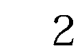

| ほんとうは強い日本 (PHP新書) | |
| 田母神俊雄 | |
| PHP研究所 (2011) | |
ほんとうは強い日本
田母神 俊雄
はじめに
東日本大震災は、大地震、巨大津波、福島第一原発の事故という三重苦の災害をもたらした。とくに放射能が怖いという風評が広まって、政府が避難指示を出した現在の福島原発周辺の放射能の状況は危険ではないにもかかわらず、住民は強制的に避難させられた。放射能被害だけは絶対に阻止するという政府の方針で、家を失い、財産を失い、避難先で病気のため死亡するなど、平成の強制連行とも称すべき悲惨な事態が生起している。
これまで我が国は、我が国が侵略国家であったという誤った歴史認識に苦しめられてきたが、いまこれに加えて誤った放射能認識が我が国を苦しめはじめている。日本の国は悪くなければならない、放射能も悪くなければならないというのだ。現在の放射線医学では、低線量率の放射線は健康にとって有益であるとする説もあるのだが、我が国は、放射能は限りなくゼロに近いほうがいいという誤った放射能認識にとらわれている。
歴史認識と放射能認識が対になって、我が国を弱体化しようとしている。今後、我が国が再生するためには歴史認識とともに放射能認識についても正していくことが必要である。
震災後、我が国政府は「放射線」に対する知識と情報の不足から、先頭に立って風評被害を撒き散らしてきた。もちろん、震災時には菅総理がこれを国難と位置づけて倒れる寸前であった自らの政権延命を企図したであろうことは想像に難くない。そんな下種の発想から政府の対応は混乱を極め、ことごとく後手にまわるという醜態を演じたのである。
一方で、東日本大震災で被災した東北人の我慢強さや自衛隊をはじめ警察、消防に従事する人たちの働きぶりには目を見張るものがあった。今回の大震災は、さまざまな面で日本の素晴らしさや強さを改めて実感する契機になったのではないかと思う。
震災後しばらくして、私はいわき市などの現地を訪問してみた。これまで何度も訪問してその光景がまぶたの裏に焼きついている塩屋崎灯台付近は、信じられない瓦礫の山で埋め尽くされてしまっていた。テレビの映像などである程度は予測していたが、実際に瓦礫の山を目の前にすると、津波の破壊力のすごさに思わず唸ってしまう。コンクリートの建物でも傾いているものがあった。友人の立派な家も跡形もなく流されてしまった。
今回の震災で家を失ったり、避難生活を強いられたりしている人たちには知り合いも多い。これらの人たちのなかには、震災後一カ月も水とおにぎりだけで生活していた人たちもいる。
この文明国日本で、これだけモノがあふれている日本で、そんなことがあっていいのかと思うが、それが現実であった。岩手県や宮城県でも同様のことはあったと思うが、福島県の場合は、原発が壊れ放射能が漏れたことによる風評被害が県民の生活を一層困難なものにした。福島第一原発がある浜通りでは、各種物資が輸送業者などによって福島県の県境までは届けられるが、彼らは放射能が怖いということで福島県内には入ってきてくれない。県境まで取りに来てくれといわれてもガソリンも枯渇しており、福島県民は取りに行くこともできない。そんな日々がしばらく続いたようだ。
それでも日本国民の忍耐力はたいしたものだ。不便な生活を強いられることになっても暴行や略奪も起きない。みんな他人のことを思いやる優しさをもち続けている。ある人が物資を届けに行ったら、「うちはまだ大丈夫だから、隣町の人たちに届けてあげてください」という人たちが多いという。そんなに間に合っているはずがないのに、それでも他の人たちに対して思いやりの心を失っていない。
また、会社など自分の所属する組織に対する日本人の忠誠心も見上げたものである。私の知り合いで、来年定年を迎える東京電力の社員がいる。彼はかつて原発の現場で仕事をしていたが、今回の原発対応で再び原発の事故現場に飛び込むことになった。多くの人が彼を止めた。もう十分東京電力で勤め上げ、すでに現場を離れているのだから、いまさら危険を冒して現場に出かける必要はない、若い人たちに任せてはどうかということである。
しかし、彼は次のようにいったという。
「私は東京電力の社員であったために、子ども二人を大学に入れてやることができた。自宅を構えることもできた。いま東京電力の命運がかかるこのときに、会社を見捨てて自分だけがいい思いをすることはできない」と。
彼は自ら志願して原発の事故現場に入っていった。私はこれを聞いて涙がこぼれ落ちそうになってしまった。このような日本人の職人気質が強い日本をつくってきたのだ。そして、いまなお多くの日本人がこのような気質を保持し続けている。
自衛隊員でも今回の地震で家族を失った人がいる。しかし、彼は災害派遣命令で家族のことを差し置いて被災民の救助、行方不明者の捜索などに当たっている。自衛隊は何千体もの遺体を収容したが、子どもなどの遺体を収容するたび、彼の心には家族のことが浮かんだであろう。それでもそんなことはおくびにも出さず任務に邁進している。
日本人はまだまだ捨てたものじゃない。戦後教育で、そしていまでは我が国政府が先頭に立って我が国のぶち壊しをやっているような状況でも、日本人が本来もっている優れた国民性は失われていない。冷戦崩壊以降、衰退モードに入っている日本ではあるが、政治さえしっかりすれば日本は再び強い国家として立ち上がるであろう。
なんとか我が国の政治に、歴史認識と放射能認識を正してしっかりしてもらいたい。私は、いまが我が国政治の底であると思う。日本はほんとうは強い。日本国民の優れた国民性が間もなく、かつての強い日本を復活させることであろう。
二〇一一年六月
田母神俊雄
ほんとうは強い日本●目次
第一章
第二章
第三章
第四章
第五章
第六章
編集協力◎南郷大／平藤清刀／鈴木良治
二〇一一年三月一一日に発生した東日本大震災は、国内観測史上最大の大津波を引き起こし、沿岸地帯の町を根こそぎ呑み込んだ。その一報は世界中を駆け巡り、各国の主要メディアは競い合うように、緊急特番を流し続けたのである。やがて街並みが津波に呑み込まれていく映像も、報道機関やソーシャルメディアを通じて世界中に流された。
また、東京電力福島第一原子力発電所の事故も、一九八六年に旧ソ連で発生したチェルノブイリ原発事故と比較されながら、ＣＮＮほか複数のメディアで大きく取り上げられている。
外国メディアでは、震災に関連する報道と併せて、日本人への評価ともとれる内容が数多く見られた。それらはおおむね、混乱のなかにあっても冷静さを失わない日本人への称賛であり、復興を祈る声援だった。
日本は元来、お上が国民を保護するという体制が続いてきた。非常事態になっても、しばらく辛抱して待っていれば、必ず国が動いて助けてくれるという信頼関係ができあがっていたのである。これがもし、黙っていたら何もしてくれないというような政府なら、いちいち下から突き上げなくては動いてくれないという焦りが出てくる。自分や家族の命がかかっているのだから、みな必死になる。場合によっては理性を失う。そういった焦りが他の国々では暴動や略奪という行為に人々を走らせると思われるのだが、日本ではお上と国民との間に信頼関係ができあがっているため、しばらく待っていれば必要なことはお上が手当てしてくれるのである。
その信頼関係もいまでは、国家と国民との間ではいささか揺らぎつつあるようだが、見捨てられることはないという安心感は、まだもっていてもよいだろう。
三月二〇日付の『ニューヨーク・タイムズ』に掲載された記事には、「日本から何を学ぶべきか」というタイトルが付けられた。
地震直後に事故を起こした福島第一原子力発電所で、被曝の危険を顧みず復旧作業に立ち向かう作業員の献身ぶりを称賛し、我欲を捨てて規律を尊重する日本人の行動規範を体現していると讃えた。さらに地震・津波・放射能漏れという想像を絶する苦難に遭いながらも耐えている日本人を「高貴で立派」と評したのである。
このような大災害が起こって、行政機関が一時的に混乱したり機能が麻痺すると、アメリカでは必ず暴動や略奪が発生するのだが、日本ではそういったことはほとんど見られなかった。もちろん火事場泥棒的な犯罪が皆無というわけではなかったが、無人の店舗を集団で襲って商品を略奪するという行為はなかったのである。
震災が発生してから約二週間後の三月二三日、アメリカの大手研究機関ＡＥＩ（American Enterprise Institute）では「日本の悲劇＝危機から分岐点へ？」というテーマで、東日本大震災が今後の日本社会や政治にもたらす影響を論じ合う討論会が開かれた。
ＡＥＩの日本研究部長で日本政治を専門とするマイケル・オースリン氏曰く、
「こうした状況下であったら、米国では必ず略奪や暴動が起こる。相互に助け合う日本人のような行為は、全世界でも少ない独特の国民性である」
また、ジョージタウン大学教授で日本の文化や社会を専門とするケビン・ドーク氏は、
「日本国民は、自制と自己犠牲の精神で震災に対応した。米軍の占領政策などによって日本の文化や伝統はかなり変えられたと思われていたが、文化の核となる部分は決して変わらないのだ」と述べている。
日ごろはなにかと日本に因縁をつけてくることの多い中国のメディアにも、今回にかぎっては日本人を讃える論調が目立っていた。
一一日の夜、中国版のツイッター「微博」に投稿された一枚の写真がある。地震の影響で鉄道がストップしたため、ビルのなかに足止めされた通勤客が、階段に腰を下ろしている写真だ。
誰が指示したわけでもなく、通行の妨げにならないように中央部分を空け、階段の両端に寄って腰を下ろしているだけの写真が、中国人に衝撃を与えたようだ。
「こうしたマナーのよさは、教育の結果だ。中国が国内総生産（ＧＤＰ）で日本を逆転しても、得られるものではない」という説明が付いていた。
日本人には「当たり前」「常識」とされている公共のマナーが、中国では「五〇年経っても真似できない」「われわれも学ぶべきだ」と、驚きとともに感動を呼んでいるのだ。
インターネットの投稿にも、震災発生の翌日から「非常事態にもかかわらず、日本人は冷静で礼儀正しい」と絶賛する書き込みが相次いだ。
中国では徹底した反日教育が行われており、日本人はさながら悪魔の化身のように思われている。ところが、震災に際して日本人が冷静な態度を失わないことや他人への心遣いを忘れないことに対して、驚きと感動をもって称賛している。その背後には、中国社会が美徳を喪失したことへの深い反省があるのだろう。
しかし、中国の一部には、やはりというべきか、どうしても日本を下に見たい人たちがいるようだ。中国の有識者やメディアのなかには、日本を支援しようという論陣を張りながらも、その中身を見ると「我が中国は、文明度の高い大国である。懐の深さと包容力の大きさをもって、日本民族の犯した罪を傍らにおいて、救いの手を差し伸べるべきだ」という、それはそれは慈悲深い、完全に上から目線の論調も見られた。
これに対して、われわれ日本人は、中国側の上から目線に惑わされることなく、彼らの厚意に対してのみ感謝の念を捧げればよいのである。
しかし、こうした「上から目線」を発しているのは、中国の〝いわゆる〟メディアや識者の一部にすぎない（中国のテレビや新聞は、民主主義国家のような報道機関ではなく、中国共産党の宣伝・教育機関であることが決められている）。ネットなどにあげられている一般の中国人の意見はやはり、冷静に対処する日本人を称賛する声のほうが多い。
東日本大震災が発生したとき、中国では折しも「第一一回全国人民代表大会」が開催されていた。メディアは通常なら、これの関連記事で埋め尽くされるはずである。だが、多くの新聞は日本の震災関連の記事に紙面を割いた。
新京報の電子版では、電気が消えた暗闇のなかでも避難民が秩序正しく列に並んで救援物資を受け取っている様子を報じ、日本人の秩序正しさと冷静さを評価している。また、高層ビルが激震に耐えたことを挙げ、中国でも公共建設の耐震機能を強化するべきであると、自国の耐震基準を批判する記事を掲載した。
同じ反日でも、韓国メディアは、反応がやや異なっていた。一四日の『ソウル新聞』の一面には、日本語と韓国語で「深い哀悼の意を表します」という見出しで、日本が早期に復興することを心から祈るという趣旨の記事が掲載された。韓国紙に日本語が掲載されるのは極めて異例である。
同じく韓国の経済紙『毎日経済』には、科学技術部長が「一日も早く災難を克服し、かつての凛々しい経済大国の姿を取り戻すことを祈る」というコラムを寄稿し、日本から忘れることのできない傷を受けたとしながらも「苦しいときの友こそ真の友だ」と強調した。
中国、韓国、北朝鮮を除けば、アジア各国はおおむね親日的だといわれる。
シンガポールで発行されている英字紙『ストレーツ・タイムズ』では、一六日付で「静かなる威厳」と題された論説が掲載された。そのなかでは、危機的な状況にあっても、礼儀と忍耐を忘れない日本人の姿を称賛し、その例として次のようなエピソードを紹介している。
民家が損壊して下敷きになった女性が救助される際、救助隊員に「迷惑をかけた」と謝罪し、さらに他の被災者を気遣ったこと。自動販売機の所有者が、被災者のために飲料を無償で提供した話。空腹にもかかわらず、食糧配給の列に並び、割り込む人もいないことなどを挙げ、そうした行動を「滅多に遭遇することがない英雄的行為」と評している。
「ほんとうに強い国だけが、こうした対応ができる」と感動とともに称賛したのは、ベトナムのメディアである。
誰もパニックに陥らず、自分の仕事に集中している日本人の姿を見て「われわれが学ぶべき多くのことがわかった」と、インターネット新聞に投稿した女性がいる。また、バスや公衆電話に整然と列をつくって待つ光景に「皆が冷静に秩序だって行動していた」と称賛し、「このような強さをもっているゆえに、世界で最も自然条件の厳しい国土で生き抜き、アメリカに並ぶ経済レベルを達成できた」と称える声が伝えられた。
インドのビジネスライン紙は、日本へ出張中に被災した技術者の声を伝えた。彼らはインドの部品メーカーから、栃木県内にあるホンダの研究開発施設を訪れていたのだ。
「天井や壁が完全に崩れ落ちるなかでも、規律は保たれていた」
「緊急時の態勢ができていた」
あらかじめ決められた役割分担に従って行動した日本人社員らの動きを、「まるで精密時計のようだ」と絶賛した。
タイの英字紙『ネーション』は、一ページを割いて日本語、英語、タイ語で「前を向いて歩こう日本」という復興を願うメッセージと、タイ国内の銀行で受け付けている寄付金の口座番号が掲載された。
ヨーロッパではドイツのメディアが、日本特派員や日本に在住するドイツ人らの声を交えながら、被災地の状況をかなり正確に報道している。
日本の高層建築物は耐震性に優れ、古い建物よりも耐震構造のしっかりした高層ビルの安全性が高いこと、学校や職場では日ごろから避難訓練が行われていることなどを、感情を抑えて事実のみを淡々と伝えていた。
日本人の態度を称賛するほかにも、具体的に行動を起こそうという趣旨で行動を起こしたメディアも少なくなかった。
ロシアではメディアと広告関連企業が四〇社以上の合同キャンペーンとして、日本への支援を訴えるポスターや看板でビルの壁面を埋め尽くした。これは電通とロシアの合弁企業が呼びかけて実現したもので、広告スペースは各社が無償で提供したのである。
さらに、ロシアでは面白い現象が起こった。
ロシアの大衆紙『モスコフスキー・コムソモーレツ』が三月一八日に掲載したコラムだ。
「日本人の悲しみを和らげるために、クリール諸島の四島を、無条件でいますぐ日本に返還すべきだ」というのだ。クリール諸島とは、日本でいう千島列島である。すなわち「この際、北方領土を日本に返そう」と訴えたのだ。
筆者は同紙の政治評論員ユリヤ・カリーニナ氏で、かつては四島の返還に反対していたという。しかし、このような震災が起こり、破壊的被害の前にはロシアの国益など小さいことである。国土のほんの一部を引き渡すことが、広大なロシアにとってそれほど惜しいことだろうかと問いかけている。新聞のコラムだから政治的には何も影響しないが、ロシアにはこういう考え方をもつ人もいたのである。
そして、世界の関心を最も集めたのは、福島第一原子力発電所の事故である。震災が発生した一一日の夜には、すでに一号機がメルトダウンしていた。それが発表されたのはずいぶん後になってからのことだ。各国のメディアは当然にメルトダウンを疑いながらも、真実を知らされないまま報じている。
スイスの『ブリック』紙は三月一七日付の紙面で、福島第一原発の事故に伴う注水作業に携わる五〇人の作業員を「彼らは電気が途絶えた闇のなかで酸素ボンベを背負い、火災や爆発の危険と隣り合わせの作業に従事しているヒーローだ」と称賛し、このことは世界が注目していると伝えた。
『ブリック』紙が報じた前日の『ニューヨーク・タイムズ』でも、この五〇人を「核の大惨事から日本を救う最後の頼みの綱」として、自己犠牲の精神を称賛している。その一方で、有効な対応策をとれない日本政府への疑問やいら立ちも露わにした。
また、アメリカのＣＢＳテレビは、この五〇人の勇気と自己犠牲精神に敬意をはらいながらも、交代要員を見つけるのは極めて難しいだろうと指摘した。
ドイツでは、日本の震災に関する報道の約三分の一を、原発事故関連が占めたという。日本から遠く離れているから福島第一原発の事故による影響はほとんど受けないだろうと思われるが、ドイツでは一九八六年に起こったチェルノブイリ原発事故で被災しているのだ。それゆえに原発事故には関心が深く、福島の原発事故が報じられると、反原発を訴える環境保全団体が主導して、数万人による人間の鎖を呼びかけて、稼働中の原発を取り囲んだという。
津波被害のすさまじさも、世界中の人々を震撼させた。ちなみに「ＴＳＵＮＡＭＩ」は国際共通語で、日本語の「津波」そのものの意味である。
地震のあと発生した津波は、沿岸の防波堤をいとも簡単に破壊した。市街地へなだれ込んだ津波は漁船、車、家屋、そして人など、およそ地表にあるものをことごとく呑み込んで流し去ったのである。ドイツのニュース専門チャンネル「Ｎ24」では、ＣＭと天気予報を除き、津波に関する報道を三日間連続で流し続けた。
ドイツ人のほとんどは地震を知らないといわれている。遠い島国で起こったこととはいえ、観測史上最大のエネルギーをもつ地震と大津波は、ドイツの人たちに、まさに「この世の光景とは思えない」ほどの衝撃を与えたのだろう。
海外メディアの関心は、時の総理大臣、菅直人氏にも向けられた。
「菅政権は、はたしてリーダーシップを発揮できるのか」
大半の日本人と同じ疑念を、海外のメディアも抱いていたようである。イギリスの『ガーディアン』紙の電子版は、「日本にはリーダーシップが必要だが、ナオト・カンはそれを実行できるのか？」と疑問を呈するコラムを掲載した。そのなかで、菅政権の政治的脆弱性やリーダーシップ不足は、震災前から問題視されていたと論じられている。
各国のメディアを比較してみると、日本政府に対しては原発事故への対応の不手際やリーダーシップが足りないことへの批判が目立つが、個々の日本人に対しては、おおむね申し合わせたように、冷静さと礼儀正しさ、そして他人を思いやる心を絶賛する論調が目立っていた。
海外では、とりわけ発展途上国では、このような事態になれば暴動や略奪が起こるのは、半ば「常識」とされているからだろう。パニックに陥ることなく落ち着いて行動できる国民性は、われわれ日本人が先祖から連綿と受け継いできた性質であり、世界に対して大いに自慢してよいのである。
一方で、日本の政治に関しては、世界が怒りを露わにした。この点については、次章で詳しく述べるが、その前に福島県出身の私が感じた東日本大震災後の報道、とりわけ放射性物質についての解釈と風評被害について考えてみる。
私は放射性物質について複数の専門家の調査を調べたが、今回の原発事故による放射能被害はまだ出ていないということを強調したい。もちろん原発施設の内部などは危険といわざるをえないが、政府が出している一〇キロ、二〇キロ、三〇キロといった避難区域では、住民の方たちが避難する必要がないのではないかということだ。
今回の原発事故は、国際的な自己評価尺度でチェルノブイリ原発事故と同じレベル７となっている。だが、原子力安全・保安院の四月の発表では、事故による放射性物質の放出は、チェルノブイリの一割程度とされている。さらに原子炉建屋の外の放射線量は、札幌医科大学の高田純教授などによれば一〇〇〇分の一以下である。
また、基本的に福島県とチェルノブイリを区別しなければならないのは、被災時に福島第一原発の運転は止まっていた一方で、チェルノブイリでは格納容器のない原子炉が試験運転中にメルトダウンを起こし、爆発したという状況だ。事故の状況がまったく違うということをまず念頭に置かなければならない。
そして、われわれは原発事故がなくても日々、放射線にさらされているということも知っておくべきだろう。自然界に存在する鉱物などから放射性物質は、絶え間なく放出されている。こういった自然放射線量の世界平均は、年間二・四ミリシーベルトとされている。
だが、世界中で核実験が行われていた一九七六年当時、東京の放射線量はいまの五倍だったという報告もある。世界で最も自然放射線の高い地域はイランのラムサールだそうだ。日本の一〇〇倍近い自然放射線強度があると聞いている。それでもみんな普通に生活しているそうだ。
これだけ日本人が放射能を恐れる背景には、放射能は非常に危ないものだという先入観がある。年間被曝量が二〇ミリシーベルト以下までは安全だとする政府の基準は容認できないといって、東京大学大学院教授で内閣官房参与の小佐古敏荘教授が政府を批判して参与を辞任した。放射能は非常に危ないといわれているが、一方ではまったく影響ないという医師もいて、普通の市民にはほんとうのところがよくわからない。
小佐古教授と同じ東大の稲恭宏医学博士が栃木県の護国神社で行った講演によれば、二五〇ミリシーベルト以下の放射線で治療が必要になったという事例は一例もないらしい。
一マイクロシーベルトになったから家のなかに居ろという。それが〇・三マイクロシーベルトになったといって喜んでいる。こんな数値はまったく関係ない。
そもそもＣＴスキャンを一回撮れば六・九ミリシーベルトの放射線を浴びるという。ＣＴスキャン三回で二〇ミリシーベルトを超えることになるが、一年に三回のＣＴスキャンで身体に異常が出るわけがない。あるいは、胸部レントゲンを〇・一秒でバシャッと撮る。これだけで六〇マイクロシーベルト程度の被曝になる。バリウムを飲んで胃のレントゲンを撮るときなどは、一〇枚以上もバシャバシャ撮られる。もうそれで一ミリシーベルトくらい浴びたことになるが、誰もが平気だ。
放射線は三分、五分、一時間とかの短時間にどれほど浴びるかが問題であって累積放射線量はあまり意味がない。ガン患者が受ける放射線治療ならば、年間で五シーベルトとか一〇シーベルトの強い放射線を受けても怖くない。
たとえば、仮に一回一〇〇グラムの力で肩を一万回トントンと叩いたとする。一〇〇グラムで一万回だから、肩にかかった力は累積で一トンになるが肩には何の影響もない。しかし一度に一トンの力でドスンと肩を叩かれたら、鍛え抜いたプロレスラーでも骨が砕けてしまうだろう。放射線とはそういうものであり累積被曝量はあまり意味のないことなのだ。
また、一リットル当たり三〇〇ベクレルの放射能を含む水を飲むと危険であるという政府の基準がある。しかし、これも目の前にあるグラス一杯の水を飲むと危険であるということではない。その基準値以上の水を毎日五リットル一年間飲み続けたら、一年後にガンになる確率が一万分の一ぐらい上がる可能性がわずかにあるということなのである。これは東日本大震災後に我が国を調査のため訪問したアメリカの骨髄ガンや白血病の専門医であるロバート・ゲイル医学博士がインタビューに答えた内容である。
宇宙には地球上にある一〇〇倍の放射線があるという。宇宙飛行士はそれだけの放射線を浴びている。国際宇宙ステーションに滞在する飛行士は、半年近くも宇宙で暮らしてきたのに、放射線が原因で健康被害を受けたという報告はない。札幌医科大学の高田純教授によれば、宇宙飛行士は毎日一ミリシーベルトの放射線を受け続けるということである。
この地球上にも放射線の強い場所がある。
たとえば、イランのマーザンダラーン州には、先ほど紹介したラムサールという町がある。湿原の国際的な保護を取り決めたラムサール条約が採択されたところだ。ここは地下に豊富な湯量をもったラジウム温泉があるために、なんと日本の一〇〇～二〇〇倍もの放射線が地表から発せられている。だとすればさぞかしガン患者の発生する率が高いことだろうと心配する人がいそうだが、疫学調査によればその地域には、世界平均に比べるとむしろガン患者は少ないのだ。
先日福島県では、ほうれん草に一キログラム当たり四万五〇〇〇ベクレルの放射性物質が検出されたという報道があった。ほうれん草の許容量は一キログラム当たり二〇〇〇ベクレルである。これはたいへんだと多くの人は思う。
しかし、ほうれん草は水で洗って土を落とすと放射線は一〇分の一以下になる。さらにポパイじゃあるまいし、ほうれん草を一度に一キログラムも食べる人はいないだろう。一度に食べる量なら一〇〇グラム以下である。農作物は放射性物質が付着していたとしても、土を落とすだけで値は一〇分の一以下になり、食べる量でさらに一〇分の一以下になる。四万五〇〇〇ベクレルの放射能は、四五〇ベクレルにしかならないのだ。記者たちも知っているのか知らないのかわからないが、マスコミの報道も日本国民に無用の放射能の恐怖を煽っている。
それを政府がきちんと説明しないものだから、間違った認識が広がってしまった。福島県から転校した小学生が、放射能がうつるといってイジメに遭っているという哀しいニュースが報道されている。イジメている子もその親も、正しい知識がないから子どもと一緒になって不安がっている。
はっきりいう。放射能はうつらない！
放射能を含んだゴミを多少吸い込んだって、外部から低線量率の放射線を受けたって健康には影響ない。東大の稲恭宏博士は、毎時一〇〇マイクロシーベルト以下の放射線は二四時間、三六五日受け続けても健康にいいだけで、なんら障害が生ずることはないといっている。これは年間にすれば八七六ミリシーベルトになる。
六月に入りテレビや新聞で、東京電力の被災現場で働く作業員のうち、この三カ月で九人の人が二五〇ミリシーベルトを超える放射線を浴びており、最大の放射線を受けた人は六八〇ミリシーベルトであると報道された。これらの人たちに健康上の被害が生じているのかといえば、まったくそんなことはないという。
それならば年間二〇ミリシーベルトで避難を強制されている人たちは、いったい何なんだろう。政府によって強制連行されているだけだ。
福島県で主に観測されているのはガンマ線だが、ガンマ線は電磁波なので家のなかに居ても外に居ても、浴びる量は変わらない。外に出ないように呼びかけているのは、放射能塵を吸わないためだが、福島原発の周辺はいま吸い込んだほうがいいくらいの放射能塵しか飛んでいないのだ。
よくチェルノブイリと対比して非難するコメントを聞くけれど、福島はチェルノブイリとはまったく違う。チェルノブイリでは、爆発したときに被曝によって三〇人近くが亡くなっている。だが福島県では、地震や津波による死者はいても、放射能によって死んだ人や被害を受けた人はいないのだ。作業員が足に被曝した事例はあるが、あれも熱湯を足にかけたと同じもので、放射能でどうこうしたというものではない。
もっとも、風評被害にもめげずにいまも現場で作業を続けている人たちは、勇気のある人たちだと思う。
現在の福島原発周辺の放射線量は、人体に悪影響を及ぼすという人がいる一方で、放射線医学の専門家である医師のなかには、この程度ならば危険はないと説く人もいる。そして、その医師に反論する医師がいるという話も、実際の反論も私は聞いたことがない。原子力工学をやっている学者が医師の意見に異を唱えても、それは反論したことにはならない。放射線の人体に与える影響は、医師がいっていることが正しいと判断していいだろう。
南相馬市では、放射能が毎時〇・二八マイクロシーベルトだから危ないということで、特別養護老人ホームに入居していたお年寄りたちまでもが強制的に避難させられた。このとき点滴に不具合が発生するなどで、一〇日間ほどで七人が亡くなったという。放射線の被害を避けるために避難したはずなのに、他の原因で亡くなるという理不尽さ。無理に移動させられなければ死なずにすんだともいわれている。ご本人やご家族の方たちは、さぞかし無念なことだろう。
いま首相がなすべきことは、放射能は危険であるという意見だけを採用して、安易に住民を強制的に避難させることではない。放射線を浴びることで後々どんな影響が出るのか、あるいは出ないのか、因果関係を証明するのは難しい。だから「危険である」「危険はない」という両方の意見を聞いて、実際に避難するか否かの判断は地域の住民たちに任せるべきなのだ。
「将来もしかすると、そういうことがあるかもしれません」と説明したうえで、避難したい人は避難する、残りたい人は残ればいい。いまの政府のやり方は、まるで平成のアウシュビッツ強制移住だ。政府も行政も、後から責任を追及されたくないから、杓子定規に動いている。
私は福島県出身だから、避難を余儀なくされている人たちのなかには知人もいる。私の妹が住んでいるいわき市は避難地域に入っていないから、いまも普段どおり住み続けている。給水車に並んで水をもらい、不便な生活を強いられている。そんな様子をテレビでは報道しない。遠くから撮った映像しか放送していない。
どこのマスコミにも、事故発生当初、原発から五〇キロ圏内に入ってはいけないという社命が出ていたという。テレビ局の社員やジャーナリストたちもひどいもので、社外のカメラマンに対して五〇キロ圏の外まで「写真をもってきてくれ」というらしい。放射線や放射性物質というものについて、いかに正しい知識をもっていないかがわかる。
これは個人の責任ではない。いままで知らなかったほとんど未知の世界のことがいきなり目の前に出てきたのだから、にわかに理解できず不安が先に立つのはある意味当然だ。だが冷静になって、よく考えてみよう。放射線治療に携わっている人は、仕事で毎日放射線を扱っている。人間の体内には、日常の食生活でも放射線を出しているものを、食物として外から取り込んでいる。
日本人は骨から七〇〇〇ベクレルくらいの放射線を出しているともいわれる。体の中から放射線を出しているということは、常に内部被曝しているのと同じことだ。しかし、それが原因で健康を害する人はいない。このような不安を払拭するためにも、政府が正しい知識の普及に努めなければならない。
日本の放射線科医たちは、事故による放射性物質による人体への影響はないとして、官邸に意見書まで出しているそうだ。彼らの証言をいくつか見てみよう。
先ほども紹介した、放射線医学の専門家で医学博士の稲恭宏氏による指摘から紹介する。「今回の原発事故による放射線量は、低線量率放射線療法と同等の線量であり、むしろ福島県産の野菜や海産物を食べたほうが体にいい」
政府が基準にしているＩＣＲＰ（国際放射線防護委員会）の二〇〇七年度の勧告では、年間一〇〇ミリシーベルトを超えると健康被害が出る危険性が高まるとされている。言い換えれば、一年に一〇〇ミリシーベルトを浴びなければ健康被害はないということだ。この一〇〇ミリシーベルトという数値について、東京工業大学准教授で物理学者の松本義久氏は次のようにいっている。
「一〇〇ミリシーベルト以下の被曝では、これまでに人体における影響が確認されたことはない。
同じ一〇〇ミリシーベルトの放射線を浴びるにしても、一度に一〇〇ミリシーベルトを浴びたときと、分割して、あるいは連続的に計一〇〇ミリシーベルトを浴びた場合では、後者のほうが影響が少ないことを知ってもらいたい。
これは、人体には生体防御力があり、少しずつ浴びる間にその都度生じた損傷の修復が可能だからだ」
札幌医科大学教授の高田純氏が、二〇一一年四月に福島原発の現地調査を行った。高田教授は世界各地の核実験場を訪れ、人体への影響を調査・研究をしてきた人だ。
このときは北海道からバスを乗り継ぎ、青森、仙台、福島、東京へと向かい広域にわたって放射性物質を計測していったという。それによると岩手県北上市に入ったあたりから放射線が検出され、仙台市内に入ると毎時〇・〇〇〇二シーベルトという値。避難区域に指定されている浪江町、双葉町、大熊町での測定で毎時〇・〇一七ミリシーベルト。
そして、福島第一原発の正面ゲートやフェンスなど敷地境界線では〇・〇五九ミリシーベルト。この値はチェルノブイリの事故直後の一〇〇〇分の一以下。高田氏は一〇ミリシーベルト程度の被曝は覚悟していたが、この数値は拍子抜けするもので、マスクも無用だったという。
世界保健機関（ＷＨＯ）緊急被曝医療協力研究センター長で長崎大学大学院教授の山下俊一氏は、福島県知事の要請で、放射線健康リスク管理アドバイザーとして福島県の被曝医療に従事していた。山下氏は五月に福島県二本松市で行った講演で「年間一〇〇ミリシーベルト以下なら問題はない。毎時一〇マイクロシーベルト以下なら、子どもは外で遊んで大丈夫です」といっている。ぜひ、このデータを年間二〇ミリシーベルトという根拠のない数値で恐怖に陥れられている福島県の母親たちに伝える必要がある。年間二〇ミリシーベルトは毎時二・二八マイクロシーベルトである。
福島県内の幼稚園や小中学校などの屋外活動で、制限する放射線量の上限値を年間二〇ミリシーベルトとした国の基準。これはＩＣＲＰ（国際放射線防護委員会）の基準に基づいている。はたしてこの基準は正しいのだろうか。
参考までに、六月二日午後に測定された各地の大気中の放射線量を見てみると、一部が屋内退避区域に入っている南相馬市で、〇・四七マイクロシーベルト。日々、放射線量は変化するが、この値で一年間推移した場合、年間で一七一・五五マイクロシーベルト。一ミリシーベルトは一〇〇〇マイクロシーベルトに当たるので、ミリで換算すると年間〇・一七一ミリシーベルトとなり、一ミリシーベルトにもほど遠いのである。
さらに、東京女子医科大学の川嶋朗准教授は、ブログで「年間二五〇ミリシーベルト以下の被曝で治療が必要と認められた例はない」としている。
また、四月に来日した白血病および骨髄ガン治療の権威であり、放射線被曝治療の専門家でもあるアメリカのロバート・ゲイル博士。博士はチェルノブイリ原発事故で当時のソ連政府に依頼され、現地で救命活動に従事している。博士の指摘も「現状の放射線量は人体に影響はない」というもの。
博士は「たとえば、日本政府は飲料水で放射性ヨウ素が一リットル当たり三〇〇ベクレルを超えると人体に影響があるとしているが、あくまで三〇〇ベクレルという数字は、この値以上の飲料水を毎日五リットル一年間飲み続けたら、ガンに罹患する確率が一万分の一上がるという可能性が、わずかにあるという程度の数字だ」としている。
ミズーリ大学の生命科学教授であったトーマス・Ｄ・ラッキー博士の一〇年にわたる調査である「人体への放射線の影響」も興味深い。この調査は「宇宙飛行士は、宇宙空間で地球の何百倍という放射線を浴びるが、これは人体にどの程度のダメージがあるのか」という着想からはじまっている。
だが、予想に反して調査結果は「宇宙飛行士たちは宇宙から帰ってくると元気になって帰ってくる」というもの。「微量の放射線は生命にとって有益である」という結論を導き出している。
博士が提唱した放射線ホルミシス効果（ある物質が高濃度か、あるいは大量に用いられた場合は有害であっても、低濃度か、微量に用いられれば有益な作用をもたらす現象のこと）は、免疫機能の向上、身体の活性化、病気の治癒、強い体をつくる、若々しい身体を保つ、と微量の放射線が人体へおよぼす効能をうたっている。博士の統計を見ると、年に二〇ミリシーベルトという値は体によいことはあっても、悪いことはないことがわかる。
落涙しながら内閣官房参与を辞めた小佐古敏荘氏の映像は、ショッキングだったかもしれないが、われわれはあの涙にだまされてはならない。文部科学大臣に「二〇ミリシーベルトの基準を下げろ！」と涙ながらに抗議した光景を報道でご覧になった方も多いと思う。
小佐古氏は放射線の専門家といわれているが、最近の放射線医学の状況はまったく理解していない人だそうだ。これは放射線医学を日々研究している専門家が指摘している。ＣＴスキャン三回で二〇ミリシーベルトになるのに、二〇ミリシーベルトの基準をもっと下げろという。泣くほどのことなのか。馬鹿馬鹿しいにもほどがある。彼は、放射能は低ければ低いほどいいという前時代的な考えに拘束されているのだ。現在では低線量率の放射線は健康増進に役立つということがわかっている。彼の意見に従えば全国のラジウム温泉、ラドン温泉などは直ちに閉鎖を強いられることになる。そしてこのようなことによって放射能が怖いという印象操作が行われているのだ。
いま福島県の小学校などでは学童の屋外行動をさせないように指導しているそうだ。しかし、何度も指摘したいがいま出ている放射線はガンマ線であり、これは電磁波なので屋内でも屋外でもその影響は変わらない。屋外行動を控えてもまったく意味がないのだ。逆に校庭で走り回ることもできない子どもたちはストレスがたまり病気になるかもしれない。子どもを守るには、確かな知識が必要だが、いま福島県の学童をもつ母親たちは政府の間違った情報で不必要な気を遣わされている。小佐古氏も、まさか放射線による被害を受けなければほかの被害はいくら受けてもいいと思っているわけでもあるまい。
日本は世界で唯一の被爆国であることも原発アレルギーの元になっているが、基本的に認識が必要なのは「被爆」と「被曝」はまったく違うということだ。音で聞くと同じなので紛らわしいが「被爆」は原子力を用いた爆撃を受けることで、「被曝」は単に放射性物質にさらされることをいう。
われわれは原発事故がなくても毎日「被曝」をしているが「被爆」はしていない。「ひばく」という言葉だけで恐怖を感じる必要はないのだ。
政府は避難所で過ごすことによる健康被害には目をつぶり、あらぬ嫌疑をかけられた放射性物質だけには敏感になる。優先順位を間違えているのだ。
政府は二〇一一年四月までに出荷制限を受けたすべての農作物の生産農家に賠償をすると発表をしている。これはオールジャパンで立ち上がろうとしているときに、自ら風評被害を引き起こし、その後始末を税金でするというとんでもない施策である。
風評被害は農作物だけにとどまらない。六月はじめの東京商工リサーチの発表によると東日本大震災に関連した企業の経営破たんは一四五件。阪神大震災では関連倒産が、一九九五年一月の震災発生から約一年間で一四四件。
三カ月弱で阪神を上回ってしまった。内訳をみると直接被災した企業の破綻よりも風評被害を受けたホテルや飲食店の破綻が目立つ。要するに震災後の経営破たんは震災ではなく、政府により引き起こされているのだ。
具体的に検証してみたい。放射性物質の暫定規制値が設定された三月一七日以降、五月二六日までに三九六一件の食品が検査され、うち三〇七件が規制値を超えていると発表された。放射性ヨウ素や放射性セシウムの値が計測されているが、ヨウ素１３１は放射線を出す力（放射能）が半分に減る半減期が八日と短いが、セシウム１３４は二年、セシウム１３７は三〇年と長いため、汚染の影響が長く残るといわれている。
これらを口にすると内部被曝をするといわれているが、実態はどうなのだろうか。
たとえば、お茶。お茶は生産者が生の茶葉を刈り取り、蒸してもみ、乾燥させて「荒茶」の形で出荷する。政府が規定する放射性セシウムの暫定規制値は生茶葉、荒茶とも一キログラム当たり五〇〇ベクレルだ。
日本食品分析センターの資料によると、一キログラムの生茶葉の放射性セシウム濃度が七一〇ベクレルだったケースで、荒茶にすると三二〇〇ベクレル、これを飲料にすると五四ベクレルだったという。
このように荒茶にすると水分が飛び、放射線量の濃度は濃くなるが、飲料にすれば荒茶の五〇～六〇分の一になるにもかかわらず、荒茶にも五〇〇ベクレルが適用されるため、内部被曝のおそれがないところの数値で、規制されてしまっているのだ。
専門家や生産者からは、「茶葉で規制値を超えていたとしても飲料にすれば希釈される。現在の茶葉の検査で出ている数値を考えると、飲んで人体に影響が出るとは考えにくい」「荒茶をそのまま食べる人はいない」といった声が上がっている。今回の出荷制限の措置はあまりに乱暴で、ただでさえ傷ついている日本をさらに痛めつけているのだ。農林水産大臣は、荒茶をそのまま食べるようなパフォーマンスをすべきだろう。
また、こういった事態の収束を担当している消費者庁がまったく機能していない。生産者が悲鳴を上げているのに、具体策一つ出せていない。名前が消費者庁というからなのか。急造された消費者庁という組織は、利害面で対立している省庁からの出向者で構成されている。組織としての意思統一ができないという実態がある。
おまけに放射性物質に関して食物検査をしている独立行政法人の食品安全委員会、これは専門機関ではなく、天下り団体で国民のためになされるべき危機管理など到底できない団体なのだ。加えて、この規制値をめぐっては、厚生労働省と農林水産省での対立もある。
政府が自ら風評被害を起こしておいて、風評被害の対応に追われているさまはなんとも滑稽だ。
五月に中国の温家宝首相と韓国の李明博大統領が、福島県の避難所を訪れたのは、福島県の安全性を内外に示したい菅直人首相の強い意向で実現したという。
だが、ここで考えてほしい。隣国の助けがなければ安全性を示せないのは、嘆かわしいことではないか。なぜ、自分でできないのか、頭を抱えてしまう。避難所では、三首脳が揃って、地元農産物の試食をするパフォーマンスをした。東京での夕食会では、千葉から青森まで被災地産の食材を使った料理が出されたようだが、この体たらくには中韓の首脳も「これはダメだ」と思ったのではないだろうか。
政府主導の風評被害は、被災地を心理的に圧迫している。福島県の若い母親のなかには放射線の影響を気にして、子どもを堕ろすかどうか、悩んでいる人もいるという。また、三月一五日が出産予定日であった福島県いわき市の女性が、避難してきた会津若松市の病院で出産しようとしたところ、放射能がうつるからという理由で、大部屋入院を拒否されている。
仕方ないので個室に入ったが、出産による入院は病気ではないため健康保険がきかず、一日一万二〇〇〇円もかかったという。おまけに両親がいわき市から来たら、放射能をもってきたと患者から苦情が出た。両親は会津若松市のビジネスホテルからも拒否され、温泉地の高級ホテルに泊まり、出産するまでに一〇〇万円もかかったという。
私は四月に、前述した稲先生と〝たちあがれ〟日本の西村眞悟前衆議院議員とともに計画避難区域になっている福島県の飯舘村を訪れた。このときは飯舘村のなかでも放射線量が高いとされている細川牧場に出かけた。
稲先生はこのとき、毎週飯舘村に車で放射線量の測定に出かけているが、だいたい週ごとに放射線量が三～四割下がっている、と指摘されていた。
六月二日の測定では飯舘村の放射線量は、二・八一マイクロシーベルト。私が訪問したときはもっと値が高かったと思うが、先生が「このぐらいの線量は体によい」といって、私たちは深呼吸をし、放射能をいっぱい吸い込んで帰ってきた。なんとなく元気になったような気がしている。
牧場に行ってみると美しい牧草地帯で牛が草を食み、とてもこれで避難が必要だとは思えない。長く低線量率放射線療法によって、多くの患者たちを病から救ってきた稲先生は、「放射線治療の必要のない健康な人が、低量の放射線にさらされた場合には、免疫機能が高まり、ガンの発生率が低下し、健康増進を促し風邪もひかなくなる」と繰り返していた。これは長く放射線医療にかかわってきた先生だからこそ、いえる重要な指摘だ。
細川牧場では、飯舘村の菅野典雄村長と面談した。菅野村長も、そこでは避難の必要はないのではないかと訴えていた。近隣の南相馬市には特別養護老人ホームに一〇〇人ぐらいいたが、危ないからと避難させられている。避難所で亡くなる例は報道されているが、このときは避難の途中で何人か、亡くなったという事実もあるからだ。
年間二〇ミリシーベルトというのは、二・二八マイクロシーベルト／時であり、これが人体に悪影響があるわけがないというのが稲先生の指摘だ。政府の設定は一年間だが、稲先生の測定結果を見れば明らかで、この線量が一年も続くわけがない。政府は安易に避難しろというが、着の身着のまま避難するということの困難さをいま一度考えるべきだ。
家を捨てる、仕事を捨てる、故郷を捨てるということが住民にとってどういうことなのか。これは経済的な損失だけではない、避難生活が続けば健康被害への懸念だけでなく、精神的にも支障をきたす可能性が高くなるのだ。
民主党の福山哲郎内閣官房副長官が、飯舘村に来て避難を要請したとき、菅野村長は納得できないといったそうだが、福山氏は「菅総理はやり過ぎくらいやるのがいいといっている」の一点張りだったという。そして避難先も決めずに、逃げろといっているのだ。総理の好みで家を失い、財産を奪われ、故郷を追われるようなことがあっていいのか。政府は福島県民を虐めているだけだ。国民の健康が第一といってごまかしているが、じつは政権の維持が第一なのだ、民主主義社会においてこんなことがあっていいのか。これはまさに菅総理による平成の強制連行である。
繰り返すが、六月中旬になって震災後福島原発で復旧作業に当たっている人たちの累積被曝線量が発表された。九人が二五〇ミリシーベルトを超えており、最大の被曝を受けた人は六八〇ミリシーベルトを超えているという。厚生労働省は東京電力に基準値を超えたことは遺憾であり注意を促すといっているが、これだけの放射線を浴びてもこれらの人たちにはなんら放射線障害は生じていない。二〇ミリシーベルトで家を追われ財産を没収されている福島県民はいったい何なのか。菅総理はこれをどう説明するのか。
政府が金科玉条のように崇めているＩＡＥＡ（国際原子力機関）やＩＣＲＰなどの国際基準は、福島原発の実態を踏まえた適用を考えなければ、多くの人々を困難に陥れることになる。チェルノブイリでは、事故直後に職員らが三〇人も亡くなっているが、福島第一原発の事故直後には一人も亡くなっていない。万死に値するのは、政府が事故に慌てふためいて、死ぬ必要のない人が放射線によるものではなく、避難勧告などで死んでしまっていることだ。
農作物の出荷制限をしたり、宇宙旅行に出かけるような格好をしたりしては風評被害を引き起こすに決まっている。しかし、当初慌てふためいてそういう行動をとったとしても、風評被害を食い止めるために目に見える行動を起こすことが必要である。実際には危険はないのだから、世間に名の売れた人たち五〇人、一〇〇人くらいを募集して、一カ月でも二カ月でも福島原発周辺で生活してもらえばいい。福島県の農水産物をどんどん食べてもらえばいい。
放射能については得体の知れないものとして恐怖感ばかりが先にたつが、放射能についての事実誤認を解くことが重要であろう。放射能がうつるので、福島から来た人には寄り付かないとか、福島ナンバーの車の隣には駐車しないなど、愚かな事態が起こっている。放射性物質が付着したものをさわったりすれば、少量が手に残るが、これは洗えば落ちるのだ。まして現在の福島の場合はその放射能は私たちの健康を増進させる程度のもので、身体に悪影響が出るものではないのだ。少し放射能を飲み込んで、少し放射線に当たったほうがいいのだ。これは私がいっているのではない。放射線医学の専門家がいっていることなのである。だから福島県から来た人たちと接触したほうがいいし、福島県の農水産物を食べたほうが健康になるのだ。
何度も指摘しておきたいが、巷では「うつる」などといわれているが、放射性物質はうつるものではない。汚染というが、これは除染、つまり洗えば取り除くことができるのだ。内部被曝をしても放射性物質の大部分は代謝される。
厚生労働省は、国民の健康増進を請け負っている。原発事故による放射線を気にするぐらいなら、深酒をしない、睡眠や栄養をきちんととるといったことに留意したほうがよほど健康によい、というアナウンスをすべきだ。これは長年、研究に研究を重ねてきた医師たちの統一見解であるのだから。
こんなことをいうのも、現在の放射能騒ぎは福島県民を苦しめるだけでなく、やがて経済活動を制限し、我が国を弱体化することにつながっているからである。日本人が住まなくなった福島県が中国人に乗っ取られる可能性さえ考慮しなければならない。放射能問題は、自虐史観にとらわれた歴史認識の問題に続く、第二の我が国弱体化工作なのである。
また、現状を鑑みれば、日本のエネルギーは原発なくして成り立たないという現実がある。われわれの生活には、何があっても便利さを捨ててまで自粛はしないという大前提がある。二〇〇六年、パロマ工業製のガス湯沸かし器の事故に端を発した一連のガス事故を思い出してほしい。二〇〇七年には北海道北見市で大規模なガス漏れ事故があった。パロマの件では、一九八五年一月からの二〇年間で二一人が一酸化炭素中毒での死亡が判明したのにもかかわらず、対応はどうだったか。
湯沸かし器の回収が行われただけで、都市ガスというエネルギーについての議論はそこそこで終わってしまった。このとき、ある専門家は「都市ガスとは石炭系ガス、オイルガス、天然ガスなどで製造される。この気体燃料が、地下のガス管を通って供給されるが、その際に高圧がかけられ大変危険な状態になっている。しかも不完全燃焼をした場合には、一酸化炭素が発生する。これはガス会社が自らの商品を継続して使用する場合は、必ず換気をするようにと、警告を発しているようなシロモノだ。そもそも、ガスは生活に密着した都市エネルギーとして使うのにそぐわない危険なものだ、という認識が必要だ」と指摘している。
しかしこういった現状があっても、ガスで人が死んだからといっても、社会からガスというエネルギーが排除されるか、といえばそうはならない。原発についても同じである。将来の科学技術の発展に期待するとしても、いますぐ原発をなくせば我が国経済はどん底を見ることになる。ましてや日本の原発事故では過労を除けば、人がまだ死んでいないという状況も忘れてはならない。原発は比較的安全である。それをことさら危険にしているのは我が国政府の対応である。決して原発そのものが危険であるわけではないのだ。
東日本大震災でさまざまな問題が露見したが、最も重大な問題は「政治力の貧困さ」だろう。
福島第一原発が津波により炉心冷却用電源が破壊されて、炉心溶融という大事故が起こった。初動体制はもちろん、その後の対応も後手後手に回って、官邸と東京電力が責任の押し付け合いを演じたり、海水の注水を中断したのしないの、言った言わないのと一週間にもわたって水掛け論をやってみたり、情報交換が円滑に行われていないなど、国民が注視するなかで醜い争いを演じた。
このような事態では、最終的に責任を負うのは政治なのだ。いざというときにどういう対応をするか、どんな発言をするか、国民みんなが見ているし、もちろん世界中からも注目されている。民主党が野党だった時代には、政府のやることをなんでも批判していれば、なんとなく格好がついたかもしれない。だがいまは政権与党だ。文句をいわれる立場なのだ。いまの政権には残念ながら、国民を守る立場だという自覚が見えない。
原子力行政は政府の完全な統制の元に進められてきている。だから東京電力がやったことの責任は政府にある。政府が東京電力を責めていることは、上司が部下に責任を押し付けているようなものだ。政府には部下がやった不始末は上司の責任であるという自覚が足りないのではないか。「あいつが悪いんだ、おれは精一杯頑張っているんだ」と自己弁護ばかりやっているような政権では、まったく頼りにならない。いまこの瞬間も責任回避政治が行われているのは、国家にとってたいへん不幸なことである。我が国の国民や企業を守ることは政府の責任であるということを認識すべきである。
政府の対応は、外国からも批判されている。日本の内閣には、指揮を執った経験のある者がいない。震災が起こってから首相官邸に大臣が集まってきて、
「どうする？」
「どうしようか？」
ガン首そろえて相談ばかりしていても、目の前の問題は何も解決しない。
そんなことをやっている間に、三日ぐらいすぐに経ってしまう。その間に、いったい何人の国民の命が失われるのだろうか。
我が国も諸外国と同じように自衛隊を中核とする緊急対応組織を準備したらいいと思う。現状ではそのような組織は準備されていないが、総理官邸はもっと自衛隊の組織を活用したらいい。自衛隊に一つずつ作業指示をして、指示したことだけやらせるのではなく、行動計画をつくるためにも自衛隊を使ったらいいのだ。
軍という組織は各種の事態に即応して行動できる準備ができている。「右へ行け」「左へ行け」と部隊を動かすオペレーションをやる部署があるし、一週間後あるいは一カ月後の計画をつくる部署もある。また、物資の調達や輸送配分を行う部署も決まっている。
まずは最初の二日間だ。この二日間に中央の指揮所では大部隊を動かすための準備が行われる。しかし、この間にも現地では人命救助作業が実施されるので、この間の行動については派遣した現地指揮官に任せるしかない。現地へ入って活動をやりはじめている部隊が、相互に状況や情報をやり取りしながら動かなければならない。この段階で現地の状況を掌握できていない中央の指揮所が、現地に対しあれこれ指示することは現地部隊の効果的効率的行動を阻害することになる。指揮所からの指示は現地の状況を掌握してからにすべきなのだ。指揮官は「いちばんいいようにやってくれ、責任は俺が取る」という姿勢が必要である。
政治主導とは政治家が自らすべてを決めるということではない。官邸は大きな方向性を決める。それぞれの担当が責任をもって調整し、調整が付けば案として現地へ流す。それを受け取った部隊は、現地の様子をいちばん知っているのだから、それに対して「ちょっと待ってくれ。先にこっちだ」と意見をいえばいい。それらを踏まえて最終的に官邸が決心をすればそれは立派な政治主導である。
総理大臣官邸は、日ごろは政治主導といいながら、実際には現地で活動している部隊の邪魔ばかりしている。現場の状況をいちばんわかっているのは、実際に現場で活動している部隊だ。官邸はその支援をすればいいのに、指揮の根本的なことを理解していない。
指揮を執るとはどういうことか。トップが現場に対して「あれをやれ、これをやれ」と口を出すことではない。現場がうまくまわっているときは、指揮官は動かなくていい。黙っていればいいのだ。そして現場がうまく動かなくなったときに、はじめて指揮官が自ら仕切ればよいのである。
東日本大震災では、現場の立ち上がりは早かった。しかも初動からうまくまわっていたのに、官邸が政治主導を勘違いして、仕切り直しばかりさせたから混乱が生じたのである。
トップがなんでもかんでも掌握しようとしてはダメだ。やろうとしても、できるわけがないからだ。いまの日本のトップは、すべて掌握しないと気がすまない人なのかもしれないが、しかしそれをやろうとすると現場ではことあるごとに「まずは上に報告だ」ということになってしまう。何かやるにしても「まず上に報告してから」と、報告が先になる。
現場で「いま、こうすればいい」と決めても、いちいち上にあげて「やってもいいですか？」とお伺いを立てないと動けなくなってしまう。そのやり取りだけで、たいへんな時間のロスが発生する。
トップが自ら前へ出なくても、現場はちゃんと考えて動いている。もし動いていなかったり、これでは拙いというときになってはじめて直接指示を出せばいい。現場で活動している者からすれば自分たちが一生懸命働いているときに、トップのメンツを立てるためのような指揮は邪魔以外の何物でもないのだ。
いまの政権は、政治主導を勘違いしている。何もかも掌握することが政治主導ではない。
現場は現場でうまく動いている。だったら信頼して任せておけばいい。これだって立派な政治主導なのだ。
なぜなら「どう動けば効率的か」、「適切な対応か」、「どうすればいちばん早いか」を知っているのは現場の人間だ。そこへ上からうるさく口を出したり、「報告しろ」などといい出すと、しだいに指示待ち人間になってしまって、どんどん動けなくなっていく。無駄な時間が生じて、やがては非効率になってしまう。
ところが、日本の政治家や官僚組織は、批判を極端に恐れる性質がある。後から文句をいわれたくないから、なんでも知っておきたいのだ。本来ならば現場のことは現場に任せて、もしメディアから文句をいわれたら「そういうこともあるだろう。細部は任せてある」と、批判に耐える覚悟が必要だ。
首相が「俺が責任を取るから、必要と判断したことは好きなようにやれ」と腹をくくれば、一線部隊の指揮官は常日ごろから覚悟ができているから、正義感をもって動けるのだ。
首相にかぎったことではないが、有事の場合には現場が主導しなければならない。政治家が指揮を執るのは無理なのだ。指揮というのは、現場で目の前の状況を見ながら、適切な指示を出す。慣れていないと、なかなか難しい。そういうことに慣れているのが「軍」、すなわち日本では自衛隊だ。自衛隊をもっと有効活用すればいい。しかし、日本の政治家には「自衛隊の世話にはなりたくない」という意識が刷り込まれているようだ。
それが少しずつ変わり始めたのは、一九九五年の阪神淡路大震災のころからだろうか。その後の新潟県中越地震でも、自衛隊が当たり前のように出動して救援活動や被災者の生活支援活動を行っている。それまでは自衛隊の活動を制限するような法律が多く、足かせになっていた。それが徐々に改正されて、法の壁に阻まれて思うような活動ができないということもなくなった。
繰り返すが政治主導とは、政治がなんでもかんでも抱え込んで決めてしまうことではない。現場で決められることは、信用して、任せて決めさせればよいのである。現場がうまく動いているときは、口を出さない。現場が困っていたら支援をする。それがほんとうの政治主導だ。
もう一つ、政治主導がうまく機能しなかった例として、今回の大震災では地震と津波で沿岸の石油精製施設が火災を起こし、被災地や周辺地域でガソリンが足りないという事態が発生した。こうなるとガソリンがないから物資を運べない、仕事ができるのに動けない、家族を探しに行けない。
東京では「生活用品がなくなる」というデマが広がり、食料やトイレットペーパーの買い占め騒ぎが起こって、コンビニやスーパーなど小売店から商品が消えた。福島の原発周辺では、商品が入ってこないから店頭に商品が並んでいなかった。
しかし、そんな混乱のなかでも、全国規模で見れば、ガソリンは十分あったし、食料品もトイレットペーパーも、十分な量が流通していたのだ。
どうしてそんなことになったのか聞いてみたら、原発事故で放射能が怖いといって、トラックのドライバーが福島に行くのを拒んでいるという。県境まで運ぶから、そこまで取りに来いというのだ。
こういうときは「国家の緊急事態だから運べ！」と政府が命令できれば、無用な騒ぎを起こさずにすんだはずだ。
今回の東日本大震災では津波の大きさなどで「想定外」という言葉があちこちで聞かれたが、想定外という言葉は何もできなかったときの言い訳にすぎず、たいへん危険な言葉である。
ゆえに私たち日本人は、今回の災害を想定外で片づけてはならない。震災以後、一連の経緯で露呈した政府の危機管理能力のなさはいうまでもないが、なによりも日本人が身につけなければならないのは、国民個人レベルの危機管理能力、つまり有事に対しての対応力だろう。この一環として政府やメディアが出す情報を鵜呑みにしてはならない、ということをここで強調しておく。
政府の愚策の真骨頂が、福島第一原発事故の現状分析とそれに対する対応だ。福島第一原発は大地震と津波により、どういった被害を受け、どのような状態に陥っているのか。
政府の対応のまずさは、二つに分けて考える必要がある。一つめは格納容器の破損、メルトダウン（炉心溶融）などによる放射性物質の拡散を収束させるうえでの対応。二つめは放射性物質に関する情報の出し方および避難勧告、農作物などの出荷制限の措置だ。今回の原発事故は、人災だといわれているが、この人災は前者以上に後者の措置が被害を拡大させているといっていい。
後者の措置のなかで最も政府が国民を不安にさせているのが、第一章でも再三指摘した原発から放出される放射性物質に関するアナウンスだ。もちろん最悪を想定することは危機管理のうえで非常に重要である。しかし、政府がとっている対応は、国内を向いたものではなく、国際基準に則ったものだ。
極端にいえば、国内で人が死んでいても、国際基準に抵触しなければそれは問題としない、という考えだ。しかし、われわれはＩＡＥＡ（国際原子力機関）の顔色をうかがうのではなく、なによりも被災地に気配りをしなくてはならない。
福島第一原子力発電所の事故を受けて、原発推進だった日本のエネルギー政策が変わろうとしている。世界でも、原子力発電に逆風が吹いている。菅直人首相は二〇一一年五月にパリで行われた経済協力開発機構（ＯＥＣＤ）設立五〇周年式典で日本の自然エネルギーの発電比率について、「二〇二〇年代のできるだけ早い時期に、二〇％とするような大胆な技術革新に取り組む」とした。
首相は二〇一〇年六月に閣議決定した原子力の発電比率を現在の約三〇％から五〇％に引き上げるとするエネルギー基本計画を白紙から見直すと発表した。
世界の原子力発電への反応も過敏になっている。ドイツやスイスはいち早く脱原発を表明、フランスやアメリカは強気だが、世界各地で原発反対の住民運動が起こり、原子力発電は推進しにくい状況がある。
この趨勢を受けて代替エネルギーの議論が活発になってきている。しかし、火力は環境によくないということで、太陽光や風力といった再生可能な枯渇することがない自然エネルギーが注目を集めている。
福島の原発事故の前になるが、二〇一一年二月には、国際環境ＮＧＯのＷＷＦ（世界自然保護基金）が「二〇五〇年までに地球全体で使われるエネルギーを一〇〇％自然エネルギーでまかなえる」と発表している。
だが、このように自然エネルギーが注目を集めても、日本では確たる基幹エネルギーにはならないだろう。この根拠となるのが、自然エネルギーの発電コストである。経済産業省によると現在の太陽光発電のコストは概算で一キロワット時当たり四九円、水力が一三円、風力が一〇円で自然エネルギーは、火力（液化天然ガス）の六円、原子力の五円といった額を上回っている。
そして、競争力の働かない電力産業では、発電コストを下げる技術革新は起こりにくい状況があり、この価格差は簡単には埋まらない。
この状況がエネルギー代替の難しさを象徴している。なぜかといえば、「環境にいいから」「原発は危ないから」という理由で、人は発電コストが加算された高い電気料金を払うだろうか。私は払うとは思わない。
たとえば、二〇〇八年七月に原油の先物価格が一四七ドルをつけた際などは、バイオエタノールなどの議論が活発に行われた。だが、原油の価格が下がりはじめたとたんにその議論が消え、社会は環境などに配慮せず、なんの抵抗もなく、再び原油を使いはじめている。どんなに美辞麗句を並べても、人は高いエネルギーよりも安いエネルギーを使うのだ。
また、電気は何で発電されようと品質には関係ないので、そういった意味でも安いものが使われる。「いやあ、やっぱり、太陽光発電の電気はいいなぁ」とはならない。
そういった状況で、はたして原子力発電の代替エネルギーとして自然エネルギーは成り立つのだろうか。
現在の自然エネルギーの問題点から考えてみたい。二〇〇九年度の電力一〇社合計で国内の発電量構成比は火力六一％、原子力二九％、水力八％、その他一％となっており、自然エネルギーがこの一％だ。自然エネルギーが環境にいいのに、一％という比率になっている現実を見なければならない。
まず、太陽光発電。東京電力が発表している資料によれば、事故前の福島第一原子力発電所の年間発電量は三三テラワット時。対する住宅太陽光発電は、日本全国の住宅向けソーラーパネル八〇万件×四ＫＷ×三時間×三六五日として約三・五テラワット時。一〇〇〇万戸計画はあるが、現状では日本全国の住宅太陽光発電の電力を集めても、およそ福島第一原発の一〇分の一の発電量ということになる。
住宅太陽光発電で比較したのには、理由がある。日本には太陽光パネルを大量に張れるような広大で平らな土地がないのだ。そして、夜に発電ができないのはもちろんだが、四季があり天候の変化が激しい日本においては、いつでも太陽光にめぐまれるとはかぎらない事情があり、安定供給の至上命題を果たせないという状況がある。
次に、風力発電。新エネルギー・産業技術総合開発機構（ＮＥＤＯ）の調査によると、日本全国で稼動する風力発電施設は二〇〇二年度には五七六基だったのが、二〇一〇年三月には、一六八三基にまで増加しているという。ただ、日本は国土が狭く、平らな土地が少ないため、風車を建てられるような土地が少ない。
また、台風があり、風量も風向きも変化が多く、安定した風が吹いているところが少ない。加えて騒音による健康被害や景観の問題で自治体の反対にあう例も少なくない。
そして、火山国ならではの地熱発電。日本の地熱資源の保有量は世界三位、潜在的には原子力発電所七〇基分に相当するエネルギーがあるとの試算もある。にもかかわらず総発電量に占める地熱発電の割合は、約〇・三％にとどまっている。
日本においていちばんの阻害要因になっているのが、地熱エネルギー資源をもつ土地の八〇％近くが、国立公園や温泉地などの観光地になっていることだ。地熱発電所建設には日本各地で自治体の猛烈な反対がある。
最後に、水力発電。戦後しばらくまで日本の主力エネルギーは水力発電であった。日本の水力発電による発電量は、その後あまり変化することなく今日に至っている。エネルギーが需要を伸ばすたびに別のエネルギーが開発されていったという流れだ。
天候に左右されず、揚水式発電など利点も多いが、問題点はダムの老朽化である。日本のダムは高層ビル同様、壊すことを前提につくられておらず、災害などに対する耐久性の担保がされていない。コンクリートはいつか壊れるものであるにもかかわらず、ダムは車の破壊検査のようなことができない。
問題点は多いが、自然エネルギーがもてはやされる理由は、なんといってもＣＯ排出量の少なさだ。電力中央研究所の資料によると、一時間に一キロワット発電した場合、ＣＯの排出量を多い順に並べると、石炭火力九四三グラム、石油火力七三八、ＬＮＧ火力五九九、太陽光三八、風力二五、原子力二〇、地熱一三、水力一一。太陽光以降は発電によるＣＯの排出はほとんどない。設備運用にともなう排出だ。
ここで見えてくるのが、原子力発電もクリーンエネルギーとして扱われる状況である。電気事業連合会が発表した統計によると、日本の二〇〇七年度のＣＯ排出量は前年度比で一四％増加したという。この増加の理由の一つには、原子力発電所の稼働率が同比で九％以上低下し、発電量に占める火力発電の割合が六六％まで上昇したことが挙げられる。
日本は「二〇二〇年までに九〇年比で二五％温室効果ガスを削減する」という国際公約をしている。しかし、温室効果ガスの削減は、原子力発電が命運を握っているといっても過言ではないのだ。
原子力発電は「一基で約三〇万世帯分もの電力供給が可能」といったバツグンのコストパフォーマンスをもち、しかもクリーンであるという他のエネルギーにはない大きなアドバンテージがある。
原発は「トイレのないマンション」とも表現されるように、使用ずみ核燃料を無害化して処理する方法はいまのところなく埋めるしかない、といった状況も後回しにされてしまう現状があるのだ。
エネルギー政策というのは、価格の変化によって転換を迫られるものだ。化石燃料はいずれ枯渇するといわれている。量が少なくなれば、自然に価格は上がっていく。価格が上がれば代替を何にするかという議論が自動的に巻き起こるのだ。一時、バイオエタノールなどが話題になったが、これも化石燃料の代替を探すなかで起こった動きだ。
繰り返すが、エネルギーは安いものが使われる。いまは原子力や火力が安く安定供給できるエネルギーなのだ。エネルギーを考えるうえで、真っ先にリスクと考えられるのは価格高騰だということを肝に銘じておかなければならない。
私は原子力推進派でも自然エネルギー否定派でもない。いずれエネルギー政策の転換は必要だが、いまはそういった状況にない、といっているだけなのだ。
国を守るという点では、エネルギー自給率（約四％）を高めることは重要である。古い話だが、太平洋戦争時はアメリカから石油を止められて軍艦も動かせないありさまだった。地熱にはふれたが、日本が自前で供給できるエネルギーとしては、メタンハイドレート（メタンなど、天然ガスが水と結合することでできた固体の結晶）がある。日本の領海内には日本で消費される天然ガスの約九〇年分が埋蔵されているとの報告もあるが、これも先ほどから述べているように、現状ではコストに見合わない。
コストを考えると、燃料を輸入して発電をする他に日本には手立てがない。原発の燃料になるウランは、政治的に安定しているカナダやオーストラリアなどから輸入しており、火力発電の燃料よりもリスクが少ない点も、原子力のアドバンテージと考えていい。
エネルギー政策を考えるうえでは、電力会社のあり方についても認識が必要だ。まず、原発事故を受けて東電の損失を誰が穴埋めするのか、ということから考えてみたい。
東京電力が五月に発表した二〇一一年三月期の連結決算は、事故処理費などが膨らみ純損益は一兆二四七三億円の赤字に転落。金融機関を除いて日本企業の赤字額としては過去最大だ。事故にともなう損害賠償額も数兆円と試算されている。
これを誰が払うのか。
東電の責任問題を問う声が上がっているが、電力会社は国策で動く。首相の一声で中部電力浜岡原発が止まったのは、こういった構造があるからだ。
そして、いったいこの負債を誰が穴埋めするのか。われわれが大前提として考えなければならないのは、電気は他の商品と違って、東電が信用できないからといって、他から買うということができないという状況である。
ゆえに東電にかぎらず寡占状態である日本の電力会社が損失を出せば、電気料金に転嫁されても仕方のない構造がある。電力会社は独占企業なので、つぶせば電気は止まってしまう。今回のような損失を抱えれば通常、倒産してもおかしくないが、電気は止められないので、東電はつぶせないということになる。
電力会社と国が一蓮托生なのは、電気料金の構造を見ればわかる。電気料金に政府が自治体にばらまく交付金が入っている。つまり、政府が原発など発電施設の用地買収に当たって自治体に配る交付金が、電気料金で徴収されている。これは「離れですき焼き」と塩川正十郎元財務大臣が表現した特別会計として計上されているのだ。
枝野官房長官からは、金融機関の債権放棄発言も飛び出したが、東電は金融機関からも特別待遇を受けている。金融機関の東電向けの融資残高は、二〇一一年五月の時点で原発事故後に緊急実施した二兆円分を含め、計四兆円に上る。
金利は優良企業向けの年〇・五％が適用されている。五兆円の社債は、通常と異なる「一般担保付き社債」で元利払いがあらゆる債権者より優先する。約六三兆円規模の国内社債市場において東電は、その一割近くを占める最大の社債発行企業なのである。
株主は七四万人。簡単に債権放棄などできるはずもなく、さまざまな面で通常の民間企業とは事情が異なっている。
電力会社への設備投資は政府の景気対策だった時代もある。文字どおり、公共事業だったわけだ。名目民営・実質国営といっても間違いではない。
普通の企業の場合は、今回の東電のような事態に陥れば、経営破たんと判断され、破産するか、更生会社になる。その時点で金融機関は債権放棄をする。
東電の賠償は政府が新たに賠償機構をつくり、そこに交付国債を交付し、東電は必要に応じて交付国債を現金化して賠償金を支払うというスキームだ。
こういった状況を受けて、電力の自由化といった議論も活発だ。発送電分離、現在は電力会社が独占している送電網を開放し、消費者が電力を選べるようにするということだ。ここで競争原理が働き、東電も今回のような事故は起こさなくなるといった議論のようだが、われわれは民間に任せてよいものとそうでないもの、市場原理にさらしてよいものとそうでないものがあることを認識しておかなくてはならない。
はたして、民間企業が市場と向き合いながら原子力発電所を運転し、電力の安定供給ができるだろうか。事故が起きました、人が死にました、倒産します、ではすまされない。
また、スマートグリッド（次世代送電網）といわれるような送電全体を考えなければならない技術革新に誰もが参入できる、そんな状況下で可能なのだろうか。いままで大量に捨ててきた電力を最適化するスマートグリッドの導入を急がなければならないときに、電力の自由化をすれば、これを遅らせることは間違いないのだ。
電力はライフラインである。軍隊と同じように民営ではできない構造をもっている。サブプライム、リーマン・ショックの一連の騒動を見れば明らかだが、市場は間違うことがある。ただ、国は間違うことを許されていない。
だからこそ、国が危険な原子力発電を運転することを電力会社に許可している。国の責任の元に電力会社は動いているのだ。
そうすると国営にすればいいではないか、といわれるだろうが、ここで電力会社を国有化すれば「日本は市場で責任がもてない」と世界に発信することになる。相反するところもあるが、国鉄にしろ、電電公社にしろ、国の成長に従い民営化されてきた。世界第二位をひた走ってきた先進国が国営企業を増やすことなどできない。
ここで違和感を禁じえない例を挙げておきたい。
佐藤雄平福島県知事の東京電力への抗議である。確かに自治体の首長として県民の安全を確保するのは義務だが、福島県は原発を受け入れているおかげで国から多額の交付金をもらっている。
元高知県知事の橋本大二郎氏は、使用ずみ核燃料の処理施設建設をめぐって国に「札束で頬を張るようなマネをするのか」と、憤って突っぱねていた。だが、佐藤知事は甘んじて頬を張られたのだ。あれだけ怒るなら、まずもらった金を完済してから怒るべきだろう。
五月二〇日、東電は福島第一原発で計画中の七、八号機の増設を中止した。同時に一～四号機の廃炉も正式に決めている。これを受けて、第一原発のある福島県大熊町の渡辺利綱町長は、「現状では廃炉もやむをえないが、雇用の確保で原発が果たしてきた役割は大きい」と発言している。われわれは、事故があってもこういった声があることも認識しておかなければならないだろう。疲弊する地方を原発が救っている現状もあるのだから。
東日本大震災では思いのほか多くの国から支援の手が差し伸べられたが、とりわけ多くの人員と装備を割いてくれたのがアメリカだった。空母まで動員した「Operation Tomodachi（トモダチ作戦）」は、日米関係の絆の強さを世界中にアピールした。
だが、アメリカが本気でボランティア精神〝だけ〟で日本を助けてくれたわけではないことは、誰でもちょっと考えたらわかることだ。昔からアメリカは国益にならないと動かない国である。ところが、日本人は簡単に他人を信じてしまうから、アメリカが国を挙げて助けてくれたと喜んでいる。
国際社会は、はっきりいって「信じる者は騙される世界」だ。
地球上にある富と資源は、世界の全人口が豊かな生活を送れる分だけ準備されていない。常に資源の分捕り合戦が行われている。第二次大戦までは、軍事力を使って分捕りに行った。だから、軍事力の強い国は豊かな生活ができた。
しかし、いまは違う。軍事力を簡単に使えない時代になり、代わりに思想や情報を駆使した情報戦で富と資源を奪い取る。だから世界中でスパイが暗躍している。情報戦に勝たないと国益を守れない時代になったのだ。
アメリカは「情報」をたいへん重要視する国で、武力で勝っても情報で負ければ、戦争に勝ったことにはならないと考えている。だから、イラクでも戦闘は終わっているのに、アメリカのいうことをきく国にしようとして、懸命に情報戦を展開しているのだ。
戦った相手国に情報操作をして「アメリカはいい国」「アメリカのおかげで平和になった」と思わせたいのだ。同じことは、戦後の日本に対しても行われた。そのせいで日本はいまだに、先の大戦では日本はひたすら悪者で、侵略戦争を仕掛けたあげく原爆まで落とされたのは、日本が悪いから仕方ないのだという反日思想から完全に抜け出せないでいる。まさにアメリカによる情報操作が行われたせいである。
日本の政治家で、情報戦の重要さについて認識している人は極めて少ない。北朝鮮、ロシア、中国など紛争を抱える国の情報収集には取り組んでいるが、それでも自力ですべての情報を集めて分析する能力はない。アメリカにとってはそのほうがむしろ好都合で、日本をコントロールしやすいのだ。
まともな独立国なら、敵対する国はもちろん友好国の情報も収集するのが当たり前なのだが、そのような体制をつくることをアメリカが許さないのである。
日本でもかつて、アメリカの情報を収集する体制をつくろうとしたことがある。だが、情報戦でも日本を自立させたくないアメリカによって、ことごとく潰されてきた。
いまの日本では、保守派といわれている政治家、評論家、学者らの大半は、アメリカのいうとおりにしていたら日本は豊かで平和になるという認識をもっている。ほんとうはその逆で、アメリカのいうとおりにしていたら、日本は損をするのだ。
ただ、そこでアメリカを非難するようなことをいうと、自らの政治生命や学者生命が危うくなってしまう。せっかく知名度が上がってきたのに、テレビに出られなくなってしまうから、誰も本音をいわない。二一世紀の現代は軍事力で引っ掻き回さない代わりに、情報でかき回して、日本の富や、ときには主権まで奪われている状態だ。
情報戦は経済の世界にもある。中国のＧＤＰが日本を追い越し、世界第二位に躍進した。今後も中国経済は伸び続ける。ほんとうにそうだろうか。統計の改竄、情報操作ではないのだろうか。
考えてみれば、中国では投資が景気を牽引し消費が落ち込んでいる。その裏を探ってみると、見えてくるのは中国の住宅バブルだ。誰も買えないし住まない住宅を売買して、値段を釣り上げる。そうやって盤石な経済基盤を築いているふりをして、世界から投資を呼び込もうという魂胆なのではないか。
そもそもマルクス主義の国が、一方で自由主義経済も進めるという一国二制度をやりながら、二〇年も経済成長が続くなどということはありえない。どこかで粉飾決算をやっているのだろうと、世界の経済学者の誰もが考えている。
いまの中国は、圧倒的多数を占める「食えない人たち」の不満が積もり積もって、いつ暴動が起こってもおかしくない。だから、格差が開くインフレになると困るわけだ。しかもこの一年の間に、金融引き締めを一〇回もやっている。世界史上にこんな国は見たことがない。ただ、引き締めすぎてバブルが崩壊してしまったら、もっと困る。インフレが起きないように、しかしバブルが崩壊しないように難しい舵取りを強いられているのが、中国経済の現状だ。
一九五五年（昭和三〇年）に自由民主党が成立したときに目指していたのは、自主憲法の制定だった。戦後、アメリカの占領下から独立して三年目。世界は東西冷戦の真っただなかで、日本はアメリカに守ってもらいながら、いよいよ高度経済成長の時代に突入する直前の時代だ。
自主憲法の制定を目指していたはずなのに、それがいつの間にかおかしくなってきた。アメリカ側に属してさえいれば、安全保障も経済成長もうまくいくのではないかという思考に陥ってしまって、経済活動に専念し、国の防衛に関してはアメリカから「協力してくれ」と求められた範囲でしか考えてこなかったのが実情だ。
第二次大戦が終わったときのアメリカのＧＤＰは、世界の半分を超えていた。しかし、いまはどうか。私はおそらく、ここ二〇年でアメリカ中心の経済は終わるのではないかと思っている。
国家予算を組むにも苦心惨憺しているが、医療費や社会保障費など、国内関係費を削減することは難しい。唯一削減できるとすれば、年間五〇兆円使っている軍事費である。そうなるとアメリカは今後必ず、日本に対して「思いやり予算」の増額を要求してくる。
しかし、日本には思いやり予算を要求されるまま増やし続ける余裕なんかない。いよいよアメリカに見放されるかと思われそうだが、考えようによっては、日本がアメリカから自立するチャンスでもある。
「日本の基地を維持するのが苦しいなら、自衛隊を増強して補いましょう。つきましては米軍は、今後少しずつ撤退してくれていいですよ」という方向で、アメリカに求めていくべきである。このままアメリカに金を出し続けたら、ますます自立から遠のいてしまう。しかし日本を軍事的に自立させたくないアメリカは、これまでどおり我が国の守りをアメリカに依存させておくために各種の手を打ってくることだろう。日本を自立させないでおいてアメリカの意のままに動かすというのがアメリカの基本的な戦略である。
アメリカがミサイル防衛構想をしきりにもちかけてくるのは、この戦略の延長上にある。
自衛隊は攻撃力をもたないので、我が国が攻撃を受けたときにはアメリカに反撃してもらうということになっている。軍というのは攻撃力、防御力のバランスがとれてはじめて抑止力として意味をなす。
現在我が国が攻撃力をもたないなかで、これ以上ミサイル防衛等守りにカネをかけては、自衛隊が攻撃力をもつことからさらに遠ざかってしまう。これはアメリカに対する依存度が高まることを意味している。さらにアメリカの軍需産業が儲かることになり、我が国の防衛産業が主要な装備品を自前で製造することも難しくなる。これがアメリカの真の狙いであると私は理解している。アメリカは決して親切心で我が国に対しミサイル防衛の強化を促しているわけではない。
北朝鮮は、今後とも物議をかもすことだろう。食えなくなると、何か揉め事を起こして、「面倒を見てくれなかったら暴れるぞ」という素振りを見せる。しかし、アメリカは北朝鮮を潰してしまおうとはしない。やろうと思えば、いつでもできるはずなのに、しないのだ。北朝鮮の脅威がなくなったら、アジアの揉め事は相当減るはずだが、そうなると米軍がアジアに駐留する必要が、誰の目から見てもなくなってしまう。
北朝鮮がいつ暴発するかわからない状態で、なおかつ日本がいつも不安を抱えている状態を、じつはアメリカは望んでいる。もしかすると、そういう状態を作為しているのかもしれない。
実際、北朝鮮のやり方を見ていると、うまいと思う。外交だけは日本も見習えばいい。あれほど非力な国なのに、ある意味、国際社会で「活躍」しているのだから。ダダをこねたら飴をしゃぶらせて黙らせる。周りのどの国も、「北朝鮮は厄介だからつぶしてしまえ」とはいわない。
ゲンコツで黙らせてしまうことはできるが、揉め事がなくなったらアメリカのアジア戦略が狂ってしまう。一方で、中国が完全に支配下に置いてしまうのではないかともいわれているが、それはアメリカが許さないだろう。中国と北朝鮮は切り離しておいて、表向きは「あれ（北朝鮮）が問題なので、いろいろと対応しなければいけない」という口実がほしいのではないかと思う。
それにしても、日本人の外交上のお人好し度は並外れている。
日本にいる外国人留学生に対して、日本政府は奨学金と称して多額の金をばら撒いている。一人残らず、全員に対してである。たとえば、その額は一人当たり月一七万円。勉学に勤しむだけなら、十分とはいわないまでも不足のない額だと思う。しかも貸し付けではなく支給だから、返さなくていいのだ。
かたや、日本人の学生はどうか。地方から大阪や東京の大学に入っても、彼らには政府からの奨学金はない。日本の政府が、日本の学生のために金を使わず、外国人のために国費を使うというのは、どう考えてもおかしな話だ。高校の授業料無償化にしても、朝鮮学校もその対象にするのは趣旨からずれているだろう。
また生活保護にしても、日本で税金を払っていない外国人にまで与えるというのは筋が通らない。今日の財政状況を考えたら、どこにそんな余裕があるというのだろうか。自力で生活を維持できない外国人には「どうぞ、自分の国にお帰りください」と、お引き取り願うのが筋ではないか。
国民の血税をせっせと外国人にばら撒いているかと思えば、能天気な政治家は「一〇〇〇万人移民計画」などをぶち上げ、そのための役所として「移民庁」を設置するとまで言い出している。少子高齢化により人口の減少傾向が見えてきたから、大量移民の受け入れは必然なのだという。移民のメリットばかりを強調しているがデメリットのほうがはるかに多いのだ。移民先進国である欧米各国の状況をもう少し勉強したほうがいいのではないか。
前内閣総理大臣・鳩山由紀夫氏は「日本列島は日本人のためだけのものではない」と言い放った。ほんとうに一〇〇〇万人もの移民を受け入れたら、人口の約一〇人に一人は外国人になる。日本はいずれ、ほぼ間違いなく「日本人ではない民族」によって乗っ取られてしまうだろう。国土はもちろんのこと、われわれが蓄えた財産も、外国人によって食いつぶされてしまうのだ。
そんな政策を考えるより先に、失業問題、年金問題、経済政策、震災の復興策など、日本人のためを考えて税金を使ってほしい。
バブル経済が全盛期だった八〇年代には、日本の企業や投資家がその経済力にモノをいわせて、アメリカの不動産を片っ端から買いあさった。
そんな日本に脅威を感じたアメリカは、日本を弱らせるためにさまざまな方法を仕掛けてきた。ソ連が崩壊した一九九一年には、アメリカは戦略計画の見直しを行い、「これからの脅威はソ連の軍事的脅威ではなく、日本とドイツの経済的脅威だ」と宣言した。それまで「日本は、ソ連の軍事的脅威に対抗する防波堤であると同時に仲間であった」とする方針を転換したのだ。
八九年から九〇年にかけて開催された「日米構造協議」でアメリカ政府は、日米間に発生している貿易摩擦の原因は日本市場の閉鎖性にあると指摘。日本の商習慣を批判し、貿易の自由化を迫った。それは「これからは経済戦争で世界一になる」という方針に転換したアメリカに、日本が経済戦争を仕掛けられたことを意味していた。
その結果、世界のＧＤＰはこの二〇年間で二倍になったものの、日本だけがほとんど伸びていない。アメリカが仕掛けた経済戦争に、日本が敗北したのである。
そしていまはどうか。北海道や沖縄の土地が、次々と中国人に買われている。
「土地の所有権を売買するくらい、たいしたことないじゃないか」と思う人がいるかもしれないが、土地を買うというのは、外国人が相手国をコントロールする「間接侵略」の常套手段なのである。すなわち日本はいま、中国によって間接的に侵略されようとしているといえるのだ。
たとえば、廃校になった小学校の跡地を中国人が購入する。その土地に領事館でも建てられたら、その土地は治外法権で中国の管轄下に置かれる。日本の国土を守るためには、土地の売買に関して厳しい規制を設ける必要に迫られている。
日本も今後は、アメリカのエクソン・フロリオ条項のような規制が必要だ。エクソン・フロリオ条項とは、アメリカの包括通商法に盛り込まれている条項で、航空、通信、海運、発電、銀行、保険、不動産、地下資源、国防の九分野を対象に、国家の安全保障を脅かす恐れのある外国企業からの投資でアメリカ企業が支配されることを制限している。
この条項が制定されるきっかけをつくったのは、じつは他ならぬ日本であった。一九八八年、日本ではバブル経済が最高潮を迎え、日本資本によるアメリカ企業の敵対的買収を阻止するために導入されたのがこのエクソン・フロリオ条項なのだ。いまの日本は、中国資本によって、かつてのアメリカと同じ立場に立たされている。
また、外国人による株式の保有が事実上の野放し状態になっており、報道機関の公開株式が買い占められている。みなさんはお気づきだろうが、日本人はじつに世論操作されやすい民族である。「新聞に書いてあったから」「テレビでいっていたから」と、簡単に信じてしまう。
もし報道機関が外国人の支配下に置かれてしまうと、外国人による世論操作、言論操作が行われる。最悪の場合、日本が民主主義国家ではなくなってしまう恐れもある。現に、民意で選ばれたはずの民主党政権が、いまどんな政治を行っているかを見れば明らかだ。
つまり、情報には一国の命運を左右する力があるということだ。国際社会では「情報を制する国が世界を制する」といわれる。日本も情報機関の強化を急がねばならない。
日本の情報機関としては、日本版ＣＩＡと呼ばれる「内閣情報調査室」がある。他に外務省、防衛省、警察庁、公安調査庁がそれぞれ独自に情報機関を設置して運用している。だが、安全保障に関する情報は、いまだにアメリカに依存しているのが現状だ。
それを象徴する事件が、二〇一〇年三月に起こった韓国海軍哨戒艦「天安」撃沈事件である。アメリカが「天安は北朝鮮の魚雷で沈められた」といえば、日本はそのまま信じるしかない。独自に情報を集めて分析する能力は、日本の情報機関にはないのである。
しかし、自国の利益のためにはニセ情報だって平気で流すというのが国際社会の常識だ。「ウソをついたな」と怒るのは筋違いで、独自に情報収集できないほうが悪い。
日本周辺での情報は、衛星や偵察機を飛ばしたり、通信電波を傍受するなど、機械を駆使するとともに、人伝てに情報を収集するいわゆるヒューミントの能力も強化する必要がある。
三沢基地に設置されている「エシュロン」は、世界中で交わされる電話、電子メール、ＦＡＸ、短波無線、海底通信ケーブル、衛星通信にいたるまで、電波という電波をすべて傍受するための施設で、日本はいうにおよばずロシア、中国の情報も収集している。アメリカのＮＳＡ（国家安全保障局）が主体となって運用しているが、イギリス、カナダ、オーストラリア、ニュージーランドも参加している。
一方、自衛隊の情報体制は、一九九七年に設置された情報本部が二〇〇〇人の人員を擁して活動している。日本最大のインテリジェンス組織とされているが、その機能は国防を担うにはまだまだ弱いといわざるをえない。
そんな日本も、近年ようやくインテリジェンスの重要性に気づいてきたらしく、それなりの体制をつくろうとしている。ここでいうインテリジェンスとは「国家戦略を決定するうえでの政府の組織によって入手・分析された情報」を指すが、一応「大国」といわれる国として相応な体制かといわれると、まだまだ不十分だ。
日本以外の「大国」と呼ばれている国は、ほぼ例外なく「情報大国」でもある。アメリカにはＣＩＡ（中央情報局）をはじめＮＳＡ（国家安全保障局）など一六もの情報機関があって、あわせて一〇万人以上のメンバーが海外で活動している。
美人すぎるスパイとして一躍有名になったロシアの女スパイは、ＳＶＲ（ロシア連邦対外諜報庁）の指示を受けて、アメリカの核開発に関する非公開情報を収集していた。
日本人には現実味がなく「映画の世界みたい」と映るような諜報活動が、国際社会では日常的に行われているのだ。
このように実際に人の手によって行われる諜報活動を「ヒューミント」という。偵察衛星で監視したり、通信電波を傍受するだけでは得にくい、生の人間の動きを探る活動だ。たとえば、北朝鮮の金正日がいつどこへ行ったかという行動は、偵察衛星である程度見ることができる。だが、心の中や考え方まで見ることはできない。どんなときに笑ったり怒ったりするのか、どんなことに気をつけているかという人間的な部分を探るには、なるべく近しい人物に接触して、直接聞くしかない。
その任務の特性上、ヒューミントは命がけの仕事になる。報酬はもちろんだが、しっかりした目的意識をもって、何のために、誰のためにやるのかという大義が必要になる。すなわち任務をやり遂げるためには、国家への忠誠心が最も重要になる。忠誠心をもって任務に当たれば知恵も出る。
いかに機械が発達し、ＩＴ技術が進歩しても、その情報がどんな意味をもつのか、分析して判断するのは生身の人間にしかできない。前述したように、日本の情報機関は、まだまだ未発達で脆弱である。胸を張って「日本の情報機関です」といえるようになるには、まずは規模をいまの一〇倍に拡大することだ。
独自に情報収集を行い、裏付けを取れる能力をもたなければ、正確な状況分析ができない。それではいつまでたっても、アメリカがくれるほんとうかウソかわからない情報を、盲目的に信じ続けるしかなくなる。
旧ソ連時代に建造され、ウクライナが保有していた「ヴァリヤーグ」という空母がある。兵装を撤去され軍艦としての機能をなくし、スクラップとして二〇〇〇万ドルで売りに出されていたのを、マカオにある中国系の民間会社が一九九八年に購入した。
これに対しトルコ政府が、兵装が撤去されているとはいえ外観は空母そのものだとして、民間会社に売却することに難色を示した。しかし、その民間会社は「海上カジノに利用する」と主張し、結局ヴァリヤーグは売却された。
ところが、実際には、カジノは開業されなかった。ヴァリヤーグを購入した中国企業は、いつの間にか消滅していた。すなわち、その民間企業はダミーで、実際には中国政府が購入していたのである。すべて判明したときには、もう後の祭りだ。
大連に回航されたヴァリヤーグは、空母の国産化をもくろむ中国海軍の技術者たちによって、徹底的に調査された。使うつもりがなかったら、スクラップの空母なんて買わないだろう。トルコ政府の懸念が現実のものとなってしまったのだ。ヴァリヤーグを調べ上げた中国は、空母建造のノウハウを手に入れた。さっそく国産空母の建造に取り掛かり、二〇一二年一〇月には中国製の空母が竣工する予定である。
空母を保有すれば当然、中国海軍の戦略も戦術も変わる。仮に沖縄本島を狙ったとすると、中国大陸との距離は五〇〇マイルもある。往復一〇〇〇マイルを飛んできて攻撃を仕掛けるというのは、航続距離の問題もあって、そう簡単にできることではない。しかし、空母を入手したということは、航空基地がまるごと洋上に一つ出てくるようなものだ。
かつて日本にとって旧ソ連の空母が脅威だった。それを中国も手に入れたわけだが、だからといっていますぐ脅威となるわけではない。空母を中心とする機動部隊を編成しても、これを戦術単位として運用するには、豊富な経験と高度なノウハウを要する。歴史上、空母機動艦隊を完全に使いこなせた海軍は、いまだに旧日本帝国海軍とアメリカ海軍だけなのだ。
だが、中国は二〇二〇年までに空母を六隻保有する計画だという。中国が建国以来、初めて空母をもつ。相手が空母をもったということは、それに対抗するためには日本も空母をもつしかないのである。
櫻井よしこ氏は、
「メガフロートをたくさん造って、軍事転用できるようにしたらいい」ということをおっしゃっている。それは可能だろう。自力で走れなくてもいい。船で引っ張って移動すればいいのだ。
だが、四方を海に囲まれている日本には、やはり空母は必要だろう。相手の攻撃力に対抗するには、こちらも同等以上の攻撃力をもつしかないからだ。
そんなことをしたら、中国や韓国に猜疑心を起こさせるという人がいる。そんなことをいうのは、日本の国防を妨げようとしている一部の勢力だけだ。脅威を与えるくらいの力をもたないと、そもそも抑止力にならないのだ。
誰も傷つけない、自分も傷つけたくないことばかり考えているいまの政治では、国家国民のためにならない。
東日本大震災では、日本に対して世界中から救いの手が差し伸べられた。もし日本がハリネズミのように武装していたら、やはり同じように差し伸べられただろうかと、疑問を呈する人がいる。だから重武装するのは得策ではないというのだ。自虐史観にとらわれすぎている。もちろん、危機に陥っているのだから、助けの手は差し伸べられる。
助けてもらうというのは、つまり相手に情報を与えるということだ。原発の事故だって、アメリカと一緒に共同対処計画がつくられる。一見すると痛みを分かち合ってくれているように見えるが、じつは非常にまずいことでもあるのだ。なぜなら、日本の情報がアメリカに一方的に渡ることになるからである。つまり対日支配が強化されるわけだ。
日本のＦ２戦闘機には、対艦攻撃能力がある。だが、ずば抜けて優れているというわけではなく、普通のレベルだ。やはり空母があると、いろいろなメリットは出てくる。航空自衛隊の防空能力は高いが、それだけではもたない。また、陸上自衛隊だけでも海上自衛隊だけでももたない。相手がもっているものに対しては、揃えてもたなければ対応力が弱いということ。
いま日本の戦力でいちばん欠けているのは、対地攻撃能力だ。対地攻撃ができないということは、相手からすれば、上空にいくら飛行機が飛んでいても攻撃されないのだから、ちっとも怖くない。搭乗員の訓練も必要だが、対地攻撃力のある航空機が必要だ。
Ｆ15の後継として、Ｆ22とＦ35が取り沙汰されている。Ｆ22はロッキード・マーチン社とボーイング社が共同開発したステルス戦闘機で、胴体内に爆弾を搭載して超音速飛行ができる。
じつはＦ22にステルス機能をもたせている材料のいくつかは、日本製である。もし日本からその材料の供給がストップしたら、アメリカはたちまち困ってしまう。これは大きな外交カードになりえる。
ほかにも日本の先端技術がアメリカの軍需産業を支えている例として、湾岸戦争で使用されたピンポイントミサイルに組み込まれた半導体が日本製だったという例が挙げられる。イラク軍の参謀本部がある建物の煙突から侵入し、内部で爆発する仕組みの爆弾は、日本製の半導体でその性能を発揮したというのだ。
武器の輸出を禁止している日本が技術を提供することで、アメリカをして「われわれはこの戦争で、日本の先端技術の恩恵を受けた」といわしめた。
もっともＦ22は、もうすでに生産が終わっている。Ｆ35は、飛んでいる機体がまだ数機しかない。開発が何年も遅れているのだ。
このＦ35という機体は国際共同開発だから、開発にかかわっている国が飛行機のどの部分をつくるのか分担が決まっている。残念ながら、そのなかに日本は入ってない。だから、これから契約にどう踏み込んでいくのかが問題になる。
たとえばアメリカ、イギリス、ドイツなど、開発に携わっているすべての国が結んでいる覚書を結ばないといけないのか、それともアメリカとだけ結んだらいいのか。他の国とはどうするとか、細部の扱いが難しい。
いずれにしても日本は途中から入るから、大事なところはつくらせてもらえない。儲かる部分はとっくに押さえられていて、費用対効果が薄く儲からない部分をつくらされる公算が大きい。生産数も「必ず○○機以上はつくれ」と、ノルマみたいなものを決められるだろう。必要なだけ買えばいいというわけにはいかない。
外国は日本のカネをほしがっているのだろうが、もし日本が途中から参加するのなら利益は出るのか、技術的なメリットはあるのかなどについて十分な検討が必要である。
もし割の合わない貧乏くじを引くぐらいだったら、自力開発するという選択肢もある。日本には航空機を自力で開発する能力ぐらいはあるのだ。かつて戦闘機も輸送機もつくった事例があるし、飛行艇もつくった。現にいま、海上自衛隊の対潜哨戒機Ｐ－１と航空自衛隊の大型輸送機Ｃ－２が川崎重工を主幹会社として国内開発が終了したところである。三菱重工はＴ２練習機を発展させたＦ１という戦闘機もつくった。間もなくＦ１の後継であるＦ２戦闘機の製造を終了するところであるが、戦闘機をつくる能力は蓄えている。
我が国政府は武器の輸出を禁止しており、国内防衛産業は自衛隊だけが顧客である。したがって我が国の防衛産業は政府の装備品開発が決定して予算措置がとられなければ開発に動けない。先行投資をしても売れるかどうかがわからない。しかし、政府が金さえかけてくれれば、我が国の軍事技術は世界一になれる潜在力はある。
さてこれからの装備品は、ソフトウェアがどんどん組み込まれる。戦闘機にしろ、護衛艦にしろ、ミサイルシステムにしろ、装備品の能力の半分はソフトウェアによって決まる。装備品を外国から輸入していると、ソフトウェアの重要部分は技術開示されないことが多い。重要な部分は、すべてアメリカが管理するブラックボックスになっている。ブラックボックスの中身を決してアメリカは教えてくれないから、世界最高の戦闘機などを保有しようと思えば自国で生産するしかない。
もっとも我が国政府は世界最高の戦闘機をもとうなどという考えはない。自衛隊が強くなると侵略戦争をはじめると考える政治家のほうが多い。しかし、世界の主要国はみんな世界一のものをもつことが抑止力を強化すると考えている。アメリカがＦ22戦闘機を日本に輸出しないのは、我が国の秘密保全体制の不備とかいう人がいるが、ほんとうはアメリカだけが世界一の戦闘機を保有するためである。アメリカにかぎらず兵器輸出国は自国と同じ性能の戦闘機などを他国に輸出することはない。これは当然である。もし同等の性能のものを他国に与えていたら、戦ったときに負けてしまう可能性がある。通常戦闘機などは基本版がつくられてその後能力向上が行われる。そして一ランク、二ランク上の戦闘機などが完成したときに古いバージョンのものを他国に輸出して金儲けをするのだ。日本のＦ15戦闘機だってアメリカよりは二ランクぐらい性能は低いのだ。
しかし、いまのアメリカには財政的にＦ22の能力向上を行う余裕がない。それこそアメリカがＦ22を日本に輸出できない第一の理由なのである。
中国はすでに、戦闘機を国内で開発している。もっともロシア製のコピーが多く、独創性に欠ける。それはロシア製戦闘機の性能を超えられないことを意味する。
日本が戦闘機を自力開発しようとすると、まず間違いなくアメリカが横やりを入れてくる。Ｆ１の後継機を決めるときも、アメリカは強引に介入してきた。そしてＦ16をベースにＦ２を日米共同開発することを、日本政府に無理やり合意させたのだ。
ところが、対潜哨戒機を日本が独自に開発することは邪魔しなかった。その理由は単純だ。これからの軍拡競争で、対潜哨戒機は主力になりえないと判断したからだ。言い換えると「アメリカと競合しないものはつくっていい」ということだ。
アメリカはなぜそこまで、日本が自力で戦闘機を開発することを嫌がるのだろうか。以前、石原慎太郎氏と対談した折に、こんなことをおっしゃっていた。
「アメリカには、ゼロ戦のトラウマがあるのでは？」
太平洋戦争の緒戦で米軍のどの戦闘機も歯が立たなかったゼロ戦は、日本が独自の技術で開発した戦闘機だ。
「日本が勝手に戦闘機を開発したら、きっとモノすごいものができあがってきて、アメリカより優位に立つかもしれない」
アメリカは勝手にそう思い込んで、日本の開発力を恐れているというのだ。
さらにいえば、アメリカは最新の軍事技術を独り占めにして、同盟国には使わせない。たとえば、航空自衛隊のＦ15に搭載されているレーダーやソフトウェアは、アメリカが現在使っているものより古いものである。最新型を売ってくれといっても、絶対に売ってくれない。
だったら仕方なく日本で自主的に開発しようとすると、コストばかりかかるから、そこをつけ込まれて「うちのを売ってあげる。そのほうが安いよ」と、アメリカ製の型落ち品を買わされる。
しかし、軍需産業ではアメリカの思うつぼにはめられても、その他の先端技術や工業技術では、むしろアメリカを凌駕している分野がたくさんある。武器輸出を解禁して、日本製の兵器を輸出できるようになれば、それ自体が抑止力になる。
それと同時に、秘密が外部に漏れないようにする体制も必要だ。
戦闘機やミサイルシステムを開発するにしても、たとえばアメリカやイギリスだと、ある程度できあがるまで外部にはわからない。ところが、日本では財務省に「こういうことをやります」「こういうものを開発します」と説明してからやる。だからザルで水を汲むみたいに、情報が漏れてしまう。
どんなものを開発しているのかがわかってしまうと、当然ながら相手は対抗策をとる。中国にも軍の研究開発を秘密にする体制があるのに、日本にはそんな体制すらないのはおかしい。軍事に関する研究開発は、秘密でできる体制が国際スタンダードである。
中国との間で、いま最も重大な問題は尖閣諸島の領有権争いだ。
中国は強硬に領有権を主張しているが、実際に人を送り込んだり建造物をつくったりという実効支配するには至っていない。
竹島は韓国に実効支配されてしまっているが、中国に同じことをさせないために、尖閣を実効支配する形を早急につくるべきだ。
港をつくる、ヘリポートを建設する、あるいは自衛隊を常駐させるなど、実効支配の形を強化しなければならない。
ところが、政府の腰が引けている。実効支配を強行したら角が立つから、何もしないでおこうというのが、民主党政権の態度だ。長期的に見れば、中国にどんどん譲歩していることになる。
相手に配慮して一歩下がれば、相手も一歩下がってくれるだろう。そういう発想なのだ。しかし、実際の国際関係においては、そんな発想など通用しない。こちらが一歩下がったら、相手は一歩出てくるだけだ。お互いに一歩ずつ譲り合いましょうなどというのは、戦後の誤った歴史観に侵された楽観主義でしかない。一歩ずつ下がっているうちに、日本の権益はどんどん侵されていくのだ。
だからこそ憲法を改正して、国を守る意思を明記する。そして、国家の緊急事態にどう対処するのか、絶対条項をつくることである。いまの憲法や基本法には、そういう規定がないから、まずそこから直さないといけない。
いつまでも相手に配慮して、いっこうに直す気配がないのは由々しき問題だ。この点に関しては、改めて第六章で論じたい。
迫りくる中国の脅威に対抗するには、いまの民主党政権では無理だ。政界再編するしかない。もっとも自民党政権に戻ったら解決するかというと、そうともいえない。そもそも自民党だって、センターよりはやや左なのだから。いまの政府はもっと左だから話にならない。石原慎太郎都知事くらいで普通なのだ。
中国の脅威は、なにも軍事的なことばかりではない。われわれの生活が直接、中国人によって浸蝕されかねない事態が起ころうとしている。
二〇一〇年七月一日から、中国人向けの観光ビザと短期滞在ビザの発給要件が大幅に緩和されたのだ。
従来は二五万元の年収がなければビザが発給されなかったが、これを一挙に六万元まで引き下げた。日本円で約八〇万円である。しかも本人以外に、家族にも発給される。年収制限が二五万元だと、発給資格を有する世帯は約一六〇万世帯といわれている。それが六万元まで引き下げられたら、その一〇倍の一六〇〇万世帯にまで増える。しかも家族にも資格ができるというのだから、夫婦に子ども一人として四八〇〇万人が、日本への観光ビザと短期滞在ビザの発給要件を満たす計算になる。
さらに菅政権は、震災復興のどさくさに紛れて、四月八日にこんな閣議決定もしている。日本に三〇〇万円の投資をすれば、在留資格を与えるというのだ。これまでは五〇〇万円の投資をしないと在留資格を与えなかった。それでも国際的には甘い基準なのに、さらに引き下げて、しかも共同出資でもよいという。
つまり、一〇人が一人当たり三〇万円ずつ出資して三〇〇万円になれば、一〇人全員に在留資格を認めるという。しかも、使用人の帯同を何人でも認めるというから、親兄弟はもちろんのこと、友人知人の類まで、一族郎党引き連れて日本へ乗り込んでくるだろう。
恐ろしい話はまだある。医療や情報通信など専門技術をもつ中国人に対しては、永住許可を認める要件として、これまでは連続一〇年の在留期間が必要だった。それを五年に短縮し、さらに専門職の枠組みも大幅に緩和し、実際にラーメン店の店員が「専門職」として永住許可を認められた事例まであるという。専門職としての永住許可が認められると、本人および配偶者の両親の帯同も認めるように閣議決定がなされた。
そもそも日本の生活レベルから見れば、年収が非常に低いので、生活保護でも申請されたら、われわれ日本人の血税で中国人を養う羽目になりかねないのである。このままなし崩し的に在留資格の緩和が進められ、参政権も付与されるようになると、小さな地方自治体は中国人に乗っ取られてしまう恐れもある。
中国人はどこの国へ行っても、その国に同化することはない。彼らは同じ価値観をもった中国人同士の共同体のなかで生活しようとする。共同体がなければ、その土地を侵食してでも彼らの共同体をつくる。だから、世界中にチャイナタウンがあるのだ。そうやって何代にもわたって日本に住み続けても、彼らは絶対に日本人にはならない。
かつて鳩山由紀夫氏がいった「日本列島は、日本人だけのものではない」を実行しているのが、民主党政権である。彼らの行動と言動は、まるで日本を内部から崩壊させようとしているかのようだ。
アメリカとの関係をどんどん希薄にし、中国に日本を呑み込ませ、かつて戦前の日本が目指した「大東亜共栄圏」のようなものを、中国を核にして建設しようとしているようにさえ思えてくるのである。
東日本大震災に際して、自衛隊が災害派遣でたいへんな活躍をしている。機動性・自己完結性と、どれをとっても自衛隊に代われる組織は、いまの日本には他にない。
ところが「自衛隊ではなく、災害救援のための専門部隊をつくれ」という話が出ているという。なぜそんな話になるのか。
自衛隊でいいではないかと思うのだが、海外で災害が起きて支援に行く際、自衛隊が行くとカドがたつからだという。海外から見たら、自衛隊は軍隊だ。日本の軍隊がよその国へ入るのは憚られるなどと、いまだにそんなことをいっている。
たとえば、朝鮮半島で有事が起こる。多数の邦人を救出するのは、日本政府の責任でこれを行わねばならない。たとえ有事でも、韓国は自衛隊の入国を拒否するかもしれないから、自衛隊が行かないほうがいいという。たとえそうだとしても、救出には行くのだ。もし「自衛隊だから入るな」というのであれば、あらかじめ外交交渉で「韓国はここを攻めたらいうことを聞く」というツボを押さえておくことだ。
だいたい救援専門部隊などという発想は、国内的な意味合いしかもたない。対外的には救援専門部隊だろうが自衛隊だろうが、同じ部隊なのだ。救援専門部隊なんか、外国にはないだろう。少なくとも、主要な国には存在しないはずだ。
日本はつくづく特異な国だ。
首相をはじめとする国のリーダーたち、そして政治家たちが、国にとって不利益になるような行動や発言をしてしまうことが多すぎる。鳩山前総理のＣＯ二五％削減とか、菅総理の自然エネルギー二〇％発言などは実現の可能性をまったく検討していない。非核三原則とか武器輸出三原則とか専守防衛なども我が国の手足を縛って国力を弱めるだけである。自衛隊に攻撃的兵器をもたせない、防衛費はＧＮＰの一％というから自分の国を自分で守る体制もできない。そしてアメリカに守ってもらう体制から抜け出られない。しかし、アメリカがほんとうに日本を守ってくれるのだろうか。
以前、モンデール駐日大使がこんな発言をして、問題になったことがある。
「尖閣諸島における日中間の紛争に、アメリカは関与しない」
また、こんな発言もあった。
「尖閣諸島が第三国から軍事的な攻撃を受けても、アメリカは日本のために防衛にあたる責務はない」
モンデール大使が口を滑らせたのか、期せずしてアメリカの本音が垣間見えた発言として注目すべきだろう。
日米安保条約によって、日本はアメリカに基地を提供する代わりに、アメリカによって「守ってもらっている」立場だが、本来は対等な立場になるべきである。アメリカの対日基本戦略は日本を自立させないでアメリカの意のままに動かすということである。対等な関係にならなければ、日本もアメリカに対して言いたいことを言うことができない。
しかし、いまはまだまるでアメリカという親に、日本という子どもが保護されているような関係で、しかも日本は「いうことをよく聞く〝いい子〟」だ。
日本がアメリカとの同盟関係を今後も続けるつもりがあるならば、お互いの立場を完全に対等にしなければならない。そして「自分の国は自分で守る」という意識を強くもつことだ。いつまでも「守ってもらっている」という意識では、アジア諸国との関係でも、日本が不利益を被ることが少なくないだろう。
むろん一気に変えるのは難しいが、たとえ一〇年、二〇年かかっても、日本は自立する方向に向かうべきだろう。
日米は友好国である。一応、そういうことになっているが、どんなに親密に見える関係でも、必ず裏切られるときがくる。日本からアメリカを裏切ることは考えにくいが、アメリカが日本を裏切る可能性は極めて高いのである。
第二次大戦当時、アメリカは旧ソ連とは友好国だった。しかし、アメリカはアメリカにいたソ連のエージェントとコミンテルン（共産主義の国際組織）との交信を、一九四〇年から八年間にわたってモニターしている。ソ連は一度使った暗号書は二度と使わないので、絶対に解読できないといわれていた。だが、アメリカは一九四三年から解読作業に取り組んだ。そして解読作業が終わったのが一九八〇年。なんと三七年かけて、第二次大戦中の交信を明らかにした。
この事実は一九九五年に「ヴェノナファイル」という公式文書が公開されて明らかになった。「ヴェノナファイル」によると、当時のアメリカ大統領ルーズベルトの周辺には三〇〇人ものコミンテルンのスパイが暗躍していたといわれ、ルーズベルト政権で財務次官補までのぼりつめたハリー・ホワイトもその一人だったという。
ハリー・ホワイトといえば日米開戦直前に、アメリカが日本に突き付けた最後通牒「ハル・ノート」を書いた人物ともいわれており、ルーズベルトを巧みにコントロールして、日本を戦争へと追い込んだ張本人といわれる。彼は後にＩＭＦ（国際通貨基金）の発足案をつくるのだが、スパイとして告発され、ＦＢＩの尋問を受けた三日後に自殺した。
交信をモニターし、三七年もの歳月をかけて暗号を解読するという執念は、真に友好国ならまずやらないだろう。表向きは友好国だといっていても、裏では情報を収集し、常に動向を探ろうとしているのが国際社会の常識である。
当然だが、今日の日本の通信内容や暗号もアメリカは傍受・記録・解読しているだろう。そう考えるのが、むしろ自然なのである。それを「卑怯だ」とか「ズルい」と憤る人がいるかもしれないが、こと軍事においては真の友好国など存在しない。国益が最優先されるのだ。
では日米安保条約は、日本にとってどんなメリットがあるのか。多くの日本人は、日本が外国から武力攻撃を受けたときに、アメリカが日本を守ってくれる条約だと思っているだろう。
以前、米空軍参謀総長ノートン・シュワルツ氏に、こんな質問をしてみた。
「尖閣諸島でもし日中間で武力的な衝突が起こったら、アメリカは日本を守りますか？」
シュワルツ氏は「守る」と答えた。
私はさらに、こう尋ねてみた。
「中国がアメリカに対して『日本に加担したら、ワシントンにミサイルを撃ち込むぞ』と脅しをかけてきたら、それでも日本を守りますか？」
残念ながら、シュワルツ氏から明確な返事を聞くことはできなかった。それはすなわち、そうなった場合には「守らない」ということなのだ。
考えるまでもなく、至極当然だろう。尖閣諸島はアメリカから遠く離れた無人島だ。中国が領有権を主張しているのは、海底に眠る天然資源がほしいからである。それが中国のものになろうが日本のものになろうが、さしあたってアメリカには影響ない。そんな小さな無人島を守るために、アメリカの若者が血を流すことのメリットなどないし、国民を核の脅威に晒すことはできないのだ。
もし私がシュワルツ大将の立場でも、一応気を遣ってはっきり「ＮＯ」とはいわないまでも、「任せておけ、守ってやるよ」とはいえない。
では、なぜアメリカは、日本を守るような素振りを見せ続けるのか。答えは単純だ。日本に核武装させないためである。
アメリカは、日米安保の抑止力が低下することで、日本で核武装論が台頭することを警戒している。だから「日本を守る」と言い続けているのだが、有事の際にほんとうに日本を守るために動いてくれるかどうかは、そのときになってみないとわからないというのがほんとうのところだろう。つまり、何を判断基準にするかというと、アメリカの国益に適うか否かである。日米安保はあくまでも抑止のためのものである。万が一抑止が破たんしたときには機能しない可能性が大なのである。だから我が国も一歩ずつ自分の国を自分で守れる体制を目指すべきである。
核抑止力を担保する仕組みとして、ヨーロッパにはニュークリア・シェアリングというシステムがある。
ニュークリア・シェアリングとは、ＮＡＴＯ（北大西洋条約機構）において行われているシステムで、ドイツ、イタリア、オランダ、ベルギー、トルコの五カ国はアメリカの核兵器を使って日常的に訓練をしている。そして万が一これらの国がロシアの核の恫喝を受けた場合、アメリカは核兵器の使用権をそれぞれの国に譲渡するというものである。これによって事実上、核兵器を保有したのと同じ抑止力をもつことになるのである。
日本が独自に核武装することをアメリカが嫌がるならば、核抑止力を担保するためにニュークリア・シェアリングのようなシステムを要求してもよいだろう。もちろん我が国のほうから非核三原則などといっていては、アメリカ側からこのようなシステムの構成を勧められることはないであろう。
大東亜戦争が終結してから六〇余年、曲がりなりにも日本が繁栄してきた最大の要因は、日米安保があったからだ。国内に米軍基地を提供し、大国アメリカの軍隊がそこにいるというだけで、抑止力となっていた。すなわち、日本は自力で国を守れるほどの軍事力をもたず、経済活動に専念することができた。その結果、世界のいたるところで武力紛争が絶えないなかにあっても、アメリカの庇護の下で、経済大国として発展することができたのである。
その背景には米ソの冷戦構造もあった。日本列島はアメリカにとっての敵国「ソ連」を封じ込めるための防波堤と位置付けられ、米軍が進出し、補給と整備を安定的に提供させるためには日本人の生活が安定していなくてはならなかった。だからこそ、ときにはアメリカが脅威を感じるほどの経済発展を許してきたのである。
戦後日本の驚異的な経済発展の裏には、米ソによる東西冷戦という特別な状況があったのだ。ところが日本は、どんどん経済発展するものだから、昭和三〇年の自民党結成時に目指した自主憲法の制定も国家の完全独立も忘れてしまった。国防をなおざりにしてきたのである。その弊害が冷戦崩壊以降顕在化してきている。
日本は日米安保条約によって、アメリカに守られていると思っている日本人は多い。じつはそれこそが、とんでもない勘違いなのだ。
東西冷戦構造の終結とともに、安保条約の役割は変わった。極東限定条項だったはずの安保は、いつしか日本がアメリカの意のままに操られる「米国追従条約」と化してしまった。
何度も繰り返すが、アメリカは自国の国益に基づいてのみ行動する国である。もし「日本と組むより、中国と組むほうがアメリカの利益になる」と判断したら、日本はあっさり見捨てられてしまう。これは飛躍しすぎた意見でも荒唐無稽な話でもない。アメリカが日本を見捨てるかもしれない可能性を示す事件が、実際に起こっている。二〇一〇年九月に起こった、中国漁船による海上保安庁巡視船への衝突事件である。
アメリカは一応、日本へ配慮して、日米安保が適用されることを対外的にアナウンスした。しかしその後、まるで何事もなかったように、中国との首脳会談を行っている。
日本人の多くは、人間とは本来「善」であるという「性善説」を信奉しており、国際社会も善意で繋がっていると信じている。だが、それはまったく違う。国際社会はすべて利害関係で結びついており、すべての国は国益で動いているのである。善意を信じているお人好しは、日本人だけといっても過言ではないだろう。
尖閣諸島の領有権を主張している中国が、実効支配に打って出てくるのはもはや時間の問題となっている。そして、日本にとって頼みの綱であるアメリカは、中国とは争いたくないというのが本心だ。つまり、米中はいまや経済的にも切っても切れない関係になっているため、絶対に争うわけにはいかない。ならば日本は独自に、中国に対処しなければならない。アメリカに従属するだけではなく、日本も国益を最優先に考えて、アメリカとの同盟関係を利用するぐらい狡くなるべきだろう。
そのためには、アメリカが東アジア地域でどのような戦略をもっているのかを知ることだ。中国との関係を深めているなかで、なお同盟国として日本を繋ぎとめておこうとする真意も知る必要がある。
最近の中国は軍の近代化が急速に進み、大量に保有している中距離弾道ミサイル、巡航ミサイル、新型の攻撃型潜水艦、国産戦闘機に加え、ついに空母まで国産化しようとしている。アメリカがそんな中国に脅威を抱きつつも、コミュニケーションをとろうとしているのは、中国とは争いたくないからだ。
日本にとっては、なにかと挑発してくる中国がすぐ近くにいるのは、あまり居心地のよいものではないが、むしろそういう状態をアメリカは望んでいる。なぜなら、東アジア地域にアメリカ軍が進出する大義が成立するからである。
たとえば、尖閣問題にしても、日本が中国によって領土を侵されようとしている。同盟国としては、当然に放置しておけないということになるだろう。他にも朝鮮半島、台中問題、北朝鮮の核開発疑惑、南シナ海の問題もある。戦争にならない程度の揉め事がいつも起こっているという緊張状態が続いていると、アメリカはいつでもこの地域に関与できる。
逆に領土問題も核疑惑もすべて解決して、東アジアがすっかり安定してしまったら、アメリカの力を借りる必要がなくなってしまう。
「アメリカはもういらない」
そうなったら東アジア地域でアメリカの力を誇示できなくなってしまうので、現状維持がアメリカにとっていちばん都合がよいのである。
それでは日本国内が混乱している状態を、アメリカはどう見ているのかというと、これまた好都合ととらえているだろう。
沖縄の普天間基地をめぐる一連の騒動は、おそらくアメリカは想定済みだった。日本国内の政治が混乱すると、国力の低下を招く。そうなると結局、日本はアメリカに頼らざるをえなくなるからだ。衰えたといっても日本は経済大国なので、アメリカにとってはまだまだ利用価値がある。日本のほうから頼ってくれるほうが、たいへん都合がよいのである。
なぜなら米軍を展開する経費は、他の国に展開する場合と日本国内の基地を比べると半分程度ですむといわれている。つまり、駐留経費を日本が支援しているからだ。しかも工業技術、科学技術ともにアメリカと同等か、分野によっては上をいっているから、補給も整備も日本に居ながら行えるというメリットがある。
米軍の再編成が行われているなかで、日本にいる海兵隊をグアムに移すという話が出てきたという。だが、米軍の本音をいえば、日本から出ていきたくないのだ。
在日米軍の兵力は、陸軍が在日米陸軍司令部の下に第一軍団、海軍は第七艦隊、空軍は第五空軍、海兵隊は第三海兵遠征軍と海兵隊基地部隊、あわせて約四万五〇〇〇人（軍属を除く）である。
これだけの兵力が、有事の際には日本を守るために動いてくれると思われている。しかし、日米安保では、もしも日本に武力攻撃が加えられた場合でも、米軍が自動的に参戦することにはなっていない。
米軍が参戦するためには、まず大統領が決心して軍に命令を出さなければならない。しかも大統領命令の有効期間は二カ月で、その後は議会の同意を得る必要がある。
まるで年中行事のように反日法案が出されているアメリカの議会が、そのときに必ず日本を守る議決をしてくれるとは期待できない。すなわち、日米安保は「抑止力」としてはたいへん有効だが、だからといって安心してよいわけではない。いざというときには機能しないかもしれない。だから日本が自力で戦う備えをしておかなくてはならないのだ。
危機管理とはかくのごとくシビアで、友好国でも全面的に当てにすることはできない。自国の利益を優先するのは万国共通の常識で、アメリカだってその例外ではない。日本がむしろ例外的な国である。言い換えれば「お人好しすぎる」のだ。
日米安保が決して「アメリカが日本を守ってくれる約束」ではないことは、安保条約の第五条を読めばわかる。日本を守るか守らないかはアメリカの決定に任されているのだ。
「日本は強くなったら、必ず悪いことをする国だ」
そんな固定観念あるいは先入観が、日本人のなかに刷り込まれている。戦後のアメリカの占領下でつくられた誤った歴史観が、いまなお我が国を支配している。歴史は戦勝国がつくるものだ。戦争に負けた日本は一時アメリカの歴史観を強制される。正義の国・民主主義国家アメリカ、極悪非道の独裁国家日本という構図の歴史である。だから、独立を果たしたならば、われわれ日本国民が考える誇りある歴史を取り戻さなければならない。しかし、我が国はいまなおアメリカの歴史観から抜け出ていない。
歴史認識の問題はよその国では過去の問題であるが、我が国では現在進行形の問題である。それは歴史認識の誤りが現在の我が国政府の政策を縛るからである。このため国を守るために必要な自衛力の強化もできない。情報収集能力、分析力もまことにお寒いかぎりである。
情報的な自立というのは、一朝一夕にはできない。一〇～二〇年のスパンで時間をかけてつくりあげていくしかない。
自分の国は自分で守る。当たり前のことだが、日本ではなかなかできない体制になってしまっている。日本の自衛隊は戦闘機や護衛艦、イージスシステムなど、ほとんどすべてにアメリカから供給されたシステムを使っている。アメリカの技術支援がなければこれらのシステムは動かない。また最近の兵器はソフトウェアが多く使われており、これにはブラックボックスがいっぱいあって、もしアメリカと対立したら日本が使っているアメリカ製のソフトウェアが使えなくなるのだ。
たとえば、日本に提供されているソフトウェアのバージョンが、仮に「一〇」だとする。いざというときにアメリカがこれを「二〇」に変えれば、日本で使っているソフトウェアが機能しなくなる。このため我が国は「アメリカと敵対したら、使えなくするぞ」という無言の圧力を受けている。外国から主要な兵器を買うということはそういうことである。我が国も武器を輸出すれば輸出相手国に無言の圧力をかけることができる。
しかし、日本は武器輸出をしないので自ら国力を弱めているようなものだ。自国生産の武器を使わせるということは外交交渉力を強化することなのである。
前章でも触れたが、国内で開発しようとすると、アメリカから横槍が入る場合が多い。日本としてはそれに対抗するのが辛くて、「もういいや」と諦めているようなところがある。ほんとうはアメリカがなんといおうと、たとえば「次の戦闘機は国産開発にするぞ」と徹底的に言い通せばいい。もちろん根回しは必要だが、そうやって不利な状況を一つずつ改善していくしかない。それには日本政府の確固たる意志が必要である。
アメリカが日本を守ってきたのは方便にすぎない。安保条約があるけれど、日本を守るも守らないもアメリカの自由。守っても構わないし、守らなくても構わないのだ。
第三章でも触れたが、日米安保条約の条文には、日本が他国から武力攻撃を受けたときに、アメリカが自動的に参戦するとは書かれていない。
米軍が日本に駐留している目的は、日本を守るためではなく、アメリカの利益のためだ。もし軍を撤退させたら、日本は軍事的に自立するかもしれない。それよりは米軍を日本に駐留させ日本の自立を阻み、日本をアメリカの意のままに動かすほうがアメリカの国益にかなうのである。米軍が駐留していることで抑止力になっているが、有事の際に日本を守るために動いてくれる保証はない。
さらにいうと、日本は自国が攻撃を受けた場合に反撃する「個別的自衛権」は認めているが、同盟国が武力攻撃を受けたときにともに反撃する「集団的自衛権」は認めていない。平たくいうと「日本が攻撃されたらアメリカは助けてください。でもアメリカが攻撃されても、日本は助けられません」という片務条約だ。条約とはいえ、もしアメリカが攻撃を受けているのに日本が見殺しにしたら、日米安保は事実上破たんするだろう。また私が攻撃されたときに助けてもらえなくても、あなたが攻撃されたときには、私は必ずあなたを助けますというほうが人道的であろう。でも日本政府はこの真逆を政府の指導方針としており人道的にも問題があるのではないか。
さて、おそらく今後二〇年でアメリカの国力は衰えていくはずだ。リーマン・ショック以降、雇用情勢は遅々として進まず、連鎖的に軍事力も衰えを見せはじめている。
二〇一一年一月、日本政府は韓国との間で物品役務相互提供協定（ＡＣＳＡ）締結を目指すことを発表した。これは「これからは、お前たちでやれることは協力し合え」というアメリカの思惑が強く働いている。いうまでもなく「アメリカに内緒で勝手なことはするな」と但し書きがついているものの、この一件だけでもアメリカの国力低下を垣間見ることができる。
このようにアメリカの覇権に翳りが見えはじめたいま、東アジア地域でいつまで睨みを利かせていられるかもわからない。親分もろとも共倒れになる前に、これからの日本は自主防衛体制の確立に努力を向けるべきである。
話は少し変わるが、学校給食がはじまったとき米飯ではなくパン食だったのは、アメリカの小麦を日本に買わせるためだった、という嘘のようなホントの話がある。日本の伝統的なものを壊そうという戦略があったのだ。同じ意図で進められたのが、２ＤＫ住宅の乱立だ。戦後、住宅が不足していた事情もあって、さしあたって住宅不足を解消するために２ＤＫの住宅がたくさんつくられた。あれは何世代もの家族が一緒に住むようにできていない。核家族化を進めて、日本古来の大家族制度をぶち壊すための策略だったといわれる。
それから、どんな小さな町にも必ずある公民館もそうだ。町内の会合はかつて神社やお寺でやっていたから、寺社は生活と密接な関係を保っていた。日本人は神主さんやお坊さんの説教を聞いて、道徳心や倫理観を教育されてきたのだ。
ところが、宗教性のない公民館をたくさんつくって、寺社と国民を切り離し、日本人の精神的基盤を壊そうとした。だから、最近の日本人は、初詣とか特別なイベントがないかぎり、神社やお寺に行かなくなってしまった。そうやってアメリカは、徹底して戦後日本の「ぶち壊し」を図った。
それがアメリカの狡猾なところだといえる。他国を支配したら、相手の生活を壊して、奪い取るのが中国のやり方だ。一方でアメリカは、相手をアメリカ色に染めようとする。「俺の色に染まれ」というわけである。戦後の日本がそれをやられて、すっかり骨抜きにされてしまった。その結果、自分の国は自分で守るという当たり前のことさえ考えられなくなって、いつまでたっても独り立ちできない子どもみたいな国になってしまった。アメリカがいい、英語はかっこいい、カタカナ語を使おうということになってしまったのだ。
これからますます自衛隊の役割は大きくなる。東日本大震災の災害派遣では、自衛隊を一〇万人体制で被災地に投入している。そして制度はじまって以来はじめて、予備自衛官と即応予備自衛官が災害派遣召集された。世界の多くの国では予備役制度があり、現役軍人数を上回る予備役が準備されている場合が多い。
このような事態で明らかになったように、予備自衛官制度というのは、国家にとって絶対に必要なシステムであるということだ。だが、現実に予備自衛官や即応予備自衛官になっている人、そしてこれらを雇っている会社にも多くの苦労があると聞く。
予備自衛官や即応予備自衛官は、ふだん会社に勤めたり自分で仕事をもっている。今回のように召集命令を受けたら、仕事をいったん置いて駆けつけることが義務付けられている。本人はそれを承知しているけれども、雇用している会社としては、急に仕事を抜けて一～二週間は帰ってこられないというのではたいへん厳しいだろう。その人にしかできない仕事もあるし、その人がいるから繋がっていられる得意先もあるだろう。
だから、予備自衛官や即応予備自衛官を雇用している会社には、国としてやはり何かメリットを用意してやることは必要だろうと思う。いまの制度は、即応予備自衛官を雇用している企業には毎月四万二五〇〇円の給付金が出るけれども、そんなものでは全然足りていないのが現状だ。たとえば、予備自衛官でも即応予備自衛官でもいいから、一〇〇人雇っていれば法人税を何パーセントか安くするとか、もっと会社が得をするようなやり方にしなければいけない。
そして、予備自衛官と即応予備自衛官本人に対しても、やはり相応の待遇が必要である。予備自衛官などになっている人は、会社から貰う給料は減額されるかもしれないが、減額分以上を国が補填し、予備自衛官等本人は合計では通常の会社員よりは多くの給料を貰っているという形が必要である。そのようになっていなければ長期的には予備自衛官等であり続けるモチベーションを維持することは困難であろう。
即応予備自衛官（予備自衛官を含む）、雇用主、そして国の三者にとってメリットのあるシステムを整備すれば、予備自衛官志願者が増えて、また予備自衛官を採用する企業が増えて、我が国の予備役システムが確固たるものになっていくだろう。また国を守ることが大事なんだというふうに国民の意識も変わっていくはずだ。
いまの日本は、予備役制度をまだ活用しきれていない。徴兵制度のある国では、兵役につくことは、社会的にそれなりの価値を認められている。日本みたいに、自分の国を自分で守るということすら公言しづらいような国では、予備役という身分になることすら難しい面がある。
災害派遣や防衛出動で召集されなくても、予備自衛官には年間五日、即応予備自衛官は三〇日の訓練が義務付けられている。その間はどうしても会社を抜けないといけない。社長は了解しても、同僚が快く送り出してくれないとか、陰口をいわれることが実際にあるという。
だったら大学生を組織的に予備自衛官にするというのは、どうだろうか。彼らは夏休みとか春休みなど、長い休みがある。地方から出てきた学生だったら、自衛隊内に宿舎を準備し自衛隊から大学に通わせる。どの大学に通ってもいい。しかし、身分はあくまでも予備自衛官で、自衛隊のなかで年間二カ月くらいは訓練のために拘束しますという前提にして集めれば、学生なら相当な数が集まるはずである。
そして、卒業後は拘束せず民間に勤めても構わないことにすれば、下宿代がいらなくなるし、食事も提供してもらえるわけだから学生にもメリットがある。
大学生を集めるのは、国にとってもメリットがある。大学へ行く人は、将来の日本のリーダーになる確率が高い。そういう人たちが国を守るとか、軍事のことを理解していることが極めて大事なのだ。
近年、共産主義の正体を多くの日本人が理解しはじめている。共産主義が人類を幸福にしないことも、すでに歴史が答えを出している。だが、教育現場では、まだまだ左翼的な思想が蔓延している。それゆえ、たとえば学校の教師になりたい人は半年くらい自衛隊生活を経験させるようなシステムがあってもいい。
いまの日本で教師になるためには大学で教育を受けなければいけないのだが、ここが徹底した反日教育をやっている。たとえば、大学の教育学部を卒業して、わずか二二～二三歳で社会経験がないまま教壇に立つ。年上の父兄から「先生、先生」と奉られるから、いい気になってしまう。
それならば、実際に教壇に立つまでに、七～八年は一般社会で社会人経験を積ませて、三〇歳くらいから現場で教えるようにする。しかもその七～八年の間に、必ず半年ぐらいは自衛隊に行かなければならないことにすれば、教育現場はずいぶん変わると思う。
公務員の受験資格に組み込んでもいい。国政選挙に立候補する候補者の立候補資格にしてもいい、自衛隊生活を最低半年は経験しないと、受験資格や立候補資格を与えないことにするといったことだ。
即応予備自衛官になれるのは自衛隊経験者に限定されているが、予備自衛官は一般公募制度ができた。だから自衛隊経験がなくても、予備自衛官にはなれる。実際、東日本大震災の災害派遣でも、一般公募で予備自衛官になった人が参加している。
このようなシステムをつくれば、自衛隊に対する理解が根本から変わるから、予備役がかなりしっかりしたものになるはずだ。
今度の災害派遣で召集された隊員たちは、ほんとうに献身的に働いてくれた。いままで自衛隊とは無縁に生きてきた人たちも、黙々と働く彼らの背中を見て、意識がずいぶん変わったという話もよく聞く。
隊員たちの意識にも変化が現れている。人間は人のために役に立って、人に喜んでもらえると、はじめて自分も心から喜びを得られるものだ。神様は人間をそのようにおつくりになった。とくに私たち日本人は、自分だけがいくら満ち足りていてもそれだけでは十分な満足を得られない。そのことに今回の大震災で多くの人々が気づき、また海外のメディアが驚嘆したのではないか。
隊員たちにとっては、仕事として収入を得てやっていることには違いないのだが、確かに人の役に立っているという実感と、そして職務意識をしっかりもつことではじめて幸福感を得られるわけだ。
自衛隊とか警察という組織は、そんな機会が初めから与えられている。任務は大変だが、決して金のためではない、国民のために頑張るというその思いが、彼らを困難な状況でも行動に駆り立てるのだ。
一方で、嫌になって辞めていく者もいる。それは自衛隊の仕事が嫌になるのではなく、人間関係がうまくいっていない場合が多い。上司と反りが合わなかったり、先輩や同僚が嫌だったり、自衛官も人間だからそれは仕方のないことだ。
あるいは、来る日も来る日も、訓練だけの単調な繰り返しで面白くないとか。そうなってしまうのは、上に立つ者の責任が大きい。人間は目標があって頑張れるようにできているから、部隊の目標、個人の目標を設定して、それに向かって邁進するよう指導しなければいけない。
目標があれば、それに向かって努力する。つまらないことで問題を起こす者もいなくなる。だから私は、よく隊員たちに自分の目標を書かせた。仕事上の目標と生活上の目標を一つずつ、紙に書かせた。
どんな目標でもいい。たとえば、戦闘機のパイロットだったら今年は二機の編隊長になるとか、戦技競技会で優勝するとか、整備員であればＭＯＳ（特技区分）の技量試験に合格するとか、目標を具体的に設定させた。
私生活においては、自動車の免許を取るとか、貯金を一〇〇万円貯めるとか、今年こそは結婚するとか、家を建てるとか。そういう仕事上の目標と生活上の目標を立てさせた。
石川県の小松基地司令を拝命していたとき、私には部下が一五〇〇人いたので、全員の分に目を通すのは大変だ。だから、日ごろから隊員たちと直接かかわっている小隊長や班長らが目を通して、管理してやるというようにした。
「お前の目標は何だ？」
と尋ねられたときに、
「私の目標は○○です！」とすぐに答えられる状況にして、部下の意欲を刺激してやるのは上司の責任だと考えたのだ。
自衛隊では、本気で貯金しようと思えばけっこう貯められる。なぜなら、まず食事はタダ。仕事で使う戦闘服や制服も支給されるし、独身者なら宿舎もタダ。つまりタダで住んで、タダで着て、タダで食べられる。光熱費もほとんどかからない。遊ぶのにお金がいるだけだから、結婚するまで「生活費」というものがいらない。
ただし誤解のないように説明しておくが、幹部（一般の軍隊では〝将校〟に相当する）は違う。幹部はたとえ独身でも、基地内の食堂で食べるとしても、食費を自腹で支払う。基本的に幹部は営外に家を借りて住むから、家賃も払っている。だから自衛隊の若い幹部のなかには貧乏している者も多い。
余談だが私が結婚したときは、貯金どころか二〇万円の借金しかなかった。
隊員たちに目標をもたせてモチベーションを高めるのは、難しいけれども上に立つ者の責任として絶対にやらなければならないことである。
自衛隊の本来の目的は、自国を守ることにある。しかし、周辺国との間には国境問題が山積している。いま竹島が韓国に実効支配されている。北方領土もロシアに取られたままになっている。
これを日本に取り返すためには、大きく分けて二つの方法しかない。一つは軍事力で取り返す。もう一つは、相手が経済的に困窮したときに、金を払って買い上げる。
ソ連が崩壊したときが、一つの大きなチャンスだった。買い戻そうと思えばできたのだが、そうすると「では、いままでソ連の領土だったと認めたんだな」ということになってしまう。それでも経済的に困っていたロシアに金を払ってやれば、ひょっとして手放して、いまごろは日本に取り戻せていたかもしれない。これから先、一〇〇年に一度あるかないかという絶好のチャンスだった。
竹島に関しても、韓国との関係で日本が一方的に力をもって、「我が国が買い上げるのがいちばんよいですよ。日本に返しませんか」ともちかける。もっとも韓国を経済的に追い込んでいくためには、長期戦になるだろうけれど。
震災と相前後して韓国が竹島の実効支配を強化していることを「火事場泥棒」と非難する声もあるようだが、その程度のことは国家としてはむしろ当たり前だ。想定の範囲である。そのうち「対馬も韓国領だ」といい出すかもしれない。それに対抗するには、日本が支配している国土は誰がなんといおうとも、断固として、絶対に渡さないことだ。近づいたら相手を刺激するからといって、問題になることを恐れて遠慮を重ねていくスタイルがいちばんの間違いだ。
もし軍事力で竹島を取り返すとなれば、日本はそのためにいろいろな条件を整えなければならない。海上戦力と航空戦力で我が国が圧倒的に有利という状況がないと韓国が交渉のテーブルにつくことはないだろう。戦争になったら損をするということを相手が認識したときにはじめて交渉によって問題解決ができることになる。
軍事力はそれを直接行使しなくても、相手を外交交渉のテーブルにつかせるために有効である。残念ながら現在の我が国には軍事力を行使する体制がない。物理的な戦闘力も韓国を圧倒しているとは言い難い。いまはとにかく、徒労のようでも「竹島は日本のものだ」と言い続けるしかないのだ。
私が自衛官であったころ、韓国軍の士気は大変高いと思っていた。しかし、私が退官してから起きた「天安」の撃沈事件や延坪島砲撃事件を見ていると、彼らが日ごろ自慢しているほど強くはないのかもしれないと思うようになった。また、天安が北朝鮮によって沈められたことが間違いないのなら韓国は何故報復しないのだろう。延坪島砲撃事件にしても同じである。北朝鮮が明らかな攻撃意図をもって韓国に対し攻撃をしているのに報復しないということは、北朝鮮に対し少しぐらい攻撃しても反撃はしないというシグナルを送っていることになる。これでは北朝鮮が再び韓国に対し攻撃に出てくる可能性がある。これらの事件は過失によって起きたわけではない。明らかな攻撃意思があって起きたことなのだ。
しかし、もし我が国に対し同様な事件が起きても、我が国の対応はもっと腰の引けたものになるかもしれない。歴史上、朝鮮半島にある国家が独自に戦争に勝った記録はない。戦うにしても、常にどこかとくっついている。ロシアについたり、中国についたり、アメリカについたり、自立したことがない。これに対し第二次大戦までの日本はずっと自立していた。けれども、戦後はずっとアメリカにくっついていたから、韓国みたいな国になってきた。
もし天安の撃沈事件のように、日本の艦船が何者かによって沈められ多数の犠牲者が出たら、日本政府はどのように対応するだろうか。韓国は事件の調査団を結成して、徹底的に調べ上げた結果、北朝鮮の小型潜水艦から発射された魚雷によるものだと結論付けた。同様に日本でも、調査団は結成されるだろう。そしてもし他国の軍艦によって故意に沈められたことが判明しても、日本政府は相手国とのトラブルになることを恐れて、相手国を特定しないか発表しないままうやむやにする可能性がある。
もし日本の艦船が他国に撃沈されたら、それは明らかに日本という国家に対する武力攻撃である。まともな独立国なら、やられたらやり返す。これが常道だ。いくら国連に訴えても、攻撃されたのに実力行使しない日本が恥をかくだけである。自国民が殺されたら、相手国に対して「倍にして返すぞ」と揺さぶりをかけるか、ほんとうに実力で報復するのが「普通の国」の「普通の態度」である。それがなければ国家や国民を守ることはできない。
東日本大震災での自衛隊の活躍はいくら語っても語りつくせないが、一方で非常事態に対する危機対応を国レベルで考えなければいけない。
危機レベルが日に日に上がっているような場合は、最悪のケースを想定して対策を練るのが危機管理の基本である。しかし、菅政権はただ右往左往するばかりで、すべての局面において不手際ばかりが目立っていた。
アメリカでは、自然災害やテロなど国家の非常事態に見舞われた場合には、官民一体となって救援活動ができる体制ができあがっている。ところが日本では、とくに菅内閣ではなんでもかんでも自ら掌握して指揮をとろうとしたために、かえって現場に混乱を生じさせてしまったのだ。
はっきりいって、政治家には何もできない。有事がはじまってからしか動かないから準備もできていない。有事は戦争だけではない、震災も有事だ。そのときに何が必要になるのか、どう動けばよいのかということを、日ごろから訓練して対応できるような組織を、平時から整えておかなくてはいけないのだ。
日本も非常事態に備えた体制を、アメリカから学ぶ必要があるだろう。
国土の広いアメリカでは毎年のようにハリケーンや竜巻、地震、洪水、土砂崩れ、大雪、干ばつなどの自然災害に各地が襲われている。しかもその被害は決して小さくはない。一九七〇～一九九五年の二六年間に、自然災害で命を落とした人は、約一三万八〇〇〇人にのぼる。とりわけ竜巻による被害は、大小あわせて年間一〇〇〇件を超えているのだ。
これほど自然災害の多いアメリカでは、災害に対する第一義的な救済責任が、基本的に地方自治体にある。被災地となった自治体が、近隣の自治体やボランティア、災害ＮＰＯなどの支援を受けて、被災者の救援に当たることになっているのだ。
資材や人材など自治体の能力を超える事態となったときに、州政府へ援助を要請するのである。自治体から支援の要請を受けた州政府は、州兵やあらゆる機関を動員して自治体を支援するための活動を開始する。そして州政府の能力を超えるときには、州知事が連邦政府へ援助を要請する。つまり、アメリカの緊急事態への対応は、最初は地方自治体、次に州政府、最後に連邦政府へと、段階的に動く仕組みになっている。
連邦政府には、危機管理を担当する独立機関として、大統領直属の「連邦緊急事態管理庁（ＦＥＭＡ）」がある。州政府から援助要請を受けたＦＥＭＡの長官は、連邦政府の支援が必要か否かを直ちに評価して、結果を大統領へ勧告する。支援が必要と認められたら、大統領による激甚災害宣言が発せられて、連邦政府による救助活動が本格的に開始されるのである。
そして、大統領は被災地に現地対策本部を設置して、連邦調整官を派遣する。現地対策本部には、州政府から州調整官、国防省から軍調整官も派遣され、連邦政府と州政府、そして軍が一体となった救助活動体制ができあがる。
連邦軍による救助活動は、連邦対処計画に従って行われるのだが、これは自然災害や核攻撃、あるいはテロへの対処方法を定めた動員計画である。あらかじめすべてが計画的にマニュアル化されているため、そのときになって慌てることがない。
これが大規模災害時の、アメリカにおける体制である。このなかに、日本とは明らかに異なる点が二つある。一つは「州兵」というシステムのない日本では、国家の実力組織である自衛隊が、救援活動の初期段階から動員されることだ。二つめは「災害ＮＰＯ」の存在である。日本にも阪神淡路大震災の後、災害に対処するためのＮＰＯ団体ができているが、活動範囲はアメリカの災害ＮＰＯと比べたら極めて限定的だ。
一九九五年に発生した阪神淡路大震災のちょうど一年前に、カリフォルニア州をマグニチュード六・八の大地震が襲い、死者六一、負傷者二万人の被害が出た。これがノースリッジ地震である。
地震発生から数分後、ロサンゼルス市内にある各消防署は緊急災害態勢に移行した。地震後は上からの命令を待つことなく、自動的にこのような体制に入ることがマニュアル化されている。そして、次の行動として、使える装備と人員を確認したのち、管轄地域内の状況を偵察して被害の状況をなるべく正確に把握する。
報告にはフォーマットが統一された用紙が使われ、死傷者数を書き込むだけですむように、あらかじめ整理されている。こうすることで状況報告にかかる時間を短縮できるのだ。
災害救助の第一義的な責任は被災地となった地方自治体が負うので、市庁舎の地下に設置された緊急対策本部には、ロサンゼルス市長をはじめ消防署長、警察署長らが詰め、市長が「緊急事態」を宣言すると同時に、州知事にも報告された。
報告を受けた州知事は「災害地指定宣言」を出し、州政府の対応能力を超えると判断したため、連邦政府に支援を要請した。以上がノースリッジ地震の際に、各所で実際にとられた行動の概略である。
連邦国家であるアメリカは州ごとに独立した行政機能をもち、法律も異なる。そして各自治体は災害発生時の各省庁の役割と責任者、および伝達機能などを図式化した「オペレーション・フローチャート」をもっており、自然災害の場合には消防署長が指揮官となって対処することになっている。
自治体や連邦政府では各省庁が災害対応に当たるのはもちろんだが、アメリカ社会ではＮＰＯ（非営利団体）が、たいへん強力な存在感をもって活動している。政府や企業と並んで第三セクター的なポジションで社会に定着しており、その活動範囲は医療、社会福祉、人権、環境、教育、文化など広範囲におよび、しかもそれぞれの分野において極めて重要な役割も担っているのである。
民間の非営利団体がこれほどまで深く社会に浸透しているのは、アメリカが伝統的に個人主義の根強い社会であることが大きく関係しているのだろう。そのため地域社会の問題は、まずは市民が自らの手で、自己責任によって対処しようとする風土ができあがってきた。伝統的にお上が国民を保護する日本とは、まったく真逆の風土である。
災害ＮＰＯも、そのような社会のなかで生まれ、大きな役割をもつようになっていったのである。
そのような災害ＮＰＯが、アメリカには大小さまざま存在する。全米災害救援ボランティア機構（ＮＶＯＡＤ）がその代表格で、一九七〇年に設立された。全米レベルで活動を行う団体で、傘下には五二の州や地域レベルで活動を行う災害救援ボランティア機構（ＶＯＡＤ）をはじめ、国内三四の団体を擁する。
そのなかでもアメリカ赤十字、救世軍、メノナイト災害救援隊は、アメリカ議会から「大統領指定の三大ＮＰＯ」に指定されており、さらにアメリカ赤十字は連邦対処計画にも組み込まれている団体である。すなわちＮＰＯ団体として唯一、行政機関と連携しながら救援活動を行う「主務官庁」の立場を与えられているのだ。
これだけアメリカ社会に深く浸透し、しかも連邦対処計画にも組み込まれているＮＶＯＡＤは、ＦＥＭＡとも深い関係にある。ＮＶＯＡＤの委員長はＦＥＭＡの諮問委員会のメンバーにも任命され、その活動に関して連邦政府の行政官に説明を行うことができる。その逆にＦＥＭＡの代表がＮＶＯＡＤの定期会議に出席して、連邦政府の防災計画について説明することもできる。また、国防省の代表もＦＥＭＡの会議に参加しているため、ＮＶＯＡＤの委員長は、国防省の代表と直接会って意見を交換する機会をもっていることになるわけである。
つまり、民間団体であるＮＶＯＡＤ、政府の機関であるＦＥＭＡ、そして国防省の三者は、日ごろから交流する機会があるため、非常事態に際しても緊密な連携をとりながら活動できるのだ。
被災地で活動する医療チームとしては、自治体ごとに有償ボランティアとして募集されるＤＭＡＴと呼ばれる災害派遣医療チームがある。医師とスタッフあわせて三五人で一チームを構成し、一四日分の保健医療サービスを行える資材を準備して活動を行う。活動の内容は、治療の優先順位を判断するトリアージ、必要な医療行為、患者の転送支援などである。
ＤＭＡＴは医療チームなので、食事や宿舎は自前で用意できない。そのため食事や宿舎を支援する専門チームも別途に編成され、ＤＭＡＴの活動をサポートする体制ができあがっている。
ＤＭＡＴのメンバーには教育プログラムが用意されており、職種ごとに必要な教育をインターネットで受講できる。たとえば、医師用のプログラムは、救急災害医療学、テロや生物化学物質への対処、障害者や避難者への配慮といったことまで、災害現場に起こりがちな状況を想定した、一一〇時間にわたる教育内容だ。
また、医療知識の他にも、災害現場へ救援に行く者として習得しておくべき知識として、災害対策、指揮命令系統に関することなどの組織論、個人用品の準備、現場での注意事項、担架とストレッチャーの取り扱い方法など、じつに多岐にわたってきめ細かく教育を施される。なお、我が国では、二〇〇四年にはじめて東京で東京ＤＭＡＴが発足。国レベルでは、二〇〇五年に日本ＤＭＡＴは発足している。
一方、政府の危機管理組織であるＦＥＭＡは、ワシントンＤＣに五〇〇人の常勤スタッフを置いているほか、全国を一〇ブロックに分けた地方事務所に合わせて二四〇〇人のスタッフを擁する。大統領によって任命された長官は、連邦緊急事態宣言が出された後は、その対応についての権限と責任を負う。
ＦＥＭＡが設置された理由は、過去の教訓に学んだからである。アメリカの官僚組織もかつては、日本並みの縦割り社会だった。災害の対応に際しても、官庁間の「調整」にさまざまな弊害のあることが問題視されていた。その弊害を取り除くため、緊急事態に一元的に対処する機関として、一九七九年に設置されたのが連邦緊急事態管理庁（ＦＥＭＡ）だ。
先に述べたように、災害対処の第一義的な責任は、地方自治体にある。自治体の能力を超えるときは州政府へ、州政府の能力を超えるときは連邦政府へ順に支援を要請する仕組みになっている。このような体制が取られるため、連邦政府が動き出すのは、災害発生後おおむね二～三日後である。
このようにアメリカでは、ＮＶＯＡＤの存在感は大きいが、決してＮＶＯＡＤがすべてのＮＰＯ団体を仕切っているというわけではない。救助活動を行うＮＰＯ団体は大から小まで多数あって、地域レベルで局地的に活動する団体が多い。それらの団体の活動内容は医療、福祉、住宅、食事、人権な多岐にわたるのはＮＶＯＡＤと同じだが、所帯が小さいゆえに小回りがきき、刻々と変化する状況に迅速に対応できる。
だから、ＮＶＯＡＤなど所帯の大きな組織が到着して活動を開始するまで、空白を埋めることができるのである。また、日ごろから地域の社会的弱者といわれる人たちに対して福祉活動を行っている団体は、緊急時においても、よりきめの細かいニーズをすくい上げることができるのが強みである。
このように小規模ＮＰＯ団体が全米にどれだけ存在するのか、じつは正確な数は把握されていないが、少なく見積もっても七万五〇〇〇団体は下らないだろうといわれている。
日本の救援体制は、自治体と国の機関がほぼ同時に活動をはじめて、ある程度落ち着いてきたころに民間のボランティアを受け入れるという体制になっているのだが、アメリカでは当初から民間のＮＰＯ団体が政府機関にまで入り込んで活動しているのが特徴的である。
日本では、たとえば防衛省の幹部とＮＰＯの代表が、政府機関のなかで意見を交換し合うようなことは、まず考えられない。その点、アメリカでは全米規模のＮＶＯＡＤをはじめ各地の小規模ＮＰＯとＦＥＭＡがうまく連携し合い、役割を分担しながら、効率よく動ける体制が組まれているのだ。
日本では、大規模災害に対処するために一時に大量の人員と装備を動員できる組織は、自衛隊しかない。災害救助や被災者の生活支援、医療、物資輸送など、あらゆる場面で自衛隊がかかわる。アメリカでも連邦政府が動きはじめたときには連邦軍が動員されるのだが、日本における自衛隊のような、大規模な動員とはならないようである。
ノースリッジ地震のとき、連邦軍から派遣された兵力は五〇〇〇人弱である。避難所の開設、医療支援、食事の炊き出し、瓦礫の撤去、家屋の修理などの活動は、連邦軍はほとんど携わっていない。それらの活動は主として自治体や災害ＮＰＯに任されたのである。
連邦軍の動員が限定的なのは、国防省内の一部に「連邦軍は、国防に専念するべき」という考え方があるからだ。つまり「国防省の主要任務は、国家の安全保障に直接影響をおよぼす問題に対処することにある。防災と救助に全面的に関与することは、主任務（国防）の実行力を減じる」という考え方で、国防省の立場はあくまで支援機関にとどまるべきというのだ。
また、アメリカには、連邦軍が国内の民事に関与することを制限する法律があることと、連邦軍が表に出すぎることで、あたかも軍が政治に口出しするかのようなイメージをもたれかねないという遠慮もあるようだ。
さらに有事を想定した体制と災害救助の体制には互換性が少ないことや、州政府をはじめ地方自治体には連邦軍を地方に派遣することに対して、ある種のアレルギーがあるともいわれる。そのため災害救援に際しての国防省の立場は、あくまで脇役だ。そのため、連邦軍の活動は、どうしても抑制的にならざるをえないのである。
連邦軍の基本姿勢は徹底されており、災害現場に連邦軍が大量に動員される光景は、これまで皆無といっても過言ではないだろう。
二〇〇一年九月一一日に発生した同時多発テロで崩壊した世界貿易センタービルでは、二八〇〇人が行方不明（死者含む）になったが、その救助活動でさえ連邦軍の出番はほとんどなかったのである。
ただし、それはアメリカの事情である。連邦軍の動員が小規模で、活動範囲も限定的かつ抑制的だというと、日ごろから自衛隊の存在を快く思わない勢力が「アメリカでさえ軍の活動を抑制しているなら、自衛隊の活動も抑制するべきだ」と言い出しそうだ。だが、その言い分は現実に目を向けていない証拠である。
冒頭から繰り返し述べているように、アメリカでは災害発生時に各省庁、各機関、そして民間のＮＰＯ団体までを含めて、各々の役割分担に従ってほぼ自動的に活動を開始する体制ができあがっている。市民の防災意識も高く、市民自身によって救助活動が行えるように組織化もされているのである。
災害ＮＰＯの能力が高いことに加えて、アメリカ独自の「州兵」というシステムもあるから、連邦軍を大量に動員するまでもなく、人的にも機能的にも足りているのだ。
東日本大震災では、一九九五年に起こった阪神淡路大震災や新潟県中越地震などの教訓もあって、自衛隊の初動はかなり早かった。ところが、政府のトップがリーダーシップを発揮しないため、現場がうまく機能しないという事態を招いた。
日本でもアメリカと同等の態勢づくりを急がねばならない。日本とアメリカでは法制度や部隊の編制・装備、災害時に活動できるＮＰＯの充実度など、あらゆる制度や事情が大きく異なる。州兵に相当するシステムも、日本には存在しない。だから、アメリカのシステムをそのまま日本に当てはめることはできないが、当面は自衛隊の指揮所と自衛官の指揮能力を最大活用することがいいだろう。自衛隊に決めたことをやらせるだけではなく、行動方針や行動計画を決める段階から自衛隊を使えばいいのだ。
太平洋戦争は、日本が建国以来、初めて「敗戦」を味わった戦争だった。都市部は執拗な爆撃のため焦土と化し、人類史上初めての核攻撃を二度も受けての降伏という負け戦だから、そうとう大きなトラウマになるのは当然といえば当然なのだろう。
戦後はアメリカの占領政策のもと、日本は世界中に戦争を仕掛けた悪い国だという誤った歴史観を刷り込まれた結果、反日思想をもつ日本人が大量にできあがってしまった。
さらに、戦争を忌み嫌うあまり、国の防衛でさえないがしろにするような風潮が蔓延してしまったのが、戦後の日本である。その最たるものが、いま全国で広がっている「無防備都市宣言の条例化運動」だろう。
無防備都市宣言とは、戦争や紛争が勃発した際に、都市内に軍事力が存在しないことを交戦相手国に通知して、占領時の戦闘を回避する目的で出される宣言で、組織的降伏の一つの形態であるとされる。
無防備都市宣言は正確には「無防備地区宣言」といい、ハーグ陸戦条約第二五条に規定され、現在ではジュネーブ諸条約の追加議定書第五九条に基づいて「特定の都市および地域が無防備であると宣言すること」をいう。したがって条件さえ満たせば、無防備都市を宣言すること自体は、国際的に認められた権利である。
近年、地方自治体に対して、無防備都市宣言を行う条例を制定するように求める運動が全国規模で展開されている。運動の主体となっているのは、全国にネットワークをもつ団体で「無防備都市を宣言すれば平和を確保できる」「武力攻撃を免れる」という謳い文句で、本来の「無防備地区宣言」の意味を故意に誤解させて署名を集めたり、地方議会に条例案を直接請求するなどの行動を起こしている。そのため、正しい知識をもたないまま賛同している一般市民が少なくないのである。
まず無防備都市宣言（以下、この表記で統一）について、正しい知識をもっておかなくてはいけない。
そもそも無防備都市宣言を行えるのは、紛争当事国の中央政府か軍事活動を統制している軍隊である。すなわち日本ならば、日本国政府か自衛隊である。たとえ地方自治体が宣言しても、国際法上はなんの意味もなさない。すなわち「効力がない」ということである。
無防備都市を宣言した地域に対しては、攻撃が禁止される代わりに、その地域内にあるすべての戦闘員、移動可能な兵器類、軍事施設を撤去しなければならない。また、同じ地域内にある軍事施設を、軍隊や住民が敵対的に使用することも禁止される。レジスタンス活動も禁じられるのである。つまり、無防備都市宣言とは、武装していないという物理的な条件と併せて、その地域が軍事的な抵抗を行う意思がないことが必須条件である。
そのようにしてはじめて、その地域に対して攻撃を加えてもなんら利益がないことを示し、かつ攻撃によって受けるであろう被害を最小限に抑えるために出される宣言なのだ。
全国の地方自治体に無防備都市宣言を条例化するように求めている団体がいう無防備都市宣言は、あたかも魔法の呪文の如く、宣言を出した都市にだけミサイルや砲弾が飛んでこないと喧伝しているふしがある。つまり、その都市だけふだんと同じレベルの生活が保証されるように錯覚させているのだ。
無防備都市を宣言した地域に対して攻撃を加えることは、たしかに禁止されている。だがそれは砲撃や空襲などの物理的な攻撃にかぎるということを知らないのか、あるいは故意に無視しているのか、彼らは一言も触れていないのである。
物理的な攻撃は禁止されているが、無防備都市を占領して占領政策を行うこと、さらにその地域を軍事的に利用することまでは禁じていない。それが何を意味するか、おわかりだろうか。
無防備都市宣言は、交戦相手国の占領を受け入れることが前提である。占領された地域には日本の主権はおよばず、日本国民として享受していたありとあらゆる権利が奪われる。土地や財産は真っ先に奪われるだろう。そして、占領地域を軍事的に利用することは、そこに交戦相手国の陣地が構築されたり、軍事施設が建設されるということである。つまり、無防備都市宣言とは、都市単位での無条件降伏なのだ。
繰り返すが、交戦相手の軍隊に占領されたら、個人の財産権や人権は認められなくなる。そうなっても生きているだけで平和といえるのか？
この問いに対して、運動を展開している団体のメンバーはかつてこう回答した。
「その場合は、財産と人権を保障するよう、相手国に申し入れる」という詭弁を弄しているとも聞くが、まったく平和ボケにもほどがある。話し合いが通じる相手なら、はじめから武力紛争など起こらない。「話せばわかる」は、平時でしか通用しない。
かつてソ連の軍事力が脅威だった時代に「ソ連が攻めてきたら、みんなで白旗を上げて迎え入れたらいい。そうすれば人権も守られる」という学者がいたが、お人好しも甚だしい。こちらが手出ししなければ、向こうも手出ししないだろうという理屈は、日本人同士でしか通用しない。実際に手出ししなければどうなるかといえば、たちまち蹂躙されて占領されてしまう（実効支配されてしまう）。
無防備都市宣言が出されても、決して安全を担保する結果にならないことは、過去の事例からも明らかである。
その代表的な事例が、第一次世界大戦でのセルビアである。セルビア軍が首都ベオグラード市の防衛を放棄した後、無防備都市宣言が出された。しかし、交戦相手のオーストリアは、宣言を無視して砲撃を加えたのである。
第二次世界大戦後半の一九四三年、イタリアは連合国に対して無条件降伏した。このとき、イタリアの都市ごとに無防備都市宣言が出されたが、連合国とドイツ軍の双方から無視されたという事例もある。
いま全国で無防備都市宣言を展開している団体が、成功例として盛んに宣伝しているのが、太平洋戦争で米軍が日本軍に対して行ったフィリピンのマニラ市と、同じく沖縄の前島の事例である。
ところが実際には、成功したとはいいがたいのが真相だ。マニラは米軍が撤退した後に日本軍が占領し、三年後の一九四五年二月に米軍が来襲した。このとき日本陸軍が市街地から撤退したため無防備都市宣言を出そうとしたが、海軍部隊が残っていたために激しい戦闘になった。その結果、多くの市民が巻き込まれて犠牲になったのである。
沖縄の前島については、当時すでに日米双方が戦略的価値を見出しておらず、事実上「見捨てられた」から結果的に占領を免れただけのことなのだ。そのうえ無防備都市宣言を誰がいつ出したのか明確ではない。当時の状況を考えたら、日本政府ではないことだけは間違いなさそうだ。そのため、これを成功例とするには無理があるだろう。
同じ時期、沖縄の神山島には日本軍の部隊が配備されていなかった。文字どおり「無防備」だったが、米軍が砲兵二個大隊を上陸させて、那覇方面へ向けて砲撃を加えている。
ジュネーブ条約やハーグ陸戦条約で「無防備都市宣言ができる」とされていても、実際には安全が保証されるわけではない。すべての国がジュネーブ条約を批准しているわけではないし、条約を遵守するように強制する機関も存在しない。
世界の警察を自認するアメリカでさえ、イラク戦争の際にアブグレイブ収容所においてイラク兵捕虜を虐待するという、国際法違反を犯した。このことからもわかるように、戦時において条約はまず守られないという前提で物事を考えるべきである。
そうはいいながら、無防都市宣言という言葉はよほど耳あたりがよいらしく、すでに二〇を超える地方議会で、無防備地域条例案が可決されてしまった。そのなかには自治体の長が全国運動の中心人物である例も見られた。それとは逆に札幌市長のように「条例案には実効性がないばかりか、地方自治法の規定に抵触する」として、はっきりと反対意見を述べている例もある。その結果、札幌市では、札幌市議会総務委員会が全会一致で反対し、条例案を否決したのである。
各政党の地方議会における会派の動きを見ると、自民党、公明党、民主党が明確に反対しており、共産党は賛成していたものの後に反対にまわり、社民党だけが一貫して賛成という姿勢である。
結論として、地方自治体が条例を可決しようとも、そもそも地方自治体には無防備都市宣言を出せる資格がないのだから、なんら意味をなさないのである。国民保護法でも、自治体には国の方針に基づく協力義務があるから、役所の玄関先に横断幕で掲げられている「平和都市宣言」程度の意味しかもたないのだ。
さらに、無防備都市宣言を出せるのは戦争中であり、しかも交戦相手国の占領を受け入れるという前提で成立する。都市単位での無条件降伏であることを正確に理解するならば、戦時ではない日本に交戦相手は存在しない。その時点で、すでに無防備都市宣言を出せないということである。
また、この宣言を出せるのは政府であって、それが困難な場合においては軍司令官や自治体の長によって発せられることもありえるというのが定説だ。ここで問題になるのが「困難な状況」とは「どんなときか」ということである。
それは政府が正常な機能を失ったときだと考えられるが、もともと国家が有している自衛権を、自治体が否定するような行為は許されていない。この場合でもやはり、自治体が無防備都市宣言を出すことはできないのである。
自治体が無防備都市宣言を出せない根拠は、他にもある。政府が機能しているのに、自治体が政府の意向を無視して宣言を出したとすると、問題になるのが「交戦相手の占領と、その地域を軍事的に使用することを受け入れる」という条件である。
すなわち「利敵行為」になるため、宣言を出した自治体の長と地方議員、場合によってはその地域の一般市民までもが外患誘致罪に問われる恐れがあるのだ。なぜなら「占領を受け入れる」ということは、「敵国の軍隊が国内で武力行使することを手引きした」ことになるからである。ちなみに刑法の規定では、外患誘致罪の処罰は極刑のみである。我が国が、いかにこの罪を憎んでいるかがわかるだろう。
無防備都市宣言の条例化運動は、国内の法令はもちろん国際法上でも破たんしているのだが、いまだにその勢力が衰えないのは理解に苦しむ。ほとんど宗教の如く信じられているように見えるが、そもそも運動の目的が初めから他にあると考えれば、運動の勢いが衰えるどころか拡大している理由は、ある程度察しがつきそうだ。
運動を推進している団体は、自治体には無防備都市宣言を出す資格すらないことを初めから知っているはずだ。公安調査庁がこの団体を「過激派」に指定していることからもわかるように、運動の主体は、左翼による反日運動である。
そして、彼らの真の目的は「国家と国民の意思を分断させ」「日本が有事の際に自衛権を行使できる国になることを阻止すること」と捉えるのが妥当であろう。
署名している一般の人たちは、「無防備都市宣言をすれば平和が守れる」ということだけを純粋に信じている善意の人たちである。それだけに「交戦相手国の占領を受け入れる」という最も重要な前提を、わざと知らせない態度は極めて悪質である。
われわれ日本人は良くも悪くも「平和」という言葉が大好きだ。それを悪いことだとはいわないが、「平和」というキーワードになんの疑いももたない体質は、いささか危なっかしい。また「平和を守るための運動です」といわれると、何も疑わず署名に応じてしまうのは、この国の平和教育が決して正しく行われていないことの証拠でもある。
たんに戦争をしていないことが平和なのではない。平和とは自然発生的に存在するものではなく、努力をして、ときと場合によっては他者と争ってでも獲得するものだ。ここで取り上げた無防備都市宣言の条例化運動のように、平和を偽装して平和を乱そうとする勢力があることも、われわれの生活圏内にあるごく身近な危機として認識しておくべきである。
被災した東北の地域は、震災後の影響で明らかになったように、世界の製造業の屋台骨を支えていた。震災や津波で部品工場が被災し、自動車やデジタル家電などの生産が世界中で停滞することになった。
日本の技術力の象徴である電子部品は、世界の製造業の命運を握っている。二〇一一年の世界における電子部品の生産見通しのなかで、日系のシェアは三八・八％である（電子情報技術産業協会調べ）。
ハードディスクドライブの分野においてはスピンドルモーター、磁気ディスク、ヘッド、ボールベアリング、板バネなどの基幹部品は、ほぼ日系企業がシェアの大部分を握っており、年間生産台数六億台という世界の生産に大きな影響力を握っている。
電波障害を取り除くインダクターの関連部品といった末端の電子部品では、一〇〇％の世界シェアをもつものも少なくない。
また、リチウムイオン電池の主要部材である負極材で四五％の世界シェアを誇る日立化成工業、負極材の製造に使う電解銅箔で四〇％の古河電気工業、接着剤で七〇％のクレハなど企業単位でも日本が世界にもつ影響力は大きい。これらの企業は震災の影響で生産を一時ストップさせており、この分野でも世界的な供給体制に懸念が生じている。
さらに、半導体の主要材料であるシリコンウエハーの生産も東北地方で行われている。米調査会社ＨＩＳアイサプライの発表では、震災でシリコンウエハーの世界生産のうち四分の一が停止したと指摘し、供給力の低下で世界中の半導体生産に大きな打撃を与えたとしている。半導体の生産では米インテル、韓国サムスン電子が世界のトップランナーであるが、その生産にも我が国は依然として強い影響力をもっている。
私は福島県の生まれであるが、これまで東北地域は農水産業が中心であるというような認識でいたが、これほど多くの工業製品がつくられていることを初めて知った。
我が国は長い景気低迷で内需が伸びない状況が続いていたが、震災によって大きな復興需要が見込まれることになった。これまで我が国では、国内では物が売れないので、外国を相手に商売しようとするような雰囲気があったが、災い転じて福となすの喩えどおり震災復興を大いに景気回復に活用したらいい。震災復興のためだけでも二〇兆円から三〇兆円のお金が必要だといわれている。国外から国内に目を向け直したらいい。東北の復興が我が国の経済を復興させる可能性が大である。
日本は長くアメリカやＷＴＯ（世界貿易機関）から市場開放を呼びかけられてきた。近年では、ＦＴＡ（自由貿易協定）、ＥＰＡ（経済連携協定）、最近ではＴＰＰ（環太平洋戦略的経済連携協定）と世界的に貿易自由化が活況だが、日本が開かれていない国と日本国民まで認識させられているのは、政府の宣伝が稚拙だからだと思う。菅総理が平成の開国といっているが、これではいままで開かれていなかった日本が、これからは開かれた国になるといっているようなものだ。しかし、日本ほど開かれている国はない。
日本の関税は世界一低いということを認識しなければならない。米の関税が象徴的に取り上げられて日本の関税が高いようなイメージ操作が行われているが、日本の農産物の平均関税率は経済専門家によると二三％だそうだ。ＥＵでは日本より一〇％も高く、三〇数パーセントなのだ。アメリカだって平均一七％の関税が残っている。さらに穀物の輸入率を見てみるがよい。日本の穀物自給率は三〇％を切っている。先進国ではほとんどが九〇％以上の穀物自給率を確保しているのだ。工業製品に至っては、我が国の関税率はほとんどゼロである。アメリカは家電製品五％、トラック二・五％などの関税をかけている。日本が開かれていない国というのは誤りなのだ。
どこの国も自国の生産者を守るために多少の関税をかけている。日本の場合、米は日本文化の象徴的な意味もあり七七八％の関税をかけているが、食糧全体で見ればとくに我が国の関税が高いというわけではない。
自由貿易もすでに自由の限界に近いところまできている。これ以上自由貿易というのは我が国にとってメリットがない。ＴＰＰの議論が喧しいが、これに参加すればアメリカやオーストラリア、シンガポール、インドネシアなどの安い農産物が我が国に入ってきて、我が国の農業は壊滅的打撃を受けることになるかもしれない。いまでさえ圧倒的に低い我が国の食料自給率はさらに低下することになる。食料を外国に握られれば外交交渉力もさらに低下することになるだろう。
また、アメリカはＴＰＰに日本を参加させることにより、アメリカのサービス産業の日本進出を目論んでいると思われる。アメリカは輸出の三分の一はサービス産業であり、我が国が競争入札でサービスを調達する際、地方自治体も含めて英語の仕様書提示を要求されることになる可能性が大である。仕様書の英訳の手間暇は我が国にとってかなりの負担になることは想像に難くない。
一方で、ＴＰＰ参加により我が国が得をするものといえば輸出関連事業である。しかし、ＧＤＰに占める我が国の輸出依存度は二〇〇九年で一一％、二〇一〇年で一三％と、アメリカ、ブラジルに次いで世界で三番目に低いのだ。約四五％を輸出に依存する韓国とは我が国が置かれた状況は違っている。ＴＰＰ参加は一〇％強の輸出産業にとってはメリットがあるかもしれないが、残りの九〇％近いその他の産業は犠牲になるということである。前原前外務大臣がＴＰＰに参加すべきであるとして「一・五％の農業のために九八・五％のその他の産業を犠牲にしていいのか」と発言したことがあったが、ちょっと違うんじゃないのといいたい気持ちである。
ＴＰＰ参加は見合わせたほうがよい。日本政府は早く参加しないと公言すべきだ。しかし、アメリカに気に入られると政権は長持ちするので、延命のためにアメリカの力を借りたい菅総理にはそれを期待するのは無理というものか。
韓国は自由貿易を推進して、一九九七年と二〇〇八年に起きた通貨危機を乗り切っている。その際に行ったのは選択と集中だ。要するにサムスンやＬＧといった輸出関連大企業に集中投資をし、競争に勝ち残れない企業をつぶしていった。そして、大企業の繁栄と引き換えに、農業を生贄にしたのだ。輸出依存度が高い韓国にとってはやむをえない選択だったのかもしれないが。
自由貿易推進論者は、鎖国のような体質は競争力をそぎ、経済の足腰を弱くすると指摘するが、こういった一般的な議論ではいまの日本の状況は語れない。彼らは価格が高くても、品質がよければ消費者はそちらに手を伸ばすというが、日本のデフレの現状を見れば、消費者は低価格のものを買うに決まっている。
確かに国産のモノは、品質はよいかもしれないが、価格競争になれば輸入品に負けてしまう。一部では高額商品が活況という報道もあるが、十数年デフレが続く日本にあっては、高額品が低価格品を駆逐するような状況にはならない。日本は失われた一〇年が二〇年になろうとしていることへの警戒が必要である。景気回復の遅れは、震災復興の遅れとなる。
モノが売れるか、売れないかは価格で決まる。供給能力は十分あるが、賃金が上がらないのでいっこうに需要が増えていかない。経済のお勉強本には競争が経済を強くすると書いてあるかもしれない。しかし、日本の経済状態を考えれば、高いものは売れない。ファッションはユニクロなど安価なファスト・ファッションに席巻され、二〇一一年五月の国内新車販売では軽自動車が一位と二位を占め、じつに一〇位以内で六車種が軽自動車である。
高級車がよいことはわかっているが、価格が高いので手が出せない状況がある。こんな状況で関税を撤廃し、新たな価格競争がはじまれば、生産者や国内企業がいっそう疲弊するのは目に見えている。
第二章で電力を例に、市場原理にさらしていいものと悪いものがあると論じたが、高関税がかかっている農作物も同じ性質をもっている。農作物は食物であるがゆえに、安全保障の観点からも扱うべきものだ。
日本の食料自給率は生産額ベースでは七〇％だが、カロリーベースだと四〇％（農水省）。細かく見ていくと、小麦が一一％、大豆が六％、油脂類が一四％と異常に低い。農水省の試算では日本がＴＰＰに参加すれば、カロリーベースの四〇％が一三％になり、食卓にのぼる食品のほとんどが輸入品になるとしている。現在日本の食料自給率はたいへん低いという認識が必要だ。安全保障という観点に立っては、誠に心細いといわざるをえない。自給できるものは多ければ多いほどいい。要するに自給できるものをみすみす失うことはないのだ。
日本の市場は開かれている、ＥＵなどと比較すれば開きっ放しだ。たとえば、スーパーマーケットの食品売り場には、じつに六〇カ国以上の国々で生産された食品が並んでいる。それだけ日本は食品を外国から輸入している。
これ以上、国内の生産体制を疲弊させてはならない。仕事がなく就職もままならない若い人たちが多いなかで、国内の雇用の機会を増やすべきときなのに、雇用が減少するような自由貿易の拡大は間違いである。被災地の復興だって難しくなる。この期におよんで、考えなしに他国と歩調を合わせたら、生産力は低下し、国内市場が焼け野原になることは明白である。
経済も市場の自由に任せることがいちばんいいというアメリカ発の新自由主義にならされて、我が国もどんどん規制撤廃、改革の方向にひたすら走り続けてきた。しかし、この二〇年間の規制撤廃や改革で私たちの生活がよくなったといえるものがあるのだろうか。よくなったものなどないような気がする。競争が絶対いいのではなくて、じつは競争と保護のバランスが必要なのだと思う。そのバランスはそのときどきの状況によって異なるものであり、常に一定のバランスがあるというわけではない。いまの日本は自由に任せた価格競争によってデフレスパイラルに陥っているのではないか。いまこれ以上の競争をすることは決して日本経済を強くしない。ＴＰＰなどに参加すれば我が国は一層苦しむことになる。食料自給率はさらに下がり、そして唯一の食料自給ができない先進国として、国家の安全も脅かされることになるだろう。
復興需要という言葉がある。阪神・淡路大震災のとき、震災後の経済成長率は消費税の増税まではプラスで推移していた。いま我が国ではデフレが長い間続き、物が売れないため、多くの企業が海外に市場を求めようとしていたが、せっかくの復興需要を他国に食いモノにされてはならないということである。
原発事故を受けてのフランスの原子力企業アレバのＣＥＯが早速、来日し「金額の問題ではない。一刻も早く私たちは、この事故を収束しなければならない」と言い放った。この国家元首なみの物言いはなんだろうか。要するに、これは「アレバの言い値でやらせてもらいます」ということだ。こういった事態はなんとしても避けなければならない。しかもこの話にはおまけが付いて、我が国は数十億円というたいへん高い買い物をしたが、アレバ社の放射能汚染水浄化装置は六月下旬になっても機材の不具合により動いていない。
力強い日本経済をつくっていくうえでは、国内の消費を活発にすることが第一だ。これまで国内需要が伸び悩んでいたこともあり輸出にばかり目が向いていたが、せっかくの復興需要が見込まれるので目を少しでも国内に向けるだけで、大きな経済効果があるはずだ。
政府は復興対策として、補正予算を組んでいる。その金をどこからもってくるのかということで、にわかに活発になっている増税議論。しかし復興を遂げなければいけないこの時期の増税に、私は大反対である。増税をしても会社は増税分を物価に上乗せすることができない。デフレ下で物価を上げれば物が売れなくなって競争に負ける。会社は増税分を呑み込むしかない。呑み込めば賃金カット、リストラが始まる。町に失業者があふれ出すことになる。これで景気は一層冷え込むことになる。消費税が三％から五％に上げられたときの状況がこれを証明している。
人が弱り、生産が弱り、経済が弱っているときの増税は、風邪で震えている人間に水を浴びせるようなものだ。増税というのは金融引き締めであり、景気が軌道に乗ってきた際に行うものである。
それでは財源をどうするのかという疑問がわく。赤字国債を政府が発行して日本銀行がこれを買い取ればよい。そうすれば一万円札が市中に出回り、みんながカネを使い出す。政府がこれまで一〇年以上もやってきた無駄の排除、公共事業の削減、事業仕分けなど節約の方向では、狙いとは反対に国の借金を増やすだけである。歴史的に成功したことのないやり方に我が国政府はチャレンジしてきたのだ。しかし、それはやはり間違いであった。借金は増えるだけだし、デフレ脱却の糸口もまったく見えていない。インフレ傾向になってＧＤＰが伸びれば借金も返せるというものだ。
どの税に手をつけるか。ここで真っ先に挙げられているのが消費税である。消費税は一％上げると、約二・五兆円の税収が見込めるとされている。六月には政府の集中検討会議が社会保障と税の一体改革のなかで、二〇一五年までに段階的に引き上げ一〇％にするという案をまとめており、これで約一二・五兆円の税収増を見込むという。
ただ、消費税の引き上げは税の減収を招くことを歴史が証明している。消費税による税収は増えるかもしれないが、法人税と所得税が減ることにより税収の合計は減ってしまうのだ。税収が減れば、借金が増えるか、政府のできることが減る。つまり、増税は復興需要の邪魔をするということになる。
財務省のデータを見れば明らかだが、消費税が導入された翌年の一九九〇年の一般会計税収は六〇・一兆円でピークを迎えたが、九一年は五九・八兆円、九二年には五四・四兆円まで落ち込んでいる。九七年、税率三％を五％に引き上げた際は、九七年に五三・九兆円あった税収が九八年には四九・四兆円、九九年には四七・二兆円と落ち込んでいる。
そして二〇一〇年の税収は三九・六兆円。注目すべきはピークの一九九〇年から税収が二〇兆円以上、減っている実態である。
この二〇年で何が起こったか、税収が減っただけではない。世界で二位であった一人当たりのＧＤＰ（購買力平価ベース）は二四位まで下がってしまった。日経平均で見れば、一九八九年一二月二九日には史上最高値の三万八九一五円をつけていたが、九〇年は一〇カ月で半値になった。
二〇一〇年の日経平均最高値は一万一三三九円、最安値は八八二四円。じつにこの二〇年で二万七〇〇〇円以上も値を下げてしまった。二〇〇八年には取り引き時間中に、七〇〇〇円を割る場面もあった。さらにこの二〇年では物価も賃金も下がりっぱなしだ。復興を遂げようというときに、消費税を上げれば間違いなく消費が冷え込む。要するに消費税を上げても税収は増えないのである。経済成長をしたいなら、消費税を上げることは、絶対にしてはならない。消費税を上げるのは景気の過熱を抑えるときである。
では、どのように復興需要を喚起していけばいいのか。
政府主導の予算においては復興債を起債すべきである。日本には一四〇〇兆円超の個人金融資産と二〇〇兆円の企業内部留保、対外純資産は二五一兆四九五〇億円（財務省二〇一〇年末。ドル換算では三兆八五〇億ドルで過去最高）、日本は一九九一年以来二〇年連続で世界最大の債権国なのだ。
これらを足せば、一八五〇兆円の資産があり、十分、復興債を起債できる。ここでは国と地方合わせた九〇〇兆円の借金を指摘されるだろうが、この一八五〇兆円の裏づけがある限り、日本国債は値が下がらないし、長期金利も低金利が続く。
戦後の焼け野原から我が国が復興してくるときの最大のインフレ率が、三六〇％である。あの時代はモノがほとんどなかったのに現在はモノがあふれている。ハイパーインフレ（年率一万三〇〇〇％のインフレ）など起きるはずがない。そのうえ、日本国債は九五％以上、国内で消化されており、ギリシャやポルトガルとは、事情がまったく違うことも起債の裏づけとなろう。
国債のほとんどが日本国民によって買われている限り、借金が増えてもそれに見合って国民の資産も増えていく。国民の一人ひとりが金を使ってくれれば景気はよくなるが、デフレで景気が悪く国民が金を使わないので、代わりに政府が借金してお金を使ってやるのが国債の発行なのだ。国債の発行は政府の借金ではあるが、国民一人ひとりにとっては資産になる。借金を子どもの世代に残すなというのは、国債が日本国民によって買われているかぎり、無用の心配なのだ。
これ以上の国債の発行には反対の人もいて、我が国では借金で国がつぶれるという意見も根強いが、震災復興のためなら反対する人も発行を認めやすいだろう。いまこそ政府はインフレの方向に景気が振れるまで国債を発行し続ければよいのである。再度繰り返すが、国債が日本国民に買われているかぎり、我が国が借金で破たんすることなどありえない。
復興需要を喚起するうえにおいては、被災地を活性化させなくてはならない。私はその手立ての一つとして、避難所暮らしをしている人たちに瓦礫撤去など、政府や自治体主導で行う事業に従事してもらったらいいと思う。すなわち、避難者を一時的に公務員として雇用したらよい。避難所にいてカネだけもらって仕事をせずに暮らすことは避難者にとってもつらいことだろう。日本国民は働き者であるし、福島県出身の私は東北の人たちもほんとうに働き者であることを、身をもって感じている。
仮に月給二〇万円として三〇万人の人を雇ったとしても、年間七二〇〇億円の経費ですむのだ。二年間は公務員として雇いますので、その間に自立してくださいというようなことにしてはどうかと思う。日本版ニューディール政策といってもいいだろう。これは復興を早め、雇用も生むという一石二鳥の施策だ。被災地ではボランティアが足りず、困っている状況が多くあるという。そこに避難所や仮設住宅で仕事のない人に働いてもらうのだ。
被災した方が、心身ともに疲れきっているのはよくわかる。しかし、ゴロゴロしていたのではよけい体が弱るのはもとより、日常を取り戻すのが難しくなってしまう。
我が国ではこの一〇年以上も「改革」が叫ばれて小さな政府がよいとされてきたので、公務員を増やすとか国債を増発するとかには反対の意見が多い。しかし、小さな政府がいつでもいいのではない。いまのようなデフレの状況下では大きな政府をつくって政府が景気を引っ張るほうがいいのだ。改革がいつでも絶対正しいと思ってはいけない。改革というのはインフレのときに行うものだ。政府は臆せず日本版ニューディール政策を断行すべきである。
景気が良いか悪いかを決めるのは市場でお金が動く速度である。カネの回転が速ければ景気はいいし、カネの回転が遅ければ景気は悪いということだ。震災後、家を失い、財産を失うなど大被害を受けている人たちを慮って、被害がない人たちも宴会やゴルフなどを控えるようになった。いわゆる自粛である。しかし、自粛は金の回る速度を遅くして景気を悪化させる。それでなくともデフレが続いている日本では、自粛が長期間続いてはどんどん景気が悪くなり、震災復興にさえ悪影響が出てくる。事実、二〇一一年五月に内閣府が発表した二〇一一年一～三月期のＧＤＰ季節調整済み速報値は、前期比で〇・九％減、年率換算で三・七％減との発表があった。
この落ち込みは東日本大震災によるものだが、下押し要因を見ると生産ラインやサプライチェーンの機能不全よりも、自粛ムードの高まりで個人消費が冷え込んだことのほうが大きく影響している。したがって被害に直接関係のない人はできるだけ早く普通の生活に戻ることが大切である。「苦しんでいる人がいるのにそんなことができるか」という意見は、高尚に見えるし、俗耳に入りやすい。しかし、それは復興の邪魔をしていることになる。
ニューヨークの貿易センタービルが破壊された九・一一事件のときに、ジュリアーニニューヨーク市長はいった。「早く普通の生活に戻れ、金を使え」と。
街頭募金に応じることもなんらかの効果はあるだろうが、それよりも多くの人が可能なかぎり多くのお金を使うことが復興を早めることになる。我が国はお上に対する服従心が強い国なので、政府はもとより、職場の上司などは自粛ムードがいきすぎないように配慮してやることが大切である。
出荷制限などはできるだけ早く解除することだ。まして現在の福島原発周辺の放射能状況は危険なものではないし、今後いま以上に危険な状況が出現することもないそうだ。風評被害に遭っている農作物を買って食べる、風評被害に遭っている観光地に出かける。これが復興支援につながるのだ。経済がまわり出せば、一大生産地である東北は潤い、活気を取り戻すだろう。
震災後一カ月程度は計画停電の措置がとられたが、東電管内で計画停電を一カ月やるとＧＤＰが一兆円程度落ち込むという。停電をすれば、モノの流れが止まるのだ。当初国民に節電の意識をもたせるためには有効であったかもしれないが、電力は文明国家の維持には不可欠であり、できるだけ早く節電に気を遣わなくていい体制を回復しなければならない。夏になってエアコンなど電力使用量はどんどん増える。電気が確保できなければ人々のお金を使うという心理は、さらに冷え込み我が国経済はさらに縮小の方向に向かうだろう。なんとしても電気だけは確保しなければならないし、政府が原発を維持する決意さえ固めればそれはできるのである。
政府は、いたずらに国民の不安をあおらないことである。最悪を想定しなければならないとしても、最悪が起きる可能性が低いものは国民に積極的にいうべきことではなく、関係者の腹のなかに止めて検討が行われるべきである。しかし、いま政府はいたずらに国民の不安を煽っているとしかいいようがない。政府がいたずらに不安をあおれば、国民が萎縮し、自粛し、消費をしなくなる、景気が悪くなり、経済がまわらない、この連鎖が復興を遅らせるのである。政府は「大変な状況なのだから、われわれが頑張りますので、多少の失敗は多めに見てください」と言い訳でもしたいのかと思ってしまう。
とくに原発については恐怖を煽りすぎている。すでに述べたように放射線医学を専門とする医学研究者たちが、福島原発周辺の放射能状況は危険ではないといっているにもかかわらず、政府はこれらの意見に対し聞く耳をもたず、危険だという人たちの教条的な意見ばかり採用している。
福島県知事などは無知なのか政府の意を受けてか、福島県が放射能で危険だという風評被害をばら撒くために頑張っているとしか思えない。知事は放射能被害から県民を守ることがすべてのような対応をしているが、知事の責任は県民の生活を守ることなのである。県民の生活を犠牲にして放射能被害だけを避ければよいというものではなかろう。知事にはぜひとも福島県の経済を活性化して避難民の早期復帰を考えてもらいたいものだ。そのためには電気が必要であるし、東京電力を目の敵にするような対応を止めてほしいものだ。
知事が風評をばら撒くことによって、福島第一原発事故で避難区域の三〇キロ圏外の住民たちが、自主避難するケースが相次いでいる。三〇キロ圏外では義援金や医療費などの支援が受けられず、圏外住民でも困窮する例は少なくない。彼らはホテル代がなくなると避難所を転々とするようなありさまだ。東京をさまよっているようなケースもあるそうだ。
一方で、被災地では内需喚起の力強い動きがある。段ボール最大手のレンゴーは仙台工場が津波の被害を受け壊滅したが、二〇キロ離れた同じ宮城県内の内陸部に新工場の建設を発表。大坪清社長は「まず雇用を守り、取引先にも逃げないとのメッセージが必要だった」と話している。一週間で再稼動した福島矢吹工場でも、仙台工場の従業員を受け入れ雇用を支えている。民間が頑張っているのだから、政府も地方自治体ももっと雇用の創出に頑張るべきだと思う。そのためにも電力の確保にさらに真剣に取り組むべきである。
二〇年前の冷戦崩壊時には我が国の海上自衛隊、航空自衛隊の戦力は、中国の海軍力、空軍力を圧倒していた。「やれるんだったらやってみろ」という態勢ができあがっていた。しかし、あれから二〇年、中国は毎年二桁以上の軍拡を継続してきたのに対し、我が国はずっと軍縮を続けてきた。
その結果、いま中国軍の物理的な戦闘力が我が国自衛隊を上回るような状況になってきた。中国が自信をつけた結果、いま我が国周辺で中国がいろいろと軍事行動を活発化させているという状況である。
すでに述べたが、何度もいう。国際社会を見れば、すべての国の人たちが豊かに暮らすほどの富や資源は準備されていない。国際政治というのは、富と資源の分捕り合戦なのである。第二次大戦までの世界は軍事力で富や資源を奪いに行った。しかし、いまはそういう世界ではなくなった。軍事力をバックに外交交渉で富や資源を分捕りに行く。
交渉に勝つためには、ウソ、デマ、捏造の情報が流布されるのはごく普通である。戦後我が国がずっと苦しめられている、我が国が侵略国家であった、南京大虐殺をやったなどという歴史認識は、中国などから仕掛けられている情報戦争なのである。中国がつくったウソなのである。
いま福島原発の事故で、放射能認識が第二の歴史認識として浮上してきた。福島原発周辺の放射能状況は、医学的に見て危なくないのに危険だという情報が政府やマスコミによって執拗に宣伝されている。そのために福島県民は強制避難などで悲惨な生活を強いられているが、この騒ぎはこのまま行けば我が国経済にも大きな悪影響をおよぼすことになるだろう。また、日本国民が放射能を怖いと思えば思うほど、核武装などとんでもないということになるだろう。これはアメリカや中国から見ても大歓迎である。放射能の恐怖をことさら煽っている裏には反核運動があると私は思っている。歴史認識と放射能認識の克服が我が国の発展のためには不可欠である。
このように我が国が情報戦に弱いのは軍事力が弱いことに起因していると思う。国の守りをアメリカに依存して、自分の国を自分で守れないことが、他国との間で問題を起こしてはいけないという意識につながり、さらに相手のいっていることが情報戦としていってきているにもかかわらず、問題回避のため反論しないということになる。これでは国家や国民を守れない。
自分の国は自分で守ることが必要である。内需拡大のために私は防衛費の増額が適切だと思う。防衛費は立派な公共投資であり、中国などの軍拡に対し国を守る態勢をつくることと、景気回復の効果もあり一石二鳥の政策ではないだろうか。
たとえば、戦闘機を開発、生産するには七〇〇〇社ほどの製造業者が参加する。大きな技術の波及効果もあるし、建設工事など以上に経済効果が出てくると思う。いまのようなデフレの時期に相応しい政策である。
そのほかにも、我が国には民生のための優れた潜在技術力がある。すでに世界のブランドとして定着している技術もあるが、いまの時期に技術研究に投資すればよい。それが我が国経済を活性化するとともに、それらの技術が将来強い日本を支えてくれることになる。
新聞記事にあった一例を挙げておこう。日本は環境技術でも世界に冠たる地位を誇っている。たとえば、紛争の原因にもなっている「水」。地球上にある水のうち、飲み水などに利用できるのはたったの〇・〇一％だが、これ以外の海水を淡水化する逆浸透法と呼ばれる技術がある。これに用いる逆浸透膜のシェアを日東電工、東レ、東洋紡といった日本の三メーカーで世界市場の約半分を占めているという。
経済産業省によれば、海水淡水化の世界市場は二〇〇七年に一兆二〇〇〇億円だったが、二五年には四兆四〇〇〇億円にもなると推計している。文字どおり成長市場である。まだ注目されていないこうした技術は、枚挙にいとまがないであろう。日本の強さは、こうした技術分野には数多くあるはずである。
われわれはこの地球上の東アジア地域で暮らしている以上、日常的に有事であるという心構えが必要だ。東日本大震災、中国、ロシア、韓国からの圧力、日米同盟の変質、北朝鮮にいたっては、いつ何をしてくるのかわからない。自然災害と紛争は区別して考えられることが多いが、いずれも人が死ぬかもしれないというリスクをはらんでいる。
「日本は太平洋戦争後、戦争に巻き込まれていないのだから、憲法は変えなくていい」という意見がある。しかし、現実を見れば、北朝鮮には大勢国民を拉致され、竹島は韓国によって実効支配されている。北方領土はロシアによる支配が強化され、根室ではロシアの警備艇に漁民が射殺されている。
隣国に領土を奪われていながら、また国民を殺されながら、政府がこれに的確に対応できない現状は改善されるべきである。これでは我が国は国の守りができているとはいいがたい。
だからＰＫＯ（国連平和維持活動）よりも、自国民を守れと、私はいいたい。こういった有事への対応を遅らせているのが、六〇年以上変わっていない憲法の存在である。われわれは今回の震災で身に染みたはずだ。
憲法は国民を守る大義であるはずなのに、緊急事態規定をほとんどもたないため、未曾有の災害に際してもまったく機能を果たさなかった。思考停止の現行憲法が被害を拡大させ、死なずにすんだ人を死なせたといっても過言ではない。
ゆえに本章では、憲法改正の道筋について考えてみたいと思う。まずは、憲法改正の第一歩として、選挙制度改革について論じてみたい。
なぜかといえば、憲法改正の発議をできるのは国会議員である。その議員を選ぶのはわれわれであるからだ。国民がいくら「憲法改正してくれ！」といっても、国会で憲法改正の発議がなされなければ、憲法は変えられない。つまり、憲法改正の機運を高めてくれる、そんな議員が多く選ばれるためには、いまこそ選挙制度を変えなければならない。
私が訴えたいのは、現在の衆議院選挙において、小選挙区比例代表並立制から中選挙区制に戻すことである。憲法改正、ひいては「国民、一人ひとりがいかに国を守るか、という意識をもつこと」について、現在の小選挙区制が大きな壁となっている現状を打破したい。
現在の小選挙区比例代表並立制は、第一次橋本内閣の下で一九九六年の総選挙から導入されている。それまでの中選挙区制は、大正一四年以来、一時期を除いた一九九三年の総選挙まで敷かれていた制度だ。
ここで小選挙区と中選挙区の特徴をデメリットで整理しておこう。小選挙区制は一つの選挙区につき一名を選出する制度で、中選挙区制は一つの選挙区から三名から五名程度の議員を選出する制度である。
１．小選挙区
大政党だけに有利
死票が多く、少数意見が封殺される
有権者の選択肢が限定されすぎる
２．中選挙区
同じ政党同士の候補が票を食い合ってしまい、政党間の争いになりにくい
候補者が政党組織とは別に、個人組織をつくるため選挙に金がかかる
政党内に派閥ができやすくなる
これを見ればわかるとおり、中選挙区の弊害は、有権者にはほぼ関係がないといってよい。現在は小選挙区の死票問題の対応策として、比例代表並立制が併せて制度に組み込まれている。だが、これは選挙区当選者への比例票がすべて死に票になることや選挙区で落選した候補が、比例区で復活当選するということに批判が多い。
とにかくこの死票問題には、憲法が保障する参政権を棄損しているという指摘もある。小選挙区制度には、多様な民意が反映されにくい構造があるのだ。
さらに小選挙区制では、「一票の格差問題」が取りざたされている。訴訟も多いのが実情だ。二〇一〇年の参院選では、最大五・〇〇倍の「一票の格差」をめぐり、弁護士グループが一六件の訴訟を起こしている。注目すべきは二〇一一年三月に最高裁で、二〇〇九年八月の衆院選の最大二・三〇倍の格差は「違憲状態」とされたことである。この訴訟は憲法違反だとして選挙無効が訴えられたが、これについては棄却されている。現行の選挙制度が、憲法違反だと訴えられているのである。
この側面でいえば、私は格差を生む原因となっている各都道府県に一議席ずつ割り振る「一人別枠方式」を廃止し、ブロックごとの中選挙区にすればいい、と思っている。
いずれにせよ、いまの小選挙区では、民主、自民以外の候補が選ばれにくい状況がある。選挙区では票の五〇％を取らなければならないがゆえに、選挙戦は有権者に耳あたりのいいサービス合戦になりやすい。当然、評判の悪い消費税や憲法改正などは主張することができにくくなるわけだ。
中選挙区制のよいところは、なんといっても多様な意見を汲み取れるところだろう。自民党時代は金権選挙と嫌われたが、いまはそういう時代ではない。選挙区で一五％程度の得票でも当選ができる、ということは泡沫候補にも当選の目があるということで、新規参入がしやすいのだ。
物事はゼロか一かのゼロイチ思考で判断すると、その間のものがドンと抜け落ちてしまう。小選挙区制はその間がドンと抜け落ちてしまう制度であり、民主主義の根幹を揺るがす構造をもっている。
だが、はたして少数の意見が排除されてしまう社会でいいのだろうか。
とかく人間は物事が正しいか、間違っているかを大多数の意見か、そうでないかで決めてしまう傾向がある。要するに少数の意見は間違っていると、判断してしまうのである。
こういったゼロイチ思考が何をもたらすか。私はかつてその少数とみなされ、危険人物と称され、組織から排除されたが、いまはこのように本を出したり、講演に呼ばれたりしている。明らかに市井の感覚と、法律によってことの良し悪しを裁く司直の感覚が、かけ離れているのがわかる。
つまり、少数意見が排除されてしまう小選挙区制は、市井のニーズに合っていないということだ。私はマイノリティが排除される社会は、よい社会だとは思わない。少数意見でも意見を述べる機会が与えられることが必要で、少数だからという理由で排除されてはいけないと思う。
アメリカやイギリスの真似をしたいのか、二大政党制が善なのだというような雰囲気もある。紛れもなく小選挙区制はこれを後押しする制度だが、二大政党制というのも少数意見を封殺する体制である。加えて二大政党制で日本のような衆参ねじれといった状態になれば、政策決定が後手後手にまわることは国民は身に染みているはずだ。
いずれにせよ、私は、中選挙区制に戻すことが、憲法改正への第一歩だと考えている。後ほど政治の動きについて触れるが、現行の小選挙区制の下で、大連立の動きは異常な事態だといえよう。だとすれば、初めから中選挙区で選挙を行えばよかったのだとなる。
とかく前に戻すというのはあまり評判がよくないが、中選挙区制が長きにわたって採用されていたのは、それなりの理由があったからだ。
現行の小選挙区制の下で総選挙が行われたのは一九九六年からだが、この選挙制度改革法案が成立したのは、非自民の細川連立政権であった一九九四年一月だ。第五章で経済においてのここ二〇年の凋落ぶりを指摘したが、この選挙制度もまた、無関係ではないだろう。
一九九四年に小選挙区が導入されてから、日本において何かよいことがあっただろうか。離合集散の後、自民党が政権を奪取したが、その後は単独政党では過半数が取れず、長く連立政権が続いている。二〇〇九年は政権交代がなされ、民主党が第一党になったが、恒常的なねじれのおかげで、政治は停滞している。
ことあるごとに改革という言葉が出てきたが、世の中は暗くなっただけのように感じるのは、気のせいではないだろう。改革でよくなったことを指摘することが難しい。ほんとうは伝統、文化のなかに国民が幸せになる知恵がいっぱい含まれている。政治制度だって伝統的なやり方のなかにいい知恵があったのではないだろうか。
細かく見れば、政権交代時に喧伝された政治主導というフレーズ。これは自民党時代の官僚主導からの脱却ということだが、民主党がいう政治主導とは何だったのだろうか。
天下りなど利権の温床と揶揄された官僚だが、彼らは政策のエキスパートである。田中眞紀子議員が科学技術に詳しいわけがないし、蓮舫議員が消費者行政に詳しいわけがない。
政策の〝せ〟の字もわからない人たちが、政治主導などといっているから、子ども手当や農業者戸別所得保障制度といった財源の裏づけのない愚策が飛び出てくるのである。
一連の官僚バッシングにより、いまは政治家と官僚の関係はよいものではなくなってしまった。政治家と官僚は国家を背負って立つ、という同じ義務を課せられている。
私は冷戦終結前の八〇年代、政治家と官僚がお互いに信頼をし合い、マツリゴトに挑んでいた時期の行政体制に戻すべきだと思う。
すなわち、選挙制度もその一環として、中選挙区制度に戻すことは憲法改正という観点だけでなく、さまざまな波及効果があるものと、私は信じているのだ。
安倍晋三元首相といえば、辞め方は何とも情けなかったが、短い任期中での功績が二つある。教育基本法の改正と国民投票法の可決・成立である。
この国民投票法は事実上、憲法改正の是非を国民に問う手続きを定めたもので、衆参国会で三分の二以上の賛成と過半数の国民の賛成があれば、憲法改正に着手できるというものである。
二〇一一年五月、国民投票法の成立から四年を経て、参院で憲法改正原案を審議する憲法審査会の運営手続きを定めた規程案が、民主、自民、公明各党などの賛成多数で可決された。衆院では二〇〇九年に審査会規程が制定されており、形のうえでは憲法改正の国会発議に必要な制度がすべて整ったのである。
憲法改正手続きについては現行憲法で規程されている。憲法第九六条をここにそのままひいてみる。
第一項「この憲法の改正は、各議院の総議員の三分の二以上の賛成で、国会が、これを発議し、国民に提案してその承認を経なければならない。この承認には、特別の国民投票又は国会の定める選挙の際行われる投票において、その過半数の賛成を必要とする」
第二項「憲法改正について前項の承認を経たときは、天皇は、国民の名で、この憲法と一体をなすものとして、直ちにこれを公布する」
憲法議論にアレルギーのある方には、よく読んでいただきたい。現行憲法には第九六条で憲法改正の手続きを定めている。要するに改正することを是とすると、憲法が規程しているのだ。
私が憲法改正の必要性を訴えるのは、安全保障にかぎったことではない。なによりもその思いを強くもつようになったのは、今回の震災によってである。緊急事態規定についての条項、条文をもたない現行憲法のあり方について危うさを感じたのだ。
鳩山由紀夫前首相は「震災という国難を迎え、迅速に物事が決まらない国でいいのか、という国民の声がある」と指摘している。
緊急事態に対応する法律には、災害対策基本法、大規模地震対策特別措置法、原子力災害対策特別措置法などがある。平成一六年、一七年にこれらの法体系を統合し、対応を迅速にするための緊急事態基本法の整備を自民、民主、公明の三党で合意したものの、法制化には至っていない。
災害対策基本法では、首相が「災害緊急事態」の布告を出し、省庁や自治体に直接、指示を出す権限を認めているが、東日本大震災ではこの布告は出されなかった。これに対して政府は、「国民の権利義務を大きく規制する非常に強い措置」として判断を見送ったとしている。しかし、憲法に明確に緊急事態条項があれば、政府はこういった措置を恐れなかったのではないだろうか。
歯がゆいが、改憲を国会日程にのせるには、まだ時間がかかりそうな状況がある。現状ではそのほかにも国民投票において最低投票率はどうするのか、国民に問う賛否は憲法のどの部分であるのか、というように詰めるべき点は多い。
また、ねじれで注目された憲法第五九条の条文。
一、法律案は、この憲法に特別の定のある場合を除いては、両議院で可決したとき法律となる。
二、衆議院で可決し、参議院でこれと異なった議決をした法律案は、衆議院で出席議員の三分の二以上の多数で再び可決したときは、法律となる。
三、前項の規定は、法律の定めるところにより、衆議院が、両議院の協議会を開くことを求めることを妨げない。
四、参議院が、衆議院の可決した法律案を受け取った後、国会休会中の期間を除いて六〇日以内に、議決をしないときは、衆議院は、参議院がその法律案を否決したものとみなすことができる。
という規定が憲法改正の発議には適用されない。要するに、憲法改正には衆参ともに三分の二以上の賛成が必要ということになるのだ。
このように憲法改正には手続きという壁もあるが、これにはなによりも民意の醸成が必要である。
なぜ、メディアはあのように支持率について報道するのか。
これは世論に政治を動かす力があるからだ。政治家をその気にさせるのは、なによりも世論なのである。
そして、憲法改正についての世論をどう盛り上げていけばいいのか。
すでに、世界各国から注目を浴びた被災地での民度の高さに触れたが、これは憲法を改正するうえではたいへん重要な要素である。
なぜ、いまだに新興国や発展途上国の多くで死刑が必要なのか。
これにその国の人間たちが口を揃えていうのが「死刑をなくしたら、国内は犯罪だらけになってしまう」という統一見解だ。自分たちで指摘するのだから笑ってしまうが、要するに、これは民度が醸成されていないことを表しており、善悪の判断がすぐにはできないということだ。
これに対し、日本ではそんなことは考えられない。死刑制度は残るが、日本から死刑がなくなったら、犯罪が増えるかと考えればそうはならない。「死刑にならないから、やってやる」という人間はこの国にはいないのである。
私が指摘したいのは、日本は六〇年以上も前に他国から押しつけられた憲法をいまもありがたがっている必要はないということだ。日本にはこの高い民度がある。憲法改正の過程で、他国から干渉されても、この高い民度をもって「われわれは暴発するような国ではありません」と発信すればいい。
現に、アメリカも日本の憲法改正については静観の構えでいる。世界は中韓だけで構成されているのではない。中韓の顔色をうかがうがゆえに時代にフィットしない不都合な憲法を使い続けるなど愚の骨頂ではなく、愚の真骨頂だ。
有事に対して日本が、われわれがもっと迅速に対応できる体制をつくるためには、何が必要か。憲法改正が不可欠なのである。繰り返すが、憲法改正は人の命を救うのだ。
憲法が生活の足かせになっているいま、私たちが払っている代償の大きさに気づかなければならない。震災の機に乗じて五月、韓国の国会議員が国後島を訪問するなど、支援の手を差し伸べる一方で、ロシア、中国、韓国と日本が領有する島々の実効支配を強めようとする動きも顕著だ。
一つ断っておきたいが、憲法改正を含めてこういったことに触れると、「戦争をするつもりなのか？」「戦前に戻るのか？」といった疑念をもたれることがよくある。
だが、私は平和論者だ。安全保障や国家戦略の専門家のほとんどは、いかに戦争しないですむかについて日夜、研究を重ねている。
繰り返すが、今回の震災でもわかるとおり、有事は必ずやってくる。それに対しての備えをするために憲法改正の必要がある。こういうと震災と戦争は違うといわれるかもしれないが、これらに対応する組織が世界的には自国の軍隊であり、日本では自衛隊だ。
日本では自衛隊が基本的には戦ってはならない組織になっているため、本来、軍隊として機能すべき能力をもっていない。
災害時にも利用ができる戦闘ロボット一つもっていない状況を鑑みれば、自衛隊の機能を軍隊として独立させ、強化する必要がある。アメリカの国力はあと一五年、二〇年で相当低下することが予測される。抑止力も低下するのだ。早く憲法を改正して自衛隊を国軍として位置づけることだ。タイムリミットは刻々と迫っている。
震災で日本が世界に露呈した政府の一連の危機管理能力のなさ。これは何に起因するのかと考えれば、答えは明白である。世界の情勢が刻々と変わるなかで、日本は思考停止の憲法を六五年も改正もせずに守り続けている、この構造が有事への対応を遅らせたのだ。原発大国でロボット大国と世界で考えられていたのにもかかわらず、人が入れないところへ国産のロボットを入れられない体たらくだ。
第四章でも詳しく触れたが、自衛隊は今回の地震対処でも中核的な役割を果たすことになった。今後ともこれは変わらないし、世界の多くの国では大規模災害時には非常事態が宣言され、軍が中心となった災害復旧活動が行われる。
私が三年前に空幕長として米国を公式訪問したときに、米国北方軍司令官がアメリカ大陸で大規模な災害が起きたという想定で展示演習をやってくれた。アメリカは大規模な災害などのときには、軍以外の組織もアメリカ合衆国全土の警備を担当する北方軍司令官の指揮を受けることになっている。組織を動かすことに慣れている軍司令官に対応が任されているのである。軍司令官は人や金が足りないときに大統領に要求できるということである。日本でも日本各地の大規模災害のときは、自衛隊のそれぞれの地域の指揮官に対応を任せるようにしたほうがうまくいくと思う。
日ごろ指揮をするということを経験したことのない総理官邸が、指揮所になっても緊急時に指揮ができるわけがない。これについては、すでに触れたとおりである。緊急時には自衛隊の指揮官が総指揮官になるということが決まっていれば、平時から演習も行われる。自衛隊とその他の組織の連携が取られるのである。災害時に誰が指揮官となり行動するのかが決まっていないから準備のしようがない。我が国は大規模災害時にも、もっと有効に自衛隊を使うことを国として考えていくべきであろう。
自衛隊に対する国民の信頼は、地震などの大規模災害が起きる都度高まっている。それは諸外国と比較して、必ずしも国民的な支持が高いとはいえない自衛隊が常日ごろ自衛隊に反対する人たちのためにさえ親身になって行動するからだと思う。今回の地震災害対処でも、給食支援においては被災者に温かいものを食べてもらいながら自分たちは缶詰や乾パンで食事をとっている。『産経新聞』に写真入りで報道されたこれに関する記事は、かつて自衛隊で勤務していた私としても、さすがと拍手を送りたいと思う。
自衛隊の献身的行動はこれにとどまらない。被災者を救出するために、そして行方不明者あるいは遺体を捜索するために、瓦礫をかき分け水のなかに腰まで浸かりながら行動している。遺体を傷つけないようにと、丁寧に慎重に行動している隊員の姿が映像で見える。
被災者を救出し船に乗せながら自分たちは水のなかを歩いている。救出された人たちの安心感や子どもたちの嬉しそうな顔が見えている。また、お年寄りや子どもを背中に負いながら水中を力強く歩いている。
一番頼りになる自衛隊を、我が国の法律では中途半端な位置づけしか与えていない。自衛官が国家国民のためにより、誇りをもって任務に邁進できる体制をつくっておくことは国家の責任である。そのためにも憲法を改正して国家緊急事態を規定するとともに、自衛隊を日本国軍として位置づけるべきである。外敵の侵略から大規模自然災害に至るまで、直ちに自衛隊が行動できるように措置しておかなければならない。
いざというときにいちばん困難な任務を引き受けるのは自衛隊である。その自衛隊に対し現行法制のままでは失礼というものだ。軍の位置付けこそ、まさにグローバルスタンダードに合わせることが必要である。
これから大国同士が軍事力をぶつけ合う大戦争が起きる可能性は低い。まして核兵器が使われる可能性はかぎりなくゼロに近い。それでも世界のすべての国は軍事力をもち、チャンスがあれば核武装も狙っている。
国際社会を見れば、国際政治を動かしているのは核武装国であり、核をもっていない国は最終的には核保有国の意志に従属させられてしまうというのが国際政治の現実である。これを認識しておかないと国際政治が見えないことになる。
我が国が二一世紀に世界の一流国を目指すのならば、自衛隊を強化し攻撃力ももち、さらに核武装もして、国際法で動くことができる日本国軍の保有を目指さなければならない。我が国の政治はどうして自分の国を自分で守る態勢をつくり、世界の一流国を目指そうと思わないのか私には不思議でならない。
我が国ではこの二、三年核武装についての議論も行われるようになり、国民の核アレルギーも少しずつ弱くなってきた。私が昨年一二月『産経新聞』で「核武装是か否か」の紙上討論をやったときの世論調査で、二八七三人の回答が寄せられ、八五％が核武装すべきという意見だった。少なくとも議論すべきという意見は九六％だった。左翼はこれに危機感をもったに違いない。
アメリカ派の人たちも日本の核武装には反対である。彼らの意見はこうだ。
「核武装しようとすれば、ＮＰＴ（核拡散防止条約）やＣＴＢＴ（包括的核実験禁止条約）などの条約から締め出され、燃料となるウランの輸入が止まる。ウランが止まれば、原子力発電も止まり、日本の電力需給が立ちいかなくなる。そうなれば計画停電で体験ずみのように、企業の生産活動はもとより、国民の日常生活にまで影響がおよぶ。だから核武装は止めてアメリカの核の傘に入ればよい」
アメリカと対立することを何故やるのだというわけだ。私は対立しないようにうまくやればいいと思っている。そんなことは政治家や外交官の仕事である。アメリカと我が国の国益が一致するわけがないではないか。
日本は他国の顔色をうかがいすぎるところがある。歴史教科書の問題にしてもそうだが、隣国感情に配慮しすぎた結果が、我が国の置かれた状況を一層悪くしている。他国のいうとおりしていても表面上はいい関係が維持できるかもしれないが、裏に回って馬鹿にされているだけだ。
我が国は核武装を目指し、そのための技術の一環として原子力発電所も維持すべきである。原発を維持することはウラン２３５の濃縮技術などをもっていることだ。だから反核運動をやっている者は原発にも反対である。
核武装を目指すと、我が国が北朝鮮のような世界の孤児になるという人がいる。自虐史観も極まれりというところか。世界のＧＤＰの一〇％近くも占める我が国を世界の孤児にできるわけがない。
世界を見渡してみても、六〇年以上も憲法を改正していない国は聞いたことがない。別に他国の真似をしろといっているのではないが、社会の実態とまったくかけ離れている憲法をありがたがっていていいものだろうか。第九条をうんぬんする以前に、われわれはそれについて自問自答する必要があるはずである。
私は衆人の知恵が、間違わないということを信じている。繰り返すが、私は戦争をしようといっているのではない。国を守るにはあらゆる手段を準備しておかなくてはならないということを主張しているだけなのだ。
独立国家として体をなすためには、憲法改正が必要なのである。
政治の世界では、どのように憲法改正の議論を進めていけばいいのか。私は常々、安全保障、国防といったことに思案をめぐらせている国会議員の結集を主張している。憲法審査会の規程案の可決にいたっては共産、社民の反対はあったが、一部議員を除いた民主と自民、公明などが与野党の枠を超えて賛成をしている。
超党派で国をいかに守るかということについて真剣に考えている国会議員たちが、たくさんいる。安倍晋三氏、西村眞悟氏（前衆議院議員）、高市早苗氏、山谷えり子氏、稲田朋美氏、赤池誠章氏（前衆議院議員）、西田昌司氏、衛藤晟一氏、長島昭久氏......と、パッと思いつくだけでも、これだけ所属政党がバラバラの国会議員がいる。
憲法改正について、超党派の会合も少なくない。自民党の森喜朗元首相が呼びかけている憲法改正や消費税増税、安全保障などを話し合うための各党代表による賢人会議。注目すべき動きとしては、民主党の小沢鋭仁前環境相と自民党の山本有二元金融担当相が憲法改正手続きの緩和に向け「憲法九六条改正を目指す議員連盟」を発足させている。
これには公明党やみんなの党からも参加者がいる。さらには、安倍晋三氏が会長をつとめる『創生「日本」』には、七〇人もの議員が名を連ねている。これらに参加する有志が結集すればかなりの数になる。誰かが動いて憲法改正の動きを加速してもらいたいものだ。
我が国では国を守るということを学校で教えない。それどころか我が国は悪い国なので守る必要がないと教えているくらいだ。このような状況では政治家や国家公務員上級職や先生になる人たちでさえも反日思想をもって大人になってしまうことがある。しかし、国家の指導的立場に立つような人たちが日本の国に揺るぎない自信をもっていなければ、いい国ができる訳がないと思う。
我が国の指導者と諸外国の指導者の大きな違いの一つに、軍に対する理解の度合いが違うということがある。我が国の指導者は、軍に対する理解が低い人が多い。しかし、それでは国を守る体制ができず、その結果、日本国民が一生懸命働いて貯めた金をどんどんもち出されてしまう。
そのような事態を避けるために、私は国政選挙に立候補する人、国家公務員上級職の受験者、そして教職員試験の受験者には半年程度の自衛隊入隊を義務付けてはどうかと思っている。
韓国では徴兵制がしかれており、一九歳から二七歳までの健康な男子は、最低二年二カ月の兵役につくことが、義務づけられている。満一九歳以上の男性は、原則として入隊の適性検査が課されており、その結果を基に階級が定められる。
韓国の男性と日本の男性の違いは、ひとえに兵役についているか否かが、大きく影響しているのではないか。韓国の男子はどんなもやしのような風体の子どもでも、徴兵制について「分断国家だから仕方ない」といったしっかりとした返答をしてくる。しっかりした大和男児をつくるためにも徴兵制は役立つと思う。まずは指導者層からはじめたらいい。指導者層が確固たる国家観、歴史観そして人生哲学をもつとともに、国の守りの必要性を理解すればそれは次第に多くの日本国民に伝わっていく。
内閣府が二〇一〇年七月に出した統計によると、日本には一五歳から三九歳のうち、ひきこもりが六九万六〇〇〇人いるということである。昔はこんなことはなかった。このようなことになるのは若いうちに厳しさを体験しないからではないか。国民教育としての徴兵制を我が国も考えてもよいのではないだろうか。毎年四月に自衛隊に入隊した若者が夏休みで家に帰ると、見違えるほどの好青年に成長しており、家族のみなさんから感謝されることが非常に多い。自衛隊はほんとうに優れた教育機関であると思う。
戦後多くの国で徴兵制が採用されていたが、最近では徴兵制の国が次第に減っている。
ドイツは二〇一一年七月に徴兵制を廃止するという。イスラエルなどでは、男性だけでなく女性にも徴兵制が課されているが、世界的に見れば徴兵制がしかれている国は少ない。しかし、いまの我が国の状況を鑑みるに徴兵制が必要ではないかと思っている。
地球上には、世界中のすべての人たちが豊かに暮らすほどの富や資源は準備されていない。そういうなかで国際政治とは、富と資源の分捕り合戦であるといえる。繰り返し何度も指摘しておくが、第二次大戦までの世界は、軍事力で富や資源を奪いに行った。しかし、現在ではそのために軍事力が使われる可能性は極めて低くなっている。その代わりにウソ、デマ、捏造の情報を流しても、富や資源を自分の国に還流させようとする動きが日常的に行われているのである。私はこれを情報戦争と呼んでいる。
現代は情報戦争の時代である。そこではマスコミが極めて大きな役割を果たしている。憲法改正論議においてもマスコミをうまく使わなければならない。しかし、日本のマスコミは、総じて左派が大勢を占めている。右派を攻撃することが美徳だという論調を押し通してきた。彼らは日本国憲法の改正に反対のいわゆる護憲派が多い。憲法改正の動きが出たときに、彼らは反対の大キャンペーンを張るだろう。しかし、この情報戦争に勝利しなければ憲法改正はできないのだ。
中国なども日本が弱いままでいてもらいたいので、マスコミのこれらの動きを支援するであろう。じつは、日本と中国の間には日中記者交換協定というとんでもない協定が存在するのだ。これは日中双方の記者を相互に常駐させるというものだが、日本のマスコミは中国に不利なことはいってはいけないことになっている。台湾と中国が、別の国といってはいけないのだ。これに違反すれば、日本のマスコミは特派員が追放されたり、支局が閉鎖されたりしても文句がいえないという協定である。こんなことを強制されているのは、日本だけである。
本来、民主主義国家においてあるまじきことなのだが、外務省など我が国政府は本協定の廃止に向けて動いている様子はない。これではマスコミが出している中国情報は、操作されたものであり、事実に反することも多くなるだろう。
憲法改正に当たっては、中国などの妨害活動が当然あると認識し、マスコミと相対することが必要である。マスコミが中国に動かされているかもしれない。あの国は情報戦争を得意としている国なのだから。
著者紹介
田母神俊雄［たもがみ・としお］
１９４８年、福島県生まれ。67年、防衛大学校入学。71年、防衛大学校（第15期）電気工学科卒、航空自衛隊入隊。地対空ミサイルの運用幹部として約10年の部隊勤務を経験。この間アメリカ合衆国におけるナイキミサイルの実射訓練にも参加。その後、統合幕僚学校長、航空総隊司令官などを経て、２００７年、第29代航空幕僚長に就任。08年10月、民間の懸賞論文へ応募した作品が政府見解と対立するとされ、職を解かれる。
著書に『自らの身は顧みず』（ワック）、『田母神大学校』（徳間書店）など多数。
ほんとうは強い日本
著者：田母神俊雄
 Tamogami Toshio
Tamogami Toshio
この電子書籍は『ほんとうは強い日本』二〇一一年七月二十九日第一版第一刷発行を底本としています。
電子書籍版
発行者：安藤卓
発行所：株式会社ＰＨＰ研究所
製作日：二〇一一年七月七日
本書の無断複写（コピー）は著作権法上での例外を除き、禁じられています。